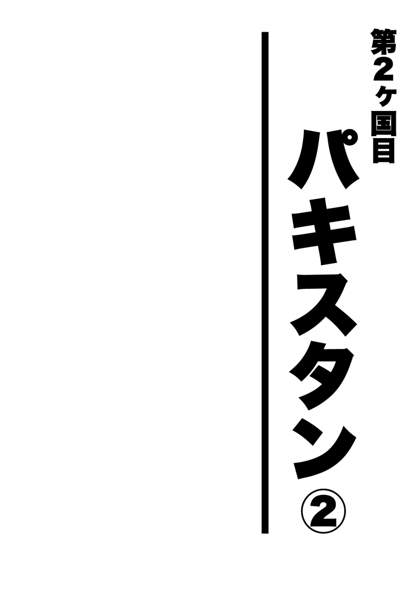
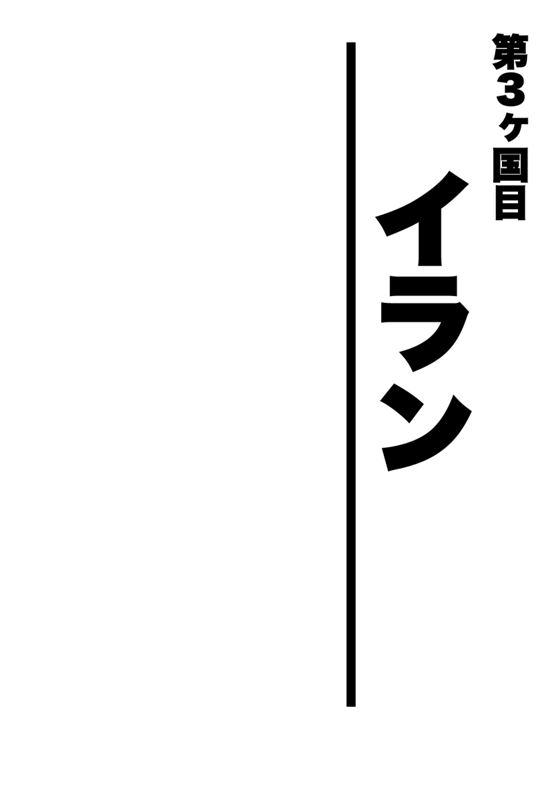
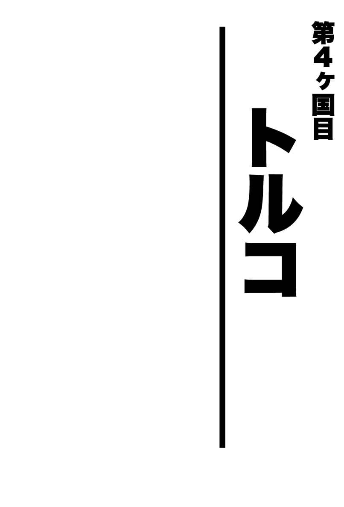

| 珍夜特急2―パキスタン・イラン・トルコ― | |
| クロサワ コウタロウ | |
| Kurosawa Lettering (2013) | |

※本書に記載されている料金は１９９９年当時のものです。

荒野の上流階級
祈るような気持ちで夕日を追い始めてから、果たしてどれくらいの時間が経過しただろうか。
遂に私は闇に包まれつつある道の彼方に、いくつかの建造物のようなものを確認した。思わずヘルメットの中で歓喜の声を上げる。確認できる建造物の数は徐々に増え、どうやら集落らしいという確信に至るまでそれほど時間はかからなかった。
物語ではよく難破船が無人島を見つけて歓喜するシーンを目にするが、この時の私はまさにその状態だったと言えばイメージしてもらえるだろうか。
小さな駅前のロータリー程度の広さに、必要最低限の施設だけを並べただけといった風のその宿場は、国道を行き来する人々でそれなりに賑わっていた。もちろん村とすら呼べるものではない。
間一髪日が暮れる前にたどり着けた私は、その宿場の規模も幸いして、すぐにホテルと思しき建物を発見できた。
広い中庭にパリダカを乗り入れた私は、はやる気持ちを抑えきれずに受付らしき小屋に向かって駆け出す。
パキスタン人独特のイスラム衣装を身にまとった恰幅のいい主人は、バイクに乗った東洋人の突然の来訪に驚く様子もなく、部屋の鍵を渡してくれた。
おまけに主人は私のジーンズの膝頭が破れているのに気づくと、事情を察したのか薬を持ってきて処置してくれた。どうやら彼はこの宿場で医者の役割も担っているらしい。
丁寧に礼を述べたあと、私は万が一の可能性に賭けて、この宿場におけるバイク屋の有無を尋ねてみた。パリダカの曲がったステアリングだけはできれば早急に何とかしたい。
すると主人は、何とこの建物の隣がそうだと言うではないか。
あまりの幸運に、私は渡りに船とすぐさま荷物を部屋に投げ込み、大急ぎで愛機を隣に引きずっていった。
この宿に到着した際、私がその存在に全く気づかなかった点からも、いかに動転していたのかが窺えると思う。
チーフメカニックらしき若い男は、私の渾身のゼスチャーによる事情説明を理解したのかしないのか、そんなことかとでも言わんばかりに笑うと、興奮している私をまず落ち着かせた。
今日中、否、せめて明日中には直るだろうかと訊こうと思った刹那、彼はパリダカにまたがったままの私の正面に回ると、膝で前輪を挟み、力まかせにステアリングバーを捻った。
「直ったよ」
確かに直っていた。
あとで聞いた話だが、バイクのフロントフォークは転倒すると曲がるよりも先に締めつけているボルトが緩み、それによって歪んでしまうことが多く、調整してボルトを締め直してやればほとんどの場合がそれで直ってしまうらしい。よほどのことがない限りフォークやステアリングバー自体は曲がらないという。
＊
安堵した途端に私は激しい空腹感を覚えた。そう言えば今日は朝から一度もまともな食事にありついていない。私は宿場を徘徊して何とか１軒の食堂を見つけると、すぐにその暖簾を潜った。
乏しいメニューの中からアル・マターという肉なしカレーを選んで注文すると、一息つくために煙草をくわえる。この時になって私はようやく、こういった小さな店では必ず浴びるはずの熱い視線がないことに気づいた。
周りを見回してみると、客のほとんどは店の片隅に設置してあるテレビの砂嵐のような映像に夢中になっている。なるほど。このお陰か。
一先ず腹を満たした私は、ホテルの主人に事の顛末を報告してから部屋に戻る。何処かで見たことのある土間に縄のベッドという部屋で簡単に荷物を整理すると、シャワーを浴びるために外に出た。
しかし私は、主人に聞いたシャワールームだというプレハブ小屋に入って、いささかその行為を躊躇してしまった。
用足しもそこで行うようになっている点を見ても、おそらくこれはユニットバスということになるのだろうが、ボットン式――つまり土間に掘られた穴からは、先客たちによって積み上げられた落とし物が顔をのぞかせている。
湯船――ではなく、浴びるための水は横のドラム缶に溜められていて、どうやら尻もこれで洗うらしい。
脱いだ服の置き場所もなかったし、大分寒くなってきたこの時間帯での行水はちょっと辛いものがある。どの道かぶった水によって崩れてくるであろう人糞を目の前にして、それを行うだけの勇気はなかったので、私は何も見なかったことにしてこの小屋を出た。
できれば垢を落としてすっきりしたかった私は、落胆しつつ２階の自室に戻ったのだが、その途中で信じられない光景を目の当たりにした。
部屋に戻るには母屋の外に設置された階段を使うのだが、そこを上がっている最中にふと顔を上げた私は、頭上――つまり夜空に、驚くべき数の星が瞬いているのを見たのである。ここで「驚くべき数」と書いたが、日本の田舎ですら決して見られないほどの数なのだ。まさに無数の星である。
――何という数の星だ。これだけの星が夜空に存在していたなんて――。
あまりの感動に打ち震えた私は、疲労もすっかり忘れて縄のベッドをバルコニーに引っ張り出すと、しばらくの間そこに寝転がって、ただひたすら天然のプラネタリウムを独占していた。
私はこの時初めて「天の川」という名の由来を知った気がした。確かに川である。
今眼前に横たわっている「天の川」は、私がかつて幼少の頃に郷里で観察したそれとは根本的に違っていた。
私が育ったのはお世辞にも都会と呼べるような場所ではなかったが、確認できた「天の川」は「川」と呼ぶにはあまりにも貧相だった。
だから私は子供心にも不思議だったのだ。何故そのように名づけられたのだろうかと。
しかし今、私の目の前に広がるそれはまさに「川」だった。何しろそこに含まれるべき星座をひとつも見つけられないのだ。それは東京の空とは全く逆の理由で、多すぎる星のためにもはや星座を結べないのである。
そうこうしている間にも、いくつもの流れ星が願いごとを３回唱える暇も与えずに落ちていく。
私はこの荒野ならではの夜のエンターテイメントに完全に心を奪われ、時が経つのも忘れてただただ見入っていた。
＊
この辺りでは１日で春夏秋冬を体験できてしまうらしく、冬の夜が明けると春の朝になり、やがて夏の昼へと移ろいゆく。この気温差はちょっと信じ難い。
やっとの思いで見つけたオアシスだったが、のんびりしている時間はない。できるだけ早く出発し、今日こそクエッタにたどり着かなくてはならなかった。いつでも昨夕のように、運よく宿場が見つかるとは限らないのだ。
出発前、昨日世話になったバイク屋に挨拶のために寄った私はふと思いつき、ここ最近で大型バイクに乗った西洋人の男女を見たかどうか尋ねてみた。
ノッチとシルビアである。
インドのニューデリーで別れた彼らもまたクエッタを目指しているのは間違いなかったので、もしかしたらこの宿場に寄ったのではないかと考えたのだ。これだけ小さい集落である。もし彼らが通過していれば、目撃されている可能性は十分にあった。
彼らとの時間差がわかれば、あるいは追いつけるのではないかという希望を、私はまだ捨てきれていなかったのである。
チーフメカニックは、大きな日本製のバイクに２人乗り――という点だけは憶えていた。私がここを訪れるちょうど２日前のことらしい。
――やった！ ２日のビハインドか。追いつけない距離ではない。
昨日の２度にわたる転倒は、私を少女のように臆病にしていた。情けないことだがとにかく早急に誰かと会って、旅を続けるための勇気を少しでも分けてもらいたかったのである。
走るための目標を見つけた私は、昨日に勝るとも劣らないペースで荒野に伸びたひと筋のアスファルトを疾走する。
路面状態は昨日よりもさらに悪くなり、むしろアスファルトの部分の方が少なくなってきていた。
そのアスファルトにも突如として１メートル近い落差が現れたりするので、集中していないと期せずしてジャンプしてしまう。完全装備の状態で車体が浮いてしまえば、サスペンションなどはあってないようなもので、その都度私はパリダカの足回りを心配する。こんなところで何かあればそれこそ一巻の終わりなのだ。
見渡す限りの荒野をひとりで走り続けていると、常にこういったネガティブな想像が頭を過ぎる。私はそれを大声で歌うことで紛らわせていた。
ほとんど休みなく走り続けた私は、夕方にローレライという宿場に着く。
ここはかろうじてミシュランにも載っており、距離を計算した結果、あと２００キロほどでクエッタに着けることが判明した。
ガソリン補給のためにスタンドに寄った私は、そこの店員にもノッチとシルビアについて訊いてみた。するとちょうど昨日のこの時間に、２人を乗せたＤＲがここで給油したという。どういう訳かビハインドは１日になっているではないか。
――これなら今日中にクエッタに入れれば、２人と再会できる！
再会という甘美な誘惑に取り憑かれた私は、ここローレライでの宿泊を放棄し、再び愛機を走らせることにしてしまう。普段であれば昨日の事態を省みて、決して下さない決断である。
全ては恐怖を煽り立てるこの死の大地のせいに違いなかった。
ローレライを発ったのが既に夕方だったので、いくら信号がないとは言え、２００キロなど日が暮れるまでの間に走れるはずもない。加えて正面に回った夕日が私の視界をことごとく遮り、ただ真っ直ぐ走ることすらままならなくなった。
私は結局、日が落ちて完全に暗闇と化した中を走る羽目に陥っていた。２度の転倒があったとは言え、それでも日が暮れる前には宿場にたどり着けた昨日よりも遥かに性質が悪い。
曇り空のせいか月明かりすらない暗黒の荒野を、ヘッドライトと補助ライトの２つの明かりだけを頼りに慎重に進む。
私に見えているのは３メートルくらい先の、これまた半径３メートルにも満たない空間だけだ。しかもアスファルトはいつの間にか砂利道に変わっている。タイヤは滑るし全く思うように走れない。
今さらながら自分の下した決断を後悔しつつ、秋の夕方が終わって到来した冬の夜に凍えながら、私はとにかく転倒しないことだけを心がけた。何よりも今は暖が欲しい。
その刹那、私は前方に人工的な明かりを見つけた。どうやら田舎のバス停のような屋根つきの建物らしい。
私はその掘っ立て小屋に急いでパリダカを横付けすると、矢も盾も堪らず中に飛び込んだ。駅の待合室のようなその小屋の中心ではドラム缶の中で火が焚かれていて、数人の男たちがそれを取り囲んで温もっている。
私はとりもなおさず同席の許可を求めた。男たちは訝しげな表情のまま無言で顎をしゃくる。
――何て暖かいんだ。
身体は徐々に体温を取り戻したが、一方で心の方は、ここを離れてまた走り出すことに完全に嫌気が差してしまった。
私は彼らに、ここでひと晩眠らせてほしい旨を恐る恐る申し出てみた。何人かはすぐに理解してくれ、構わないという素振りを見せる。
――やった！ 貴重品ごと寝袋に入って寝れば、何とか夜はやり過ごせそうだ。
私は大きく胸を撫で下ろし、荷物を取りに愛機に向かおうとした。
その時。
「ノー。ノー」
否定の英単語を耳にした私は反射的に動きを止めた。
振り向くと、ひとりだけイスラム衣装の上に背広を着た中年の男が、首を振りながらモゴモゴと何か言っている。
私は必死に、いいではないか、迷惑はかけないしゴミだってちゃんと持って帰ると言ってみたが、理解したのかしないのか彼は頑として首を縦に振らず、そのまま私を外に連れ出してしまった。
落胆した私が、こうなったら思い切り不平不満を言ってから出ていってやろうと考えていると、背広の男は何処からか自分の小型バイクを引っ張り出してきてエンジンをかけた。
どうやら「ついてこい」と言っているらしい。
ここで寝れない以上はどの道走り続けるしかなかったので、私はとりあえず彼についていくことにした。パリダカにさえ乗っていれば、この男が万が一よからぬことを考えていたとしても、そのまま走って逃げることもできよう。
男が一体どういうつもりなのか、ましてや何処に向かっているのかなどは皆目見当もつかなかったが、彼は勝手知ったる荒野の小道を奥へ奥へと進んでいく。後ろを走りながら私は彼のバイクの性能を推し量り、パリダカなら万が一の際にも逃げ切れると判断した。
私たちが到着したのはわりと大きな住宅の中庭だった。どうやら彼の家らしい。
――そうか。彼は私を自分の家に招待してくれたのか。
そうとわかれば当然彼への態度も改めなくてはならない。
バイクの排気音で気づいたのか、母屋から年配の男が出てくる。私をここまで連れてきた背広の男は彼と何か話すと、向かって左手の棟を指し示し、そこに荷物を入れるよう指示した。
招待にあずかっている身としては誠に言いにくかったが、私は愛機だけは安全なところに置かせてほしいと懇願した。
彼らを信用していない訳ではなかったが、疑念の芽は早めに摘んでおくに越したことはない。
背広の男は少し思案したあと、私とパリダカを別の棟に案内した。
のぞいてみるとそこは、牛や鶏たちの住み処だった。
私は家畜たちに頭を下げながら小屋の片隅に愛機を停めると、そのまま最初に指示された棟へと向かう。パリダカよ、この臭いも今晩だけは我慢してくれ。
＊
パキスタンでよく見かける土と煉瓦でできたこの離れ屋は、どうやら母屋とは繋がっておらず、中から若い男が出てきて私を迎えてくれた。
部屋の広さは８畳ほど。立派なセミダブルのベッドの上にはアラビア模様の美しい布団がかけてあり、もちろん床にはペルシャ絨毯が敷いてある。
何よりも暖かい。よく見ると中央には見たこともない形をした金属製のストーブがあり、煙突らしいパイプが屋根へと続いていた。
私はこの部屋の主らしき若い男に従ってとりあえず床に腰を下ろした。すると少ししてから背広の男と年配の男が入ってきて、自己紹介が始まる。
と言っても彼らはほとんど英語を解さず、年配の彼が少し話せる程度だったので、その内容を理解するには想像力を働かせるしかない。もっともいまだに英語が心もとない私としては、実のところこういう会話の方が得意だったのだが。
まずわかったのは、私をここに連れてきた背広の男の名前がサラーム・アブドルだということ。職業は医者。ここにいる３人はどうやら兄弟のようで、彼は次男にあたるらしい。
そして通訳をしてくれている年配の方が長男、この部屋の主である若い男が三男だということまでがわかった。長男は学校の先生のようで、そのため多少ではあるが英語を話せるらしい。この場合彼抜きでは話が全く進まない。
ちなみに私は次男のことをアブドルと呼んでいた。もちろん彼もアブドルには違いないだろうが、パキスタンでも名前の方が最初にくるはずなので、本来ならサラームと呼ぶべきだったろう。とは言え、ここではあくまで事実に基づくためにアブドルで通す。あしからず。
さておき。アブドルは私に今日はここで休んでくれと言う。ありがたい。
すると部屋の扉が突然開き、３人の子供がそれぞれ手に何かを持って現れた。どうやらアブドルの子供たちのようだ。一番年上に見える男の子は10歳ほどだろうか。あとに続く２人は女の子でさらに小さい。
子供たちが手にしていたのは銀のタライとポット、そして石鹸だった。
何をするのか全く見当もつかなかった私に、アブドルがこれから始まる儀式の手本を見せてくれる。
彼が手を出すと女の子が寄ってきてタライを差し出し、そこにかざされたアブドルの手に息子が銀のポットに入ったお湯を注ぐ。すると一番小さな女の子が持っている石鹸を手渡し、アブドルが洗い終わると息子が再びポットのお湯で流す。
子供たちは同様の作業を繰り返し、私も含めた全員の手洗いを完了させると、そのまま部屋を出ていった。
私ははっきり言って、この礼儀正しい子供たちに感動した。
見方は色々あるだろうが単純に感心したのである。
ほどなくして再び現れた子供たちは、今度は手に手に料理を持っている。座布団並みの大きさに焼かれたチャパティーやカレー、鶏肉といった類いである。それぞれを風呂敷のような布の上に置き、食事の準備は完成したようだった。
３人の子供たちのうち息子だけが残り、ほかの女の子たちは部屋を出ていった。
――そうか。これがイスラムの作法なのか。
イスラム教において、長男は将来の家長として厳しく育てられるというが、このような席にも、家督を継ぐべき息子のみが同席することを許されたのだろう。息子の表情には僅かに緊張が漂っていて、大人たちの話を理解しようという必死さが窺えた。
薄暗い明かりの中での食事が終わると、息子が残りものを外に運び出し、もう一度女の子たちも集合して手洗いの作業をして回る。
息子も含めた子供たちが出ていったあと、食後のチャイを飲みながら私は大人たちに色々な話をした。
しかし言葉の壁もあり、あまり長く話を続けることに窮した私は、ふと日本から仲間たちの写真を持ってきていたのを思い出す。
十数枚の異国の写真を興味深く回し見していた３兄弟は、突如として会議を始め、長男の先生がその結論を訳した。
「できればこの写真を我が家の女たちにも見せてやりたいのだが、よろしいだろうか」
この時になって初めて、私はこの家の女の存在に思い至った。
よく考えてみれば子供がいる以上、アブドルに伴侶がいるのは当然だったが、ここに到着してから挨拶に来るのは男ばかりだった。
実はこれが先日から気になっていたこと――この国に入ってから町で女を見かけない理由だったのである。
ここパキスタンでは、年頃の娘はほとんど家から出ることがない。男にその姿を見せないためである。このアブドルの家でも女はどうやら別の棟にいて、男たちとは分かれて生活しているようだった。
先生は写真の枚数を丁寧に数えると、確かに同じ数を持って帰ってくることを約束し、女たちの棟に見せに行った。
どうやら私がここの女性陣に会うことは許されないらしい。
しばらくして帰ってきた先生は、律儀にもう一度写真の枚数を確認した。私にとってはそこまでしてもらうほどのことではなかったのだが、きっとこれが彼らの信用なのだろう。
アブドルは私のジーンズの破れた部分に気づき、医者らしく赤チンを塗ってくれた。そして駄目になってしまったジーンズのかわりに、自分のズボンを提供すると申し出てくれたのである。
そのズボンがイスラム独特の――いわゆるボンタンのようなズボンで、正直なところ私ははくのが少し恥ずかしかったために遠慮した。そもそもこんなにダブついたズボンでバイクに乗るのは危険極まりない。
しかし彼は断固としてそれを許さず、最終的にはジーンズの下にでもはけばいいとまで妥協してくれたので、そこまでおっしゃるのであればと、私も有り難く頂戴することにする。
至れり尽くせりのもてなしばかりで心苦しくなった私は、アブドルに日本から持ってきていた巨大な百円ライターをプレゼントしようと思いついた。
彼は煙草を吸う際にマッチを使っていたので、情けないお礼ではあるが実用的だと思ったのである。
「そんなつもりで招待したのでない」
にべもなく突っぱねられてしまったが、私としてもそのまま引き下がる訳にもいかず、何とかして受け取ってもらった。
彼は短く礼を言うとライターをポケットにしまい、再びマッチで煙草に火を点けるのだった。
＊
夜も更け、三男を除いた２人がそれぞれ別の棟にある自分の部屋に戻ったため、私も明日に備えて早く寝ようとインドで買った毛布を広げた。すると三男が必死にそれを止める。
彼は私にベッドで寝ろと言うのである。さすがにそれは悪い。
いきなりやってきた分際で他人の寝床を奪う訳にはいかなかったが、彼は頑なにそれを了承しない。しばらく私は遠慮を続けたが、もしかしたら客人を床に寝かせるのは三男にとって不名誉になるのかもしれないと思い至り、ここは彼の好意に甘んじることにした。
それにしても何と気持ちのいいベッドだろう。こんな寝床で寝るのはいつぶりだろうか。
一方で三男の方は、横でアラーへの祈りを30分くらい続けていた。
私としてもムスリムの祈りを実際に目の当たりにするのは初めてだったため、邪魔にならないように掛け布団の隙間からこっそりと見学させていただいた。何度も立ったり伏せたりと結構な重労働だ。
彼の祈っている方向にどうやらメッカがあるらしい。
翌日、あまりの心地よさに三男に起こされるまで寝ていた私は、後ろ髪を引かれながら豪奢なベッドに別れを告げ、またしても子供たちが持ってきたチャイとクッキーの朝食をいただく。
食後、便意をもよおしたので三男に便所の所在を尋ねた私は、畑に連れていかれてそこで用を足すように言われる。いや、紙とは言わないが、せめて水がないと尻が洗えない。
否、もしかしたらこの土地独自の尻の洗浄法があるのかもしれないと考えた私が、それに関して問うてみたところ、彼はその辺に落ちていたビニール袋の切れ端を持ってきた。
なるほど。しかしそれでは足りないような気がしたので、仕方なく私は用足しを諦め、またそれ以上その話題に触れることもやめた。糞、糞とうるさい日本人だとは思われたくない。
それにしても彼らは普段、何を使って用足し後の処理をしているのだろうか。まさか拭かないということはないと思うが。
荷造りを終えて外に出ると、既にパリダカは家畜小屋から出されていた。これから学校に行くという息子や先生、そしてアブドルに見送られながら私は笑顔で別れを告げる。
結局この家の女たちを拝ませてもらうことは叶わなかったが、私のパキスタンにおける唯一のホームステイとなったこのアブドル家での一夜は、それまで全く無知だったイスラム教という宗教を理解する上で素晴らしい体験だった。
どうしても世界から「危険」や「テロ」などといった印象を持たれてしまう彼らは、その実、千年以上の長きにわたって自らを律し続ける真面目な人々である。
女性の人権問題などでも取り沙汰され、やり玉に挙げられることの方が目立ってしまうが、それに比べて彼らの見習うべき点は全く知らされないことに、何となく作為的なものを感じてしまうのは私だけだろうか。
物事の真実とは自分の目で見て、あるいは体験して判断しなければならないということを、改めて気づかされたような気がした。
霧にむせる町
「中央アジアでもっとも危険な国」と問われれば、この時誰もがアフガニスタンと答えただろう。
太古の昔には、かのアレクサンダーがインドに侵攻するために越えたとされるハイバル峠も、パキスタンとアフガニスタンの国境上にある。
日本とは国交も失われており、当然一般人にはビザなど下りようはずもない。
つまりアフガンに入るなら不法入国という方法しか残されていないにもかかわらず、旅人の中にはその手段でかの地に侵入を企てる者が少なからずいるらしく、そんな輩がアフガンへのゲートとしてよく使う町がこのクエッタだった。
予定より大分寄り道してしまったが、私は何とか無事にこの霧に包まれた町に到着できた。緑がほとんど見当たらないためか、町全体が何処か怪しい雰囲気を醸し出していて、私はその決して賑やかではない町並みを低速でうろつきながら今日の宿を探す。
――ようやくここにたどり着けた。
トライバルエリアを何事もなく抜けられた安堵感は筆舌に尽くし難い。この町を出れば、それこそもう植物とはしばらく無縁の完全な砂漠地帯が３００キロ以上続くことになる。
つまり私にとってまともな補給のできる最後の町が、ここクエッタなのである。
華やいだ町ではなかったのも幸いして、事前に調べておいた今日の宿はそれほど苦もなく見つけ出すことができた。
私は受付で魔術師のような風貌の主人に、バイクを目の前に置ける部屋があるか否かを問う。その時ふと思いつき、私はこの主人にもノッチとシルビアについて訊いてみた。私が昨夜夜間走行を強いられた理由は、彼らに追いつくためだったと思い出したからである。
すると主人は私が泊まるはずの棟を指差し、
「あれか？」
と逆に尋ねる。
果たして彼が指し示したそこには、見覚えのある手製のシートに包まれたバイクと思しき物体が、ボロい建物の前にポツンと鎮座していた。
間違いない。ノッチのＤＲである。
私は小躍りしたいのを抑え、いつものように値切ることすら忘れて払いを済ませると、荷物を運ぶのも後回しにしてＤＲの停めてある部屋に向かって駆け出した。
＊
ノックをして出てきたのはシルビアだった。
見覚えのある東洋人のいきなりの来訪に驚くシルビアに対し、私は大分端折ってこれまでの苦難の道のりを説明したあと、ノッチの行方を尋ねる。どうやらノッチはひとりで両替に行っているらしい。シルビアは体調を崩し、ここで寝ていたのだという。
つまり彼女の体調不良のお陰で１日多くここに滞在せざるを得なかったために、私は彼女たちに追いつくことができたという訳だ。
そのシルビアも大分復調していて、ちょうど明日には出発するつもりだったというから、何とも運のいい話ではないか。
愛機と共にほったらかしにしていた荷物のことを思い出した私は、一度彼女に別れを告げて２階の部屋に上がると、その興奮いまだ覚めやらぬままベッドの上でただ茫然としていた。
――本当に......彼らに会えた。
道が限られているとは言え、この荒涼とした地で２日のビハインドを乗り越えて再会できるなど、実は半信半疑だったのである。
私は自身の興奮を落ち着かせるために、とりあえず煙草に火を点けた。その刹那、何者かが私の部屋の扉をノックする。
声の主は、
「ポリス」
とだけ言う。
私は騙されなかった。ノッチである。
恋人同士の再会でもあるまいし、あまり喜んでは恰好悪いと思ったので、私は精一杯冷静を装ってから扉を開けた。
そこには依然としてジーザスのような髭をたくわえた愛想のいい男が、パキスタン人風にショールをまとって立っていた。
２人は抱き合い再会を喜ぶ。重ねて言うが私にその気はない。あくまで欧米流の喜び方であることを伝えておく。
再びノッチたちの部屋に下りた私は、シルビアも交えてここまでのお互い経緯を報告し合う。
ノッチたちはムルターンで１泊したあと、私がその目撃情報を仕入れたローレライでひと晩を過ごし、それからここに到着したという。よく考えてみればそれが自然な行程だ。いかに私が紆余曲折を経たかということをまざまざと思い知らされる。
シルビアも久しぶりに食欲が戻ってきたと言うので、私たちは場所を食堂に移し、チキンでも食べながら話を続けることにした。
祝い事に酒が欠かせないのは日本もドイツも変わらない。という訳でここは再会を祝してビールで乾杯――といきたいところだったが、イスラム教の国では当然そんなことは叶わない。そう言えば次のイランもイスラム国家ではなかったか。しばらくは二日酔いとも無縁の生活が続くようだ。
ノッチとシルビアは明日ここを出発する予定だったので、シルビアの体調を気遣い、今夜は夜更かしをしないことにする。
その食堂からの帰り道、不意にノッチがある提案をした。
おそらく彼にとってそれは、そこまで熟考したものでもなかっただろうし、あるいは単なる気まぐれに過ぎなかったのかもしれない。しかし少なくても私にとってその提案は、自身のその後の旅を大きく変えてしまうものだった。
「コータロー、俺たちと一緒に行かないか」
彼の横ではシルビアが笑顔で私の返事を待っている。
断る理由などひとつもない。
それどころか彼から言い出さなければ、きっと私から申し込んでいただろう。
こうして私は一時、一匹狼の旅に別れを告げることとなった。
ドイツ国籍を持つシルビアとイタリア国籍のノッチ、そして日本国籍の私による――日独伊三国同盟の締結の瞬間だった。
＊
翌日、私には出発の前にやらなければならないことがあった。それはイラン入国の前に米ドルのキャッシュ（現金）を手に入れることである。
イランは誰もが知る反米国家だ。しかしその建前とは裏腹に、インフレの激しい自国の通貨レアルよりも米ドルが重宝されていて、交換レートは正規と闇で２倍も違う。
つまりイランでは、米ドルのキャッシュを裏ルートでレアルに交換する方が２倍儲かるという訳である。
ただしこれは米ドルのキャッシュに限った話で、トラベラーズチェックという旅行小切手や、パキスタンＲｓでは当然叶わない。
こうした理由から、私はここクエッタを出る前にどうしても米ドルのキャッシュを手に入れておく必要があった。あり得ない話だが、私は日本から米ドルのキャッシュを持ってきていなかったのだ。
町の人に訊きながら、私は所持している米ドルのトラベラーズチェックを、米ドルのキャッシュに換えてくれる両替商を探した。
幸運にもここクエッタにはアフガン人が多く、彼らの多くは両替で口に糊しているらしいので、ここでなら私のチェックも交換してもらえるのではないかと考えたのである。
米ドルのトラベラーズチェックから米ドルキャッシュへの両替は、残念ながら正規の銀行ではやってくれない。そのため私はどうしても不正規の連中に頼らざるを得なかった。
加えて私のトラベラーズチェックはちょっとした問題を抱えていた。
銀行で購入できる旅行小切手トラベラーズチェックは、当該国の銀行にて現地の通貨に換金できる。現金を持ち歩くよりは安全――というのがその存在理由だ。
このトラベラーズチェックは手帳のようになっており、金額の記された中身を切り取って使うのだが、購入した際に中の本体と表紙にあらかじめサインをしておく必要がある。
使用の際には窓口でサインをしてみせ、その筆跡を確認されてからようやく現地通貨を渡される――という仕組みになっていた。
ところが。そもそもサインという行為自体に慣れていない私は、重大な過ちを犯していた。パスポートの方は漢字だったにもかかわらず、このチェックの方には何故からローマ字でサインしていたのである。そのため銀行によっては全く受けつけてもらえなかったのだ。
とどのつまり、保険のために購入したはずのトラベラーズチェックは、私にとって換金できないお荷物となってしまっていたのである。３つの文字を持つ日本人特有のミスである。とは言え、私以外にこの失態を演じたという旅人には会ったことがなかったが。
という訳で、このお荷物をできるだけ早く処分しておきたい。多少のマージンは覚悟の上である。
少々の損失をこうむったとしても、その程度はイランの闇両替を使っていくらでも取り返せるはずだ。２倍のレート差はそれほどまでにでかい。
ようやく見つけた１軒の闇両替屋で、私は20ドルのマージンを払い、２００ドルを両替した。つまり私の手元に残ったのは１８０ドルということになるが、噂通りであればこれはイランで３６０ドル分の価値を持つことになる。それを考えれば１割という馬鹿高い手数料にも目を瞑れよう。
路地裏の汚い小屋で、青い目をしたアフガン人と緑茶を飲みながら行った交渉は、あたかもこれから探検に行くインディー・ジョーンズを彷彿させ、私はひとりその危険な雰囲気に酔いしれていた。
インド人やパキスタン人がチャイというミルクティーを飲むのに対して、アフガン人は日本人と同じく緑茶を飲む。それだけでこの日本人とは似ても似つかない人々に、私は何となく親近感を覚えてしまう。
この辺りのいかがわしい店では様々なものが売られていたが、その中でもっとも私の興味を引いたのは、公然と店頭に並んでいる拳銃だった。
聞くところによると、アフガンに入国を企てる愚か者たちはここで銃を購入し、それを携えて国境を越えていくのだという。
この町からアフガンに入り、そのまま行方不明になった旅人は数知れない。訓練もせずに銃だけを持ったところで、ジョーンズ先生よろしく盗賊と戦える訳がないのだ。
無事に米ドルを手に入れた私は、出発の準備に勤しんでいたノッチとシルビアに報告したあと、私自身もようやくその準備に取り掛かった。
＊
２台のバイクは暖機を終えると、まだ霧に包まれる町をゆっくりとなめるように西に向かって進む。
先頭をノッチに託した私は、荷物と彼女で膨れ上がったその巨大なＤＲの後ろを走る。
つるんで走るというのも私にとっては初めての経験だった。エンジンに負担をかけないためには、こうしてしばらく低速で走る必要があるということも、実のところこの時初めて知った。
ノッチのライドがあまりにも落ち着いていたため、私が彼の失態に気づくには時間がかかった。
どうやら彼は長いこと迷っていたようなのだ。彼にとってこのクエッタは２回目の滞在であったにもかかわらず――だ。
交通整理をしている警官を見つけた私たちは、早速愛機を寄せて町から出るための道を尋ねる。その時ふと嫌な予感がして視線を落とした私は、一生懸命説明している警官の肩にさがる自動小銃の銃口が、私の心臓に当たっているのを確認した。
私は話の腰を折り、現在の由々しき事態を警官に伝えた。すると彼は笑いながら、
「大丈夫だって。セイフティーかかってるもん」
と当然のごとく言った。
ようやくルートに戻った時には既に霧も晴れ、今まで韜晦していたその先には紺碧の空を背景に険しい山脈がお目見えした。
ここからイランまではバロチスタン砂漠という完全な砂漠を横断することになり、クエッタまで以上に過酷な道程となるはずだったが、これまで私が抱えていた恐怖や不安は、いつの間にか完全に消え失せてしまっていた。
砂漠の駱駝
日本人の私にとって砂漠という言葉は単なる記号でしかなく、そこからイメージできるのは異国の情景でしかなかった。鳥取の砂丘が一番身近な砂漠ということになるのだろうが、残念ながら私はそれすら見たことがない。
クエッタを出てしばらくすると、見慣れた灰色の風景は一転して華やいだ黄色に変わる。
相変わらず空には雲ひとつなく、正午に近づくにつれて威力を増してくる太陽と、まるで結託しているかのように私たちを蒸す。
果てしなく広がる黄色い粉砂漠を初めて目の当たりにした私は興奮した。
――これが砂漠というものか。
このバロチスタン砂漠は、イランの国境まで続くはずだった。
ノッチたちと共に一旦愛機を止め、その砂に触れてみる。熱い。
砂浜の砂とは全く異なる――まるで人工的に作り出されたかのような黄色い粉は、すくってみるとすぐ風に流されて消えてしまった。
シルビアは小瓶にその砂を詰めている。彼らは今まで走破してきた砂漠の砂を全て保存しているらしい。残念ながら私は砂を入れておく容器を持ち合わせていない。
今日の目的地は、３００キロ以上続くこの砂漠において唯一宿の取れるダルバンディンという宿場になる。
ノッチたちは既に一度この道を通ったことがある訳だし、何よりも真っ直ぐな１本道のため、迷う余地がない。お陰で私は存分に景色を楽しみながら走行できた。
砂漠では実に様々な自然現象が観測でき、私たちを退屈させない。
まず私たちを歓迎してくれたのはサイクロンだった。遥か彼方の砂丘の稜線近くを、いく筋かの白い糸のようなものがゆっくりと移動している。想像していたよりもずっと小さい。
もっとも興味深かったのはやはり蜃気楼だろう。それはサイクロンと異なりもっと身近に出現した。
どういう訳か緩い丘を越える度に水溜まりが現れる。それは近づくにつれていつの間にかなくなってしまうのだが、私はそれが蜃気楼だと気づくまでにしばらく時間がかかってしまった。
私はその光景のメカニズムがどうにも気になってしまい、遂にはノッチに合図を送ってバイクを止めた。私は自身の目がどうにかしてしまったのではないかと思ったのである。ノッチも確かに道路が冠水しているように見えるという。
歩いて近づいてみると、何処を境にしてか水はたちどころに消えてしまう。そしてバイクのところまで戻ると、またいつの間にか水溜まりができているのである。
かつて理科の授業でその原理を聞いたような気もするが、たとえそれが幻だとわかっていても、毎回今度こそはと思えてしまうほどその偽者は精巧にできていた。
その刹那、シルビアが遠くを指差して、
「あれを見て」
と叫ぶ。
男２人が目を向けると、規則正しく並ぶ砂丘の上空に、あたかも鏡を当てたかのように同じ光景が逆さまに映し出されていた。ノッチは慌ててカメラを取り出すとシャッターを切る。
果たしてこういった現象も撮影できるのだろうか。
このように私たちの旅は全く牛歩のようだったが、人ごみに押し潰されながら遺跡を観光するよりはよほど楽しい。
そんな中で私たちは、砂漠で朽ち果てている駱駝を発見した。果たしてあれは野生の駱駝だったのだろうか。
駱駝で思い出したが、インドも含めてこの辺りではよく駱駝を目にする。
当然野生のものにはなかなか出会えないが、家畜としては牛に次いでポピュラーな存在で、運搬業では特に名を馳せていたように思う。
町で道が渋滞している時などはほとんどが彼らのせいだ。進まない車列の先を見ると大抵、牛、牛、車、駱駝、駱駝、車の順で走行しているので道理である。
ルーカスの話だとオランダには自転車専用の道路があるらしいが、家畜用の道路というものは造れないのだろうか。彼らが通ったあとは言うまでもなく路面が糞だらけになる。
駱駝は想像しているよりもずっと大きいので、初めて見れば度肝を抜かれること請け合いだ。
一方で路面状態の方はと言えば、時折アスファルトが砂に侵食されていて、乗り上げた瞬間にステアリングをとられるため、私はその都度必死にパリダカを押さえつけなければならなかった。
悪路に慣れているらしいノッチは、むしろそれを楽しんでいるようにさえ見えた。運命を全て彼に預けているシルビアは、メットの中でどんな顔をしているのだろうか。
＊
ふと私は、先行しているノッチが何やら左手でサインを出していることに気づく。
この時点ではまだ、走行中の意思疎通について特に決めていることはなかったが、そのハンドサインがガソリンの補充を意図したものだと気づくまで、それほど時間はかからなかった。
いや、ちょっと待て。そもそもこの辺りにガソリンスタンドなどあるのだろうか。
ＸＬ２５０Ｒパリダカは、何と言っても21リットルを誇るビッグタンクが魅力だ。
私がバイクを選ぶにあたり、何よりもタンクの容量を重視したのは前述した通りである。その理由が今旅において、もっとも長く無給油で走らざるを得ない距離が３００キロもあったためなのは言うまでもない。
実はこの燃料の補給がもっとも危惧された区間というのが、このパキスタンからイランへと続くバロチスタン砂漠だったのである。
ここまでのデータによると、パリダカの航続距離は最低でも６００キロ。既にクエッタで満タンにしてきている点に鑑みれば、我が愛機の方はここパキスタンでもう給油する必要はない。
それに比べてノッチのＤＲはタンクの容量が17リットルしかない上に、排気量もパリダカの２倍以上ある。シルビアの体重を敢えて加味しなかったとしても、２人分の荷物やスペアパーツのことを考えると、今さらながら到底無給油でこの砂漠を走りきれるはずがないのである。
私はふとノッチが私を誘った理由を疑ってしまったが、すぐにその疑念は解消されることになる。
ノッチは突然国道を外れると、砂の固まった砂漠に下りた。
ＤＲの向かう先にはいくつかのドラム缶やポリタンク、そして数人の男たちが確認できる。
愛機を停止させたノッチはその男に何やら告げると、慣れた手つきで巨大な漏斗をタンクに差し込み、ポリタンクに入った液体を注ぎ始めた。
なるほど。どうやらここはガソリンスタンドらしい。否、ガソリン屋と言った方が正解か。
バロチスタン砂漠では、時折こういったモグリのガソリン屋を見つけることができる。
彼らはその顔を見ればわかる通りパキスタン人ではない。隣のイランからガソリンを密輸してきたイラン人なのである。
イランと言えば誰もが知る原油産出国だ。
かの地では水より安いと言われているガソリンなら、確かにパキスタンの安い物価で販売したとしても、十分越境というリスクを補って余りある利益を生み出せるに違いなかった。
ただしポリタンクに入っている商品はどういう訳か全て色が異なり、それが一緒くたに注入されているのを見ると、インドで軽油を入れて苦労した思い出が蘇ってしまう。
そういったトラウマからどうしても漏斗の布に濾されて残った異物が気になってしまい、私は遠慮しておくことにした。
給油が済むと今度は腹が減ってくる。
しかし見渡す限りのこの砂漠。さすがに食事処はないだろうと思いながら走行していると、今度はボロと板切れでできた食堂が見えてきた。
２台のバイクは再び国道を下りると、その食堂にて１種類しかないメニューをとりあえず頼む。
出てきたのはピラウ（日本でイメージするピラフとは違い、単純に米を炊いたもの）に、昨日のカレーの残り汁をかけただけのような料理だった。
見た目は何とも貧相だが、これが予想に反して美味い。何のスープを使っているのかは皆目見当もつかなかったが、具が一切入っていないにもかかわらず瞬間にそれを平らげることができたのは、単に私たちの腹が減っていたためだけではないだろう。それとも群がる大量の蠅が、食事を急かしたためだろうか。
食後、その食堂の片隅に設置された販売コーナーを眺めていた私は、密輸品らしき菓子や小物に紛れて見覚えのあるものを発見した。吝嗇家にしては珍しく衝動買いしてしまう。
それは日本でもお馴染みの漢の煙草――セブンスターだった。
まさかこんな砂漠でラッキーセブンを拝むことができるとは思ってもみなかった。
ピース派の私にとって、セブンスターは日本にいた時ですら数えるほどしか吸ったことがなかったが、この際そんなことはどうでもよかった。そもそもこの７という数字は縁起がいいではないか。
私は小躍りしながらノッチにこの日本製の煙草を吸わせに行った。
私の認める正真正銘の漢である彼には、きっとこの煙草はよく似合うはずだ。
たとえ彼がそれを、
「えらい強い煙草だな」
としか言わなかったとしても。
私たちがダルバンディンに着いた時には、既に紺碧の空は綺麗な夕暮れに変わっていた。
１軒しかないホテルに荷を下ろした私たちは、町とすら呼べないこの場所で、多分に残したパキスタンＲｓを使い果たすための買い物に勤しむ。
と言っても私たちの場合、誰かのために何かを買うにはあまりにもスペースが限られているし、少なくても私に限ってはまだそんな時期でもないように思えたため、物色はあくまで今後の旅に有益なものに限られる。
私はシルビアの提案で、これから寒くなるというイランに備えてイスラム模様のスカーフを買うことにした。
ノッチと私はお揃いの柄のものを買う。ノッチが黒で私が緑になったのは、全てシルビアの見立てによるものである。

エキゾチック・イラン
ダルバンディンをあとにした私たちは再び砂漠を走り続け、一路イランの国境を目指す。
どんなに素晴らしい景色でも日がな１日眺めていれば退屈する。
先日はあれほど衝撃的だった光景も、私にとっては一夜にして何の変哲もない風景に変わっていた。となれば長居は無用である。
放浪とは、そこに居続けることによって生まれる安定よりも、新しいものへの好奇心が勝った時に初めて可能となる。
この時既に私の心は、これから向かう新しい国への興味で満たされていた。何事もなければ今日中にイランの国境を拝むことができよう。
私たちが国境にたどり着いたのは、昼過ぎという何とも中途半端な時間帯だった。
クイ・タフタンと呼ばれるこの国境は、旅人や役人のための簡素な宿泊施設があるだけの場所だったが、私たち３人は協議した結果ここで宿を取ることにした。つまり越境前にもう１泊だけパキスタンで過ごすことにしたのである。
その理由は到着した時間帯もさることながら、３人ともまだ相当なパキスタンＲｓを持て余していた点にある。中でも私は完全に計算を誤っており、ここに１泊や２泊したところでは到底使い切れないほどのパキスタンＲｓを所持していた。
隣国の通貨を当該国に持ち込むというのが、一番賢くない両替の方法であることは既に述べた。それをわかっていてなお、この結果である。何とも学ばない男だ。
またしても１軒しかないホテルに荷を下ろしたあと、私たちはロビーでこのパキスタンＲｓの処理について話し合っていた。
すると隣のテーブルにいたひとりの白人旅行者がおもむろに話しかけてくる。
彼の発音が酷く聞き取りにくく、それが英語だとわかるまでには少々時間がかかってしまった。
「なあ、話が聞こえちまったんだけど、あんたらこれからイランに入るのか？」
そうだと答えたあと、私たちは旅人の礼儀として交互に自己紹介した。
このオーストラリア人のマイケルは、どうやら私たちとは逆のルートでここにたどり着いたらしい。
「――なるほどな。そこで実は相談なんだがよ。俺はあんたらとは逆にイランレアルを大量に余らせてここに来ちまってな。もしよかったら俺のレアルとあんたらのパキスタンＲｓを交換しねえか？ わかってるって。とびきりのレートで交換してやるよ」
もちろん断る理由はない。特に私にとっては渡りに船だった。
ここでマイケルが私たちに提案したレートは、１００パキスタンＲｓ＝１００００イランレアルだったが、これがべらぼうにいいレートなのは、イランの有名な闇レートですら１００パキスタンＲｓ＝５２００イランレアルであることからも明らかである。
しかしこれは逆に、マイケルにとっては全く旨みのない取り引きなのを物語っていた。
特に２０００パキスタンＲｓ以上余らせていた私は、その公正さに欠ける取り引きに対して漢として異議を唱えた。
「ああ、そんなのわかってるよ。でもあんたらはそれ以上パキスタンＲｓを持ってねぇんだろ？ それでいいよ。俺だってここまでの道中で、色んな奴らに似たようなことをしてもらったしよ。へへへ。ここらで帳消しにしとかねえとな」
何と漢気溢れる台詞だろうか。
ちなみに日本語訳に関しては彼の漢気に対して敬意を払い、多少演出している。マイケルは背こそ高かったが、わりと線の細い――どちらかと言うとオタク風のオージーだった。
思わぬ出会いによって、ネックとなっていた余り金を資産にかえることのできた私たちは、翌日満を持してイランへの越境に挑んだ。
＊
私にとっての２度目の越境は早朝から始まる。
今回も前回と同じく単独での作業ではないためか、気分的には免許を更新に行く時とさほど変わらない。
パキスタン側はどういう訳か、何処からこんなに湧いてきたのかと思えるほどの人でごった返していたが、私たちは再び第３国人という特権を活用して一足先に手続きを終えることができた。
そしてフェンスを潜り、私たちは無事３ヶ国目イランに入国を果たす。
国境事務所らしき建物の壁には大きく、最高指導者ホメイニと大統領ハタミの肖像画が劇画タッチで描かれている。
そして何よりもこのフェンスを潜った時点で、私にとって慣れ親しんだ左側通行が終わりを告げた。
インドもパキスタンも日本と同じ左車線だったため、私はこれまで何の違和感もなく走れていたが、ここから先にはイギリスを除き、もう左側を走れる国はない。
慣れるまでは少し不安だったのでしばらくノッチに先行してもらうことにする。ノッチはもともと右側通行に慣れ親しんだ人間だ。
パキスタン側とはうってかわって人気のないイラン側の入国審査は、予想通り厳しいものだった。
イスラム教シーア派の大国イランは、誰もが知る政治と宗教の強く結びついた国である。
ほとんどの国民が無宗教という極めて珍しい国で生まれ育った人間にとって、政教分離とは縁のないこの国のルールはなかなか理解し難い。
例えば酒、ポルノが禁止なのは有名だが、音楽についても持ち込みに制限がある。カセットテープを２本以上持ち込んだのがバレれば、即没収となってしまうのだ。
女性の場合はその肌はおろか、髪の毛を人前にさらすことも許されない。男を惑わせるというのがその理由らしいが、少なくても私は女の髪で欲情したことはない。
この髪に関してのルールはもちろん外国人とて例外ではない。シルビアにはパキスタン以上に窮屈な生活が強いられることとなるだろう。
このような事情から所持品検査が難航するのは予想できていたので、私は５本以上持っていた日本人歌手のテープを、既に荷物の奥深くに隠していた。
郷里から持ってきている女友達が半袖姿で写っている写真も、でき得る限り目立たないよう日記に仕込んである。全ての荷物を机の上に並べられない限り、見つかることはないはずだった。
ところが。荷物を全て机の上に並べられたのは私ではなく、ノッチとシルビアの方だった。私の方は言うと、検査官が一瞥をくれた程度である。
シルビアはその厳重なチェック――というよりむしろ、検査官の興味本位による職権濫用に腹を立てたらしく、彼らが英語を解せば何日かは檻の中で過ごさなくてはならなくなるような酷い悪態をついていた。もっとも避妊具まで見せびらかされては、確かに悪態のひとつや２つもつきたくなるだろう。
当然ながら特に怪しいブツが発見されることはなく、私たちは嘲笑を浮かべるイラン人たちを横目に、さっさとこの胸糞悪い国境をあとにした。
しかしこの時、私たちはまだ知らなかったのだ。
検査官たちの非礼に満ちた態度など、これから始まる怒りの日々に比べればあくまで序章にしか過ぎなかったということを――。
＊
何にせよ無事イラン入国を果たした私たちは、一先ずイラン最初の町ザヘダンを目指した。
私たちにイラン入国を実感させてくれたのは、残念ながらイラン文化との触れ合いではなく、昨日まであれほど晴れ渡っていた空にかわり、突如として垂れ込め始めた暗雲だった。大地と空以外に何もない景色の場合、それだけでもう別の国になってしまうのだ。
美しかった黄色い砂漠はいつの間にか消えてなくなり、辺りは見渡す限りの灰色砂漠に変わってしまっている。仮面ライダーが戦闘する際、好んで利用していた工事現場――あんな風景だ。こうした環境は先の執拗な荷物検査と相まって、私を何となく不快にさせた。
実際、私の悪い予感はすぐに現実のものとなった。
まず私たちを苦しめたのは、数キロごとと言っても過言ではないほどのペースで行われる軍隊の検問だった。
小銃を持った軍人にバイクを止められ、いかなる理由の検査なのかを一切告げられることなく、パスポートやその他彼らの気に入った品々を弄ばれるのである。それがあまりにも頻繁に行われるため、旅は遅々として進まない。
アルファベットを読めない彼らが旅行者のパスポートをのぞき見ることに、果たしてどんな国防上の利点があるのかはわからなかったが、彼らが単に興味本位でそれを行っているのはその態度からも明らかだった。
ちなみにここイランに対して、「危険」という印象を持っている人は少なくないと思うが、実のところ中東においては比較的安全な国だったりする。何しろあのイラン・イラク戦争の時ですら旅できたというから驚きだ。
さらに国自体は原油資産で潤い、国民は無条件でその恩恵に与ることができる。
インフラ整備も進んでいて、こうして走っているアスファルトの舗装道路も、下手をすれば日本のものより綺麗だったりするのだ。
ただし国土のほとんどを灰色の砂利砂漠や荒野に覆われ、農作物に関してはお世辞にも実り豊かとは言えない上に、独自産業が乏しい国でもある。
つまり生まれ持った資産を食い潰しているだけのドラ息子に過ぎないのだ。これはイランに限らず、この辺りの中東諸国には総じて言うことができよう。
ちょっと前までは、その原油の恩恵に与りたい日本と技術力を欲するイランの利害が一致していて、両国はかなり親密な間柄だったそうだ。お陰で両国を行き来するにもビザは必要なかったらしい。
まさにこうした状況が、上野公園で一世を風靡したあの無限テレホンカードを生んだとも言える。
我が国がアメリカとより一層の蜜月関係に入った今となっては、遠い昔の話である。
さておき。こうした性質の悪い嫌がらせのせいで、私たちはこの日中に予定していたザヘダンへの到着を断念せざるを得ず、夜は野宿で凌ぐことに決めた。
何を隠そう私にとっては人生初の野営である。
一方でノッチとシルビアは野宿が基本のスタイルだったので、当然段取りは彼らに一任する。私は一介の良き生徒に撤することにした。
太陽はまだその姿を地平線上にとどめており、これなら綺麗に舗装された国道を下りて荒野を走るにしてもさして障害はなさそうだ。
ノッチのあとに続いて道なき道をひた走り、私はいくつかの丘を越える。
未舗装路がどうにも苦手な私は必死でステアリングバーにしがみつきながら、とにかく転倒しないことだけに集中する。
しばらく走ると、私たちは偶然にも広大な塩湖にたどり着いた。即座にその湖岸を今宵の野営地に決める。
塩湖というものを見るのが初めてだった私は、さっさと荷を降ろすと恐る恐る湖面に触れてみた。それはまるで猫の舌のように刺々しい肌触りで、味もかつて私がレストランの厨房で慣れ親しんだ塩とは全く似て否なるものだった。
塩湖の向こう側に沈んでいく夕日を眺めながら、私たちはノッチが淹れてくれたコーヒーを愉しんだ。
何と情緒に溢れた光景だろうか。それからほどなくして現れた満天の星は、今夜はテントを張る必要がないことを私たちに教えてくれていた。
この時私は後学のため、野営術に関してノッチに教えを乞うた。
彼らは野営をするにあたり、細心すぎるほどの注意を払っていた。
まず場所選びだが、これは必ず日が落ちる前に探し始め、国道沿いや人家の近くなど、人目につくところからはなるべく離れる。野営地点を現地の人間に知られないようにするためである。何よりも一番の怖いのは人間ということか。
彼らの場合、国道を下りた時点でヘッドライトも消す。
いい場所を発見したらすぐにエンジンを切り、ミラーも布で覆うという徹底ぶりだった。
暗くなってからの明かりは厳禁のため、食事や洗い物などは全てまだ明るいうちに済ませてしまう。天候の許す限りはテントを張らず、寝袋のみで就寝する。万が一夜中に誰かが来てもすぐ気づけるようにという配慮だった。
さらにノッチは就寝の際、必ず枕元にバイクの予備のチェーンを置いていた。言うまでもなく有事の際の武器である。確かにこれで殴られれば、人だろうが動物だろうが相当なダメージを受けるだろう。
そのほかにも彼は、食料関係のゴミは袋に入れて木に吊るすとか、できるだけ荷物はロックして身の回りに置いておくだとか――慣れるまではうんざりしそうなくらいの項目が並べてくれたが、これらが全て彼らの失敗談に基づいているため、ないがしろにする気にはとてもなれなかった。
朝起きてブーツをはく際、必ず一度逆さにするというルールは、まさにノッチがブーツの中で蠍を踏み潰した経験による。
徐々に慣れつつある英語での団欒の中、私は川の字の一端を担いながら、いつかは来るであろうひとりでの野営に思いを馳せ、同時に不安に駆られるのだった。
アリ・アミールゲストハウスでの出来事
パキスタンでも感じていたことだが、季節は夏に近づいているにもかかわらず、何故か私の日々は寒さが増していく一方である。
上野で寝袋だと思って間違って購入してしまった寝袋カバーを畳みながら、私は早急に本物の寝袋を手に入れる必要性を感じていた。
私たちにとってイラン最初の町となるザヘダンは、日曜日だったせいもあってか不気味なまでに人気に乏しかった。綺麗に整備されたインフラが無機質な町並みと相まって、より一層暗い印象を与える。
もともと昼食をとるためだけに寄った町だったので、さして長居するつもりもなかったが、予想外にもそれすら難航した。
何故かどの店も閉まっているのである。曜日の問題だろうか。２台のバイクの排気音だけが虚しくザヘダンの町を彷徨う。
ようやく町外れでサンドイッチ屋を見つけた私たちは、それがこの空腹を満たすには到底役不足であろうことを承知しつつも、その暖簾を潜った。
どうやら陳列ケースに並べられたスパゲティやソーセージといった食材を指定して、コッペパンに挟んでもらうというシステムのようだったが、私たちにとってそれは想像以上に骨の折れる作業だった。
イランの人々はファラーシーと呼ばれるイスラム文字を使う。
これは先国のパキスタンも同様だが、かの国でも唯一数字だけは算用数字を使っていたため、買い物などには支障がなかったのだ。さらにはかつて大英帝国の一端を担っていたという事情から、英語を解する者も少なくなかった。
しかしここイランでは英語に関しては全く通じなかったし、おまけに数字表記までもがアラビア数字となっており、とてもではないが理解できたものではない。
アラビア数字がどんなものかと言うと、例えばゼロは点で表され、１はわりと私たちの使うものに似ているが、５あたりまで来るとハートマークを逆さまにした記号になってしまい、何も知らなければまさかこれが数字だということにすら気づけない。
一度はこの国を横断しているノッチとシルビアでさえ、時間をかけなければ私たちの支払いを計算できない有様だった。
ところが。その計算によって明らかになった食事代を見て、私は愕然とした。
この時私たちが食べたのはサンドイッチ６本と、ザムザムというコーラによく似た飲み物３本だったのだが、代金は合計で何と６０００Ｒｌ。日本円にして約70円という安さである。
その安さに驚いたインドでさえ、この金額はあり得ない。物価とインフラだけ見れば、どうやらこの国もそこまで捨てたものではなさそうだ。
さらに私は給油の際にも度肝を抜かれた。
１ドルで10リットル以上が入るのである。
イランではガソリンが水よりも安いという話は私も聞いていたが、それは比喩表現などではなく事実だったのだ。
貴重な化石燃料の真なる価値を知らない彼らはその扱いもぞんざいで、ガソリンスタンドでは給油ノズルからポタポタと滴り落ちているにもかかわらず、見向きもされない。お陰で床は真っ黒になっており――否、これについてはもったいない云々以前に危険だろう。
安い昼食を済ませた私たちは、すぐザヘダンを離れ、古都バムに向かう。
バムには有名な遺跡があり、イランでも５本の指に入る観光スポットとされていたが、私たちにとってかの町は単なる宿場町以外の何ものでもなかった。
しかしこの時もし、４年後の大地震でこの町が崩壊してしまうことを知っていれば、私たちも遺跡を素通りするなどという愚行は犯さなかったに違いない。いかに観光に飽いていたとは言え、何とも残念な決断を下したものである。
バムの観光を犠牲にしてまで私たちが先を急いだ理由は、次の都市シラーズでビザの更新という重要なミッションがあったからにほかならない。
私たちがインドのニューデリーで入手したビザはトランジットと呼ばれる種類で、この広いイランを横断するのに１週間というその効力はあまりにも不十分すぎた。
お陰で私たちは、途中に点在する大都市でビザを延長しながら進まなくてはならなかったのである。
シラーズはそんな私たちにとって最初の延長ポイントとなる。
とは言え、かの町に１日でたどり着けるはずもなく、そのためこの日はここバムで１泊することにしたのだった。
バムは先に通過したザヘダンと同じ程度の規模の町で、今度は人も行き交っていたが、どういう訳か宿が見当たらない。
否、厳密に言えば「見当たらない」というのには語弊があった。何故なら私たちは１軒だけ宿泊できる場所を見つけていたからだ。しかし私たちは３人とも、できればそこに泊まることだけは避けたかったのである。
その理由は、宿の入り口に大きく書かれた「禁煙、土禁、静かに！」という――あたかも修学旅行生を相手にするかのような看板にあった。「静かに」はまだいいにしても、「禁煙」についてはちょっと我慢できそうにない。この点に関しては私と同様に喫煙者であるノッチも意見を同じくしていた。
しかし日が暮れるまでにほかの宿を見つけられなかった私たちは、結局このアリ・アミールゲストハウスに泊まることを余儀なくされた。
果たしてこのゲストハウスは、私たちの予想通り居心地の悪い宿だった。
宿の主人は融通の利かない生活指導の先生のように、くどくどと下手な英語でこの宿に泊まる上でのルールを説明する。
やたらと早い門限にも辟易したが、一方でイスラムの国にもかかわらず男女同室というのは一体どういう訳なのだろう。異教徒など、ひとつの檻にぶち込んでおけばいいとでも考えているのだろうか。――いやいや、あまり穿った見方はやめよう。
私たちが案内された３階の部屋には、カナダ人の先客がいた。２メートル近い大男と小男のコンビで、大男の方は左手の指が２本なかったため、とりわけ印象に残った。何でも大分前に仕事で失ったという。
一通り自己紹介を済ませた私たちは、２人と別れて宿を出た。
明日にはシラーズに到着してビザ延長の手続きを行う予定だったので、今日のうちにある程度のイランレアルを手に入れておく必要があったのである。いよいよ例の闇両替に挑戦するのだ。
宿を出るとすぐにシルビアが、
「あの２人、絶対にホモよ」
とのたまう。
その根拠は全くわからなかったが、彼女にとって男の２人旅は、それだけで全て許されざる愛の逃避行になってしまうらしい。
＊
既に日は落ちていたが、私たちが探すべきは銀行ではない。そのためのんびりと町をうろつく。
かねてから触れてきたイランにおける闇両替だが、取り扱っているのはクエッタで世話になったような両替屋ではなく、宝石店など外貨を欲している場所だ。そのため私たちはまず宝石店を探すことにした。
ひなびた町の一角で目当ての店を見つけた私たちは、早速交渉に入った。
宝石商は意外と手強く、なかなか噂通りのレートに納得しなかったが、そこはインドやパキスタンで培った私の強気な交渉術が役に立った。
泣き出しそうな顔をしながら、
「首が飛ぶよ」
とゼスチャーでアピールする主人を尻目に、私たちは特に良心の呵責もなく店を出る。この主人だって、私たちが去ったあとには間違いなくホクホク顔で店を閉めるに決まっているのだ。
まだそれほど遅い時間ではなかったが、どういう訳かここでも私たちは食堂を探すのに手こずる。遂には歩きすぎて中心地から外れてしまい、道を尋ねたイラン人の夫婦に、彼らの車で郊外のレストランに連れていってもらうという体たらくだった。
イランで初めて出会った親切なイラン人たちに丁重に礼を述べたあと、私たちはそのちょっとだけ高級そうな店に足を踏み入れる。
酒の飲めない国では、その分食事に期待してしまう。
ここで私たちはチキンケバブ（本当に焼き鳥そのものをイメージしていただきたい）と、レーズン入りのピラウを注文した。ここまでしっかりしたレストランでさえ、メニューに野菜の類いは見当たらなかった。前菜のサラダとして出てきたのは、皿に載った１本の長ネギである。
既に辺りは闇に覆われ、街灯すらまばらだったが、特に急ぐ理由もない私たちは歩いて帰途につくことにした。明かりがなければ、かわりに月や星が私たちの行く手を照らしてくれる。
この時の３人の話題が、もっぱらこれからの食事に対する不安だったのは言うまでもない。
翌日、私たちは早朝から荷造りを始めていた。
チェックポイントのシラーズに向けて、早めの出発が好ましいのは確かだったが、私たちを急かしたのはそれよりむしろ、この極めて居心地の悪い宿から一刻も早く出たいという切実な思いだった。
何よりもここのガキどもから、隙あらば私たちの愛機に悪戯をしてやろうという気配がひしひしと伝わってくる。
こうしてバイクに荷積みしている間にも、建物の影から数人の奴らがじっとこちらを窺っている。あれは間違いなくオイタを企んでいる目だ。
「何だこりゃ！」
突然上がったノッチの声に、私はぎょっとした。
慌てて駆けつけてみると、何とＤＲの後輪が完全にパンクしているではないか。
昨日までは何の問題もなかった箇所の異変だったため、ノッチは早速ここの主人アリ・アミールのところへ文句を言いに行く。もう彼の中では既に、子供たちが悪戯でパンクさせたことに決まっていた。
さすがに私も、まさか小学校の低学年程度の子供たちが、わざわざ刃物を手にして後輪に穴を開けるとは思えなかったが、こんなことの調査に時間を割くのも馬鹿らしかったので、ノッチの気が済み次第、すぐにでもパンク修理を始められるよう準備しておくことにした。
ノッチには申し訳ないが、バイク屋に頼らずパンクを修理したことのない私にとって、今回の事件はそれを学べるまたとない機会だったのだ。
一通り文句を言い終えてある程度すっきりしたノッチと私、そして事態を聞きつけて下りてきたシルビアの３人でパンク修理を始める。
さすがにノッチはこういった状況に慣れていて、作業は１時間程度で完了した。もちろん私もしっかりと作業手順を頭に叩き込んである。
事件は一件落着したかに見え、私たちは後味悪くこのバムを出発したのだが、ノッチの悪態はアラーをも侮辱したのか、何と彼のＤＲは50キロも進まないうちに、再びパンクに見舞われてしまったのである。
こうなると、とてもではないが予定通りのシラーズ到着は望めない。
仕方なく私たちは潰れたままのタイヤで少々国道を外れ、見つけた空き地を野営地に決めた。腰を落ち着けてパンク修理に取り組むことにしたのである。
実のところＤＲの後輪には軽自動車用のチューブが入っていて、しかもこれは既に何度も修繕の施されたものだった。
これは彼らがネパールでパンクした際、チューブ交換がどうしても必要になり、かの地で手に入らなかった二輪車用のチューブのかわりに応急処置的に導入されたものだった。
小さいタイヤの中に無理矢理封入されたチューブはしわくちゃの洗濯物のようになっていて、その部分的な伸縮が劣化の原因なのは明らかだった。既にその役目は終えたと言っていい。この機会に、その後インドで手に入れたという二輪車用のチューブに交換する。
この状況に鑑みれば、今朝のパンク騒動にしても果たして本当にガキどもに非があったのかは疑問だったが、もうおそらく二度とかの地に戻ることのない今となっては、もはや事の真偽を確かめる術はない。
こうして私たちは半日という時間と、空気封入のために男２人の腕を筋肉痛にするといった犠牲を払って、ＤＲのパンク修理を完了させた。
ノッチが遥かネパールから運んできた軽自動車用のチューブは、誠に遺憾ながらこの野営地に不法投棄されることとなった。
どうせ国道沿いにだって、錆びたホイールやタイヤの残骸などが放置されているのだ。これくらいは許される範囲だろう――などと書いてしまえば、かの国の人々に怒られてしまうのだろうが。
ペルシャ湾で洗濯を
思いのほか旅は順調に進む。
野宿生活と「68」と書かれた細くて短いイラン製の煙草にも大分慣れてくる。この「68」という数は、どうやらイランの革命の年を表しているらしい。私の肺にも革命の空気が馴染んできたということか。
無事シラーズにたどり着いた私たちは、明日のビザ延長に備えてまず今日の宿を探す。私たちの場合、立地や料金に加え、バイクを安全に駐車できるというのが必須の条件になるため、宿が容易に見つからないのは致し方ないことだったが、それでもここまで難航するとさすがにうんざりする。
案の定、日が落ちる直前になってもいい物件は一向に見つからず、私たちは辟易していたのだが、その時何処からともなくひとりのイラン人が現れ、話しかけてきた。
話しかけてきたと言っても、言葉の壁のせいでそのほとんどが身振り手振りと思い込みの会話にならざるを得ない。となれば言語にはもっとも弱いが故に、ゼスチャーに関してはもっとも長けた私の出番となる。
私の理解したところによると、どうやら彼は私たちを彼の家に招待しているらしい。
「私は嫌よ。だってその男が、何のつもりで私たちを招待するのかわからないもの」
もちろんシルビアの反応である。
確かに私のゼスチャーとて完全に訳せている訳ではないし、それこそ何処の馬の骨ともわからない男の家に乗り込んでいくのは、唯一の女であるシルビアにとって私たち以上に不安だろう。
私はリーダーであるノッチの判断を待った。
「済まないがコータロー、彼の家を見てきてくれないか？ 俺ももう少しこの辺りで探してみる。シルビアは引き続きバイクの見張りだ」
確かにもっともな判断である。
早速私はこの素性のわからないイラン人のあとについて、彼の家の視察に向かう。お互い言葉での会話は全くもって不可能だったため、酷く気まずい道中となってしまった。
このイラン人の家は日本で言うところの長屋の１室で、確かにそれほど狭くはないし、目の前の敷地には２台のバイクを停められるスペースもあったので、私はその旨を伝えるためにノッチたちのもとに駆ける。
ところが、何とその時には既に２人はホテルを決めてしまっていて、ノッチはＤＲから荷を降ろしながらこのように弁明した。
「済まん、コータロー。俺たちは何とかバイクを中に入れられるホテルを見つけたので、こちらに泊まることに決めた。もしお前が見てきた家がいい物件だったら、お前だけでもそちらに泊まる権利はあるが――」
どうやら知らない人間の家に泊まることを嫌ったシルビアが、私の留守中にノッチに直訴したらしい。
私は何のための骨折り損かと少々腹が立った。
ノッチとて、せめて私が帰ってくるまで待っていてくれてもよさそうなものだ。
ノッチは私にとって永遠に尊敬すべきライダーだが、自分の女には滅法弱いという――見事にイタリア人らしい部分を持ち合わせていた。
結局私はイラン人の招待を断り、ＤＲとパリダカはノッチの見つけたホテルのエントランスに鎖で繋がれた。
私はひとりでシングルに泊まるつもりだったが、ノッチとシルビアの誘いにより３人でトリプルに泊まることとなる。
あれほど知らない男と同じ屋根の下で寝るのを拒んでいたシルビアは、荷の整理を終えるとさっさと服を脱ぎ始め、ブラジャーとパンツだけになってしまう。
ここで照れる方が逆にいやらしいような気がしたので、私は極力平静を装った。そう言えばパキスタンからずっと女の肌を見ていない。
22歳の健康な男子には色々と溜まるものがあることを、同じ男子であればご理解いただけると信じている。
＊
翌日、役所で無事１週間分のビザ延長を獲得した私たちは、想定以上の日程を手に入れたため、もともとの予定にはなかったイラン南西部のペルシャ湾に向かうことにした。
南に行けば少なくともここよりは温暖になり、緑を見れるかもしれないという期待からの決定だったが、イランにおいてこの方面はガイドブックにもあまり記載がなく、ある種完全な冒険となる。頼りになるのは私のミシュランのみだ。
野営を続けながら、私たちはひたすらペルシャ湾を目指した。
私たちの目論見通り、景色は徐々に失われた緑を取り戻す。それまで灰色一色だった砂利砂漠にも土が見え始め、貧相ながら樹木の類いも散見されるようになった。
本当ならその光景に幾ばくかの和みを得られるはずだったが、残念ながらある理由から、私たちのストレスは溜まる一方となっていた。
まさにそれこそが、いつまで経っても私たちがイランを好きになれない理由であり、この国の入国時から感じていた不快感の原因でもあった。
果たしてその原因とは、この辺りに住む人々の素行である。
野営生活を続ける私たちにとって、唯一町に顔を出さなくてはならない時が買い物だ。
ここイランから水道水や湧き水を飲めるようになったため、それまでのように大量の飲料水を買い溜めする必要からは解放されていたが、野宿が増えたことによって、相応の食料を常に携帯しなければならなくなった。
町や村での買い物の際、私たちは必ず２組に分かれ、ひと組が買い物をしている間はもうひと組がバイクの見張りを務めることになる。
テクノロジーの進化から置き去りにされてしまった現地人にとって、２台の日本製バイクと金髪のアジア人、ブロンドの女にジーザスそっくりの男という組み合わせは、もうそれだけで全ての日常生活を中断するに値するらしく、見張り役は寄りつく彼らを追い払うのに相当な苦労を強いられた。
買い物を終えてその店から離れるために、集まった何十人にも及ぶ現地人を押しのける作業は疲れるだけでなく、精神的にも重い。それが毎度のことだからいよいよ堪らなくなる。
ある私の見張り番の時などは、ノッチとシルビアの買い物を待つ間に30人ほどの住民たちに取り囲まれ、その野次馬の中に運転を放棄したトラックの運転手がいたために、大渋滞を巻き起こしてしまった。
買い物を終え、店から出てきた２人と逃げ出そうとしても、取り囲んだ野次馬たちは一向に退く気配がなく、何やら遠巻きにニヤニヤ笑っているのである。
さすがに堪忍袋の緒が切れた私は、思い切りエンジンを吹かしてその原始人どもを威嚇した。
ところが彼らは驚いて道を空けるどころか、面白がってか冷やかしてくるのである。
完全に頭にきた私が、轢き殺してでもここを突破しようとした時、ノッチがそれを止めた。
「よせ。こいつらを全員敵に回すことになるぞ！」
何とかその囲みを突破した私たちは、悪い事をしている訳でもないのに逃げるように国道へと向かう。
しかし好奇心から暴徒と化した彼らに私たちを逃がすつもりはないらしく、悪ガキの運転する原付きを先頭にした数台の車が、しっかりと速度を合わせて私たちのバイクに並走してきた。
その中の１台の車が、私の前方を走るＤＲに接触するほど接近して窓を開け、何やらからかっている。危険極まりない。
ノッチの後ろに乗っているシルビアが彼らに対して大声で悪態をつき始め、中指を立てる。しかし残念ながらこの「fuck you」の意味を解さない奴らは、それを見てまたからかってくるのである。
その刹那、我慢の限界を超えたらしいシルビアが、自由になる右足でこの車に蹴りを入れ始めた。
ブーツの踵を使って本気で車の横腹に蹴りを入れ続けるシルビアに驚いた奴らは、ここでようやく退散したのだった。
その一部始終を後ろから見ていた私は、シルビアが蹴りを入れる度にその衝撃でフラつくノッチに爆笑してしまった。確かにこの撃退法は、シルビアにしかできなかっただろう。
このような出来事は、この辺りを走っている間ほぼ毎日のように繰り返された。
小さな村を通過する際、野菜や石を投げつけられたのも一度や二度ではない。
こんなことを繰り返していれば、精神的に参る訳もわかっていただけるのではないだろうか。
私とシルビアは、この極めて好奇心が強く、かつ同じ行動をとる現地人のことをマトンピープルと呼ぶことにした。理由は私たちを見つめる彼らの視線が、放牧されている羊の目そのものだったからにほかならない。
こうした戦いを日々続けつつ、私たちはようやくペルシャ湾にたどり着いた。
緑豊かなこの地には、かつてイラン・イラク戦争の際に何発かの爆弾が投下されたというが、今ではそんな面影もなく、イラン人ファミリーがピクニックを楽しむ憩いの場となっていた。
いかなる種類のイラン人とももう関わりを持ちたくなかった私たちは、何とか誰もいない浜辺を探し出し、そこにテントを張った。溜まっていた衣類を洗濯し、久しぶりに草原の上でくつろぐ。
私たちが洗濯をするためにわざわざペルシャ湾を選んだ理由は、この地で永遠と繰り返されている馬鹿げた戦争へのアンチ・テーゼ――ではなく、ただ単にほかにいい場所が見つからなかっただけなのは改めて言うまでもない。
シルビア
この辺で少しシルビアについて解説しておきたい。
このシルビア・コハルスキーという私たちのパーティーにおいて唯一の女性は、今でこそドイツ国籍となっているが、そのファミリーネームが示す通りポーランドからの移民である。
年齢は私よりもひとつ年下で職業は看護婦。つまり白衣の天使である。
白人にしては珍しい小柄な体格に、完全すぎないブロンドと青い瞳という外見は、おそらく多くの日本男児にとって魅力的に映るだろう。本人曰く、かつてはそれなりにグレており、ドラッグにハマった時期もあったという。彼女の腰に入れられたタトゥーからも、何となくその当時の様子を想像できる。
そんな彼女にバーで声をかけてきたのが、ライダースーツに身を包んだノッチだったそうな。
私たちの中で英語が一番得意なのはシルビアだが、母国語がポーランド語の彼女にとってはドイツ語すら第２外国語である点を考えれば、語学を修得するコツを掴んでいるのかもしれない。
一緒に走り始めた当初はわからなかった彼女の本性が、そろそろ垣間見られるようになってきたのがこの頃だった。
ペルシャ湾を堪能した私たちは、またしてもビザを更新する必要に迫られていた。
そのため踵を返して北上し、ビザ延長の手続きも含め、ここイランでのメインスポットに設定していたエスファハンへと向かう。できるだけ来た時とは違った道を選んで走る。
ふと前を走っていたＤＲ が速度を落とし、停止した。何事かと私が駆け寄る前に、ＤＲの後部座席からシルビアが飛び降り、一目散に国道横の崖を登っていく。
「小便だってさ」
メットを取ったノッチと私は、なるべくそちらの方を見ないようにして煙草をくわえた。すると後ろから何やらシルビアが話しかけてくる。
振り向いた私たちの目の前には、何故かそれほど遠くには行かずに、こちらを向いて用を足しながら会話に加わろうとしているシルビアがいた。
「おい！ 勘弁してくれよ」
慌てて顔を背ける私たちに対して、彼女はむしろ憤慨した。
「何よ！ 別に中学生の男の子じゃないんだから、そんなに大袈裟に目を背ける必要ないじゃない！ 初めて見る訳でもあるまいし――」
これは英語だったので、どうやらノッチだけに言っている訳ではなさそうだ。
ドイツの女は、男の前でも平気で用を足すのだろうか。否、そんなことはあるまい。
これはきっと彼女が心を許してきた証なのだ――私はそう思うことにした。それとも東洋人の男は、棒きれか何かとでも思われているのだろうか。
＊
しばらく走ると国道は峠に入り、私たちはその山中で一夜を明かすことにした。もちろん国道からはある程度離れた場所で荷を降ろしており、静かでわりと落ち着ける場所だったように思う。
翌日、出発の準備を始めた私はすぐにシルビアの変調に気づいた。
座り込んで辛そうにしている訳を彼女に訊くと生理だという。インドで手に入れたピルが粗悪品だったために、予想外の不調が彼女を襲ったらしい。
そういう理由である時ほど、男が無力な時はない。
私とノッチはとりあえず出発の準備だけをして、シルビアの復調を待つことにした。
すると何処からか鈴の音が聞こえてくる。私とノッチはすぐその正体に気づいた。
羊飼いである。
この辺りでは放牧された羊の来訪のせいで、しばしば出発を急かされる。順序としてはまず大量の羊が登場し、しばらく経つと羊飼いが現れてちょっかいを出してくる――という流れだ。案の定、今回も羊のあとに羊飼いの子供が現れた。
この状況で子供の相手をするのも面倒だったので、私たちは敢えて気づかぬ振りを決め込んでいたのだが、この少年はちょっかいを出すために投石という手段を選択したらしい。
それでも無視を続けた私たちに対して、このガキは段々と距離を取りながら投げる石を大きくしてきた。そして遂に拳大の石がシルビアの肩に当たったのである。
「痛い！」
この時点で完全に堪忍袋の緒が切れた私とノッチは、猛り狂ってこの悪ガキの追撃に入った。とっ捕まえてお尻ペンペンくらいはしてやらなければならない。それがこのガキの将来のためでもあるはずだ。
ところが。常日頃からこの山中を自分の庭としている彼は瞬く間に山を下り、私とノッチが崖を駆け上った時には、既にひとつ向こうの山の頂上から私たちを愚弄していたのである。
ひっ捕まえて体罰を与えるという計画を早々に断念せざるを得なかった私たちは、辺りに転がる小石を拾い、何とかぶち当てようと虚しい努力を続ける。しかし残念ながら、私たちの投石が彼に命中することはなかった。
怒りの収まらない私が次の手立てを考えていると、ノッチが大急ぎで大量の石をかき集め始めた。
どうやっても届かないことを私が進言しようとした時、何を思ったのかノッチはそれを大地に並べ出した。ほどなくして私は、彼がそれで文章を作っているのだと知る。あたかも無人島に取り残された人々が航空機に助けを求めるかのように。
こうしてノッチの力作、「Fuck」という英文は完成した。ひと仕事終えた彼は上気しながら向こうの山に向かって、
「見ろー！」
と叫ぶ。
果たしてこの行為で悪ガキに一矢報いれたかどうかは別にして、ノッチはそれである程度溜飲を下げたようだったので、私たちはその場を離れることにする。
この時、ノッチが何処まで本気だったのかはわからないが、少なくとも私は呆気にとられたお陰で怒りを忘れることができた。
この追走劇の間にシルビアもある程度復調し、幸い投石による怪我もなかったので、私たちはようやくこの忌まわしき野営地をあとにしたのだった。
もしかしたらノッチの作った「Fuck」は、まだあの山中に残っているかもしれない。そして数千年が経ち、発見した未来人は「Fuck」ストーンと名づけるのだろう。
シルビアの容体はしばらく安定していたが、いくらも走らないうちに再び痛みが襲ってきたようで、結局私たちは山中に見つけたホテルのレストランで休息することになった。
「シルビア、そんなに辛いんなら今日はこのホテルで休もうか」
「......嫌よ。こんな高そうなホテルに泊まるなんてもったいないじゃない。大丈夫、もうちょっと待ったらよくなると思うから......」
姫の決断は固い。
私とノッチが途方に暮れていると、レストランの給仕が何やら話しかけてくる。訳すとどうやら、
「もしよかったら私の家に泊まりに来ないか？ 私の仕事はもう少しで終わるから、ここでちょっと待っていてくれ」
ということらしい。
一旦は予想通り反対したシルビアだったが、ここはノッチが押し切り、今日はこの給仕の家にて休ませてもらうことに決めた。
＊
給仕が仕事を終えたあと、私たちは彼の運転する車に先導され、彼の自宅へと向かった。
前回私が調査しに行った長屋とほぼ同じような外観の建物に案内された私たちは、指示されるがまま部屋に荷物を運び込んだ。
とにかく部屋は２つある。これならシルビアがごねることもなさそうだ。
この中年の給仕はどうやら独身のようで、部屋にはひとり分の生活用品しかなかった。彼は私たちを落ち着かせると、近くに住んでいるという母親に夕食の準備を頼みに行く。
お陰でこの日の夜は、豪勢にも鳥の丸焼きをいただくことになった。
残念だったのは、彼も英語を全く解さなかったために部屋にいる間も会話ができず、各自ともひたすら映りの悪いテレビを眺めているしかなかったという点である。
この場合、私たちだけが英語で話すのも何となく彼を村八分にしているようで、自然と会話がなくなってしまうのだ。
給仕が「そろそろ寝るか」というゼスチャーを見せた時、正直私は救われた気がした。
しかしこれを機に騒動は勃発する。
部屋は２つあるので、当然私たちはこの部屋か、もしくは今誰もいない隣の部屋をあてがってもらえるものと思い込んでいたのだが、何と給仕は４人ともこの部屋で寝ようと言うのである。彼は既に隣の部屋から自分の枕を持ってきている。
確かに想定外である。
ここまで世話になっている以上、無邪気にはしゃいでいる彼の願いを無下にするのも忍びなかったので、私とノッチはどうやって異議を申し立てるか、その点に頭を悩ませていた。
そこに完全に復調した彼女が立ち上がる。
「ミスター、ちょっと待ってくれる？ 申し訳ないけど、私は知らない男の人と同じ部屋では寝れないわ」
「？」
当然言葉は通じていないので、給仕はきょとんとした顔のまま作業を続行する。すると再びシルビアが詰め寄る。
「ちょっと、よく聞いて！ 部屋は２つもあるのにどうして全員でひとつの部屋に寝なくちゃならないの？ わかったわ。あなたがここで寝るんなら、私たちはあっちの部屋で寝るから」
ようやく理解した給仕が、どうしてみんなで仲良くここで寝ることができないのかを私に問い始めた時には、既にシルビアは荷物をまとめて部屋を移ろうとしていた。
さすがにこれはまずい。
「わかった！ よし、おっさん。今日は俺と２人で寝よう！ 向こうはさ、カップルだから２人にさせてやろうよ！ 俺と面白い話をしながら広々寝よう！ な！」
私は精一杯のゼスチャーで給仕に伝えると、その間にノッチとシルビアを隣の部屋に移動させた。
呆けている給仕に無理矢理話しかけながら布団を敷き、さっさと電気を消してから、私は何もかも忘れて眠ることにした。言うまでもなく気まずさを打ち消すためだ。我ながら貧乏くじを引いたものだと思う。
翌日、シルビアは完全に復活し、昨日失った距離を取り戻そうとでもするかのように早朝からバイクの荷積みに励んでいた。
給仕と何やら話しているノッチを横目に、私はシルビアに問う。
「何が『知らない男と同じ部屋では寝れない』だよ。いつも俺と同じ部屋で寝てるじゃないか」
「あら、だって私、あなたのことは知ってるもの」
彼女が私の一体何を知っているのかはわからなかったが、そう言われると確かに何となく、全てを知られているような気がしてしまうのだった。
エスファハンは世界の半分
16世紀末、サファビー朝の首都となったエスファハンは紀元前からの歴史を誇る。現在でもイラン第３の都市で、郊外にペルセポリスが存在することでも有名だ。
私たちにとってこのエスファハンは、最後のビザ延長を申請する場所であるのと同時に、イランの旅で唯一市内観光を予定している街でもあった。
これまで見てきたザヘダンやシラーズとは比べものにならないほど華やいだ景観のお陰で、街中を低速で周回するのも楽しい。
ここエスファハンに限っては宿も入念に調べてあったので、かなり順調に目的のホテルにたどり着くことができたと言える。
残念ながらファラーシーのせいでホテルの名前は読めなかったが、フェンスに囲まれた専用の駐車場込みで１泊２２０００Ｒｌ(約２８０円)なら十分いい値段である。
その清潔さやセントラルへのアクセスを踏まえても、それまで宿探しに苦労してきた私たちも十分納得の物件だった。
部屋に荷物を上げると、それまで着続けてきたライダースジャケットを脱ぎ、久しぶりのインドシャツに着替える。
部屋はまたしても３人部屋である。
実のところ、そろそろ２人きりの時間も必要だろうと考えた私は、今回に限っては最初から同居の申し入れを辞退していたのだが、それを聞いたノッチは訝しげな顔をした。
「コータロー。お前がひとりでシングルに泊まりたいのなら、もちろんそれはそれで構わんが、もし俺やシルビアのことを思ってそう言っているなら、そんな気遣いは無用だぜ」
「そうよ。３人で泊まった方が楽しいじゃない。宿代も安く済むしさ。なに？ それともひとりでコソコソと夜中に何かやりたい訳？」
私としては、シルビアの言うようなことを何もわざわざイスラムの国でしようとも思っていなかったし、２人がいいと言うならそれ以上断る理由もなかった。
準備のできた私たちは早速街に繰り出す。バイクを格納しての観光も久しぶりだ。
外に出た途端、私たちの足は無意識のうちに止まる。何故ならホテルの前に、ここイランでは見かけない日本製のバイク――ホンダのトランザルフが止まっていたからである。
この６００ｃｃのオフロードバイクには、明らかに私たちと同種の男がライダースジャケットに身を包んでまたがっており、地図を見ながら何やら首を傾げていた。上がったシールドからのぞく顔を確認すると、どうやら白人のようだ。
早速私たちは彼に話しかける。
よく見ると辺りにはトランザルフのほかにも、ＢＭＷやアプリリアといった高級二輪車が主人の帰りを待っている。
私がほかのバイクに気をとられている隙に、ノッチはこの白人ライダーと何やら話し込んでいたが、どうも言葉がよく理解できない。
「あの人、ドイツ人よ。何でも大陸横断ツアーの添乗員なんだって」
なるほど。ドイツ語での会話なら、さすがに私の入り込める余地はない。そんな私を気遣ってか、シルビアが逐一英語で通訳してくれる。
要約すると、どうやらこのバイクツアーの添乗員という男は、数人の客――つまりライダーを引き連れてインドまでの往復ツーリングを行っている最中で、今は帰路の途中らしい。
バイクによるツーリングツアーという商売があることを初めて知った私は、欧人の余暇の過ごし方について改めて驚かされた。
しかしさらに私を驚かせたのは、このツアーが往復５週間という――信じられないような過密スケジュールになっていた点だった。私の場合、この時点で既に日本を出てから３ヶ月ほどが経過している。
そうこうしているうちに、ツアーの客たちが買い物から戻ってきた。例の高級車の主人たちである。
完全フル装備の添乗員とはうってかわって、Ｔシャツに短パンというこれ以上ないほど軽装の彼らは、どう控えめに見ても還暦を過ぎた老人たちだった。高齢者たちに一通り挨拶を済ませたあと、私たちは添乗員に別れを告げてその場をあとにした。
それにしても、そんな弾丸ツーリングを行っているにもかかわらず、街中で無邪気にふざけ合うだけの余裕を残している老人たちのエネルギーには正直脱帽する。
少なくても私の知っている日本の老人たちとは、確実に別種の生き物だ。育った環境のせいだろうか。
私たちは一先ずガイドブックに載っている観光地を回る。
エスファハンはバザールやモスクの宝庫で、シャー・モスクのアラベスク模様を見た私はふと、それが高校時代に使っていた世界史の教科書の表紙だったのを思い出した。何とも遠くまでやってきたものだ。
あの教科書を開いていた時分には、まさか自身がその地に足を運ぶなど予想だにしていなかったのだから。
余談になるが、イスラム教ではキリスト教と違って偶像崇拝が許されていないので、このアラベスクという幾何学模様がその代用にされていると誰かから聞いた。確かにこの美しい模様には、見ているだけで心をときめかせる何かがある。
私たちはほかにもいくつかのスポットを巡ったが、特に面白いトラブルがあった訳でもないので、ここでは割愛させていただく。
ホテルに帰った私たちは、ロビーにいたトルコ人やスウェーデン人らと旅に関する情報を交換した。案外こうした情報が役に立つケースは多い。
かつてルーカスに、
「どんなに親切そうに見えても、現地の人間の話すことは完全に信じない方がいい。もし、完全に信用できる情報があるとすれば、それは利害関係の全くない同じ旅行者からのものだけだよ」
と教わったことがあった。
短期間ならまだしも、長期間――特にひとり旅の時には、それくらいの用心は確かに必要だろう。そう言えばルーカスとアンネケは、今どの辺りにいるのだろうか。
＊
３人の中でも私の朝がもっとも遅い。
特にこういった平和な雰囲気にどっぷりと浸かってしまっている時には、いつまででも寝ていられるのである。
そんな訳で宿に泊まった時はノッチやシルビアに起こされるのが常で、この宿でもそんな日常は変わることなく続いていたのだが、今朝に限っては起こす２人の様子がいつもと違っていた。
「コータロー！ 起きろ！」
慌てて飛び起きた私は、その訳を聞いて一気に目が覚めた。
「お前のバイクがなくなっている！」
私は着替えもせずに大慌てでホテルを飛び出し、バイクの駐車場へと走り出す。
――そんな馬鹿な！
あそこは四方を高い壁に囲まれていて、ゲートは重い鉄製の観音開きだ。
入り口には老人とは言え警備員が常駐しているし、よしんば賊が侵入できたとしても、あの扉を破ってロックされたバイクを運び出すなんてどう考えても至難の業だ。
パリダカが20年近く型落ちしている点に鑑みれば、そこまでの労力を費やして盗むほどのものでは断じてない。もし私が賊だったら、タンクがでかいだけが取り柄の中古車より、昨日のＢＭＷやアプリリアの方を狙うだろう。いや、しかし――。
そんなことを頭の中で繰り返し考えているうちに、私は駐車場にたどり着いていた。
横にある小さな通用門を潜ると、眠たそうにしている警備員を尻目に急いでバイクの停めてある区画に走る。
――ここにあるのがＤＲ だから――パリダカはこっちにあったはず......あれ？
そこには普段と変わらず、パリダカが恥ずかしそうに鎮座していた。
その瞬間、後ろからノッチとシルビアの大きな笑い声が聞こえる。
「コータロー、４月馬鹿の日！」
そう言えば今日は４月２日。日本ではあらゆる嘘が許される特別な日だったが、まさか外国にも同じ習慣があるなど思いも寄らなかった。否、さすがにそれは言いすぎか。
こうしてめでたく４月馬鹿の日を迎えた私たちは、最後のビザ延長を申請するためにエスファハンの役所に向かう。ここであと１週間ほど延長できれば、もうこの七面倒臭い手続きとも永遠におさらばできる。
例によってここエスファハンでのビザ延長に関しても、私は事前に様々な情報を入手していたのだが、その中でも特に奇妙だったのが、
「今日は空が高いから延長はできない」
と拒絶された日本人の話だった。
それを聞いた私は、当初彼の英語力に問題があったのではないかと疑ったが、間違いなく「Because sky is high」と言われたという。
全くもって理解不能である。何かの暗号なのだろうか。
とにかく、こういった訳のわからない理由で賄賂をせびるのは役人の常套手段なので、おそらくこれもその類いだったのだろう。
果たして私たちの場合は、驚くほどすんなりと１週間の延長をいただけた。ちなみにこの日も雲ひとつない晴天だったのだが。
ここエスファハンでは何もかもが順調に進み、酒がないことと、ホテル横のレストランが出すスープがまずい点を除けば、実に不満のない滞在となった。
この愛すべき古都を脱出する前に、私たちはかねてから興味を持っていた水パイプを吸いに行くことにした。
水パイプと言うと、どうもドラッグを吸引するために使われる悪の道具という印象を持たれてしまいがちだが、そもそもアラブの人々は古来より、煙草を吸うために巨大な水パイプを使っている。イランではこの水パイプのことをハビバブと呼んでいた。
せっかくなのでホテルで知り合った旅行者たちも誘い、多国籍軍を結成して「水パイプ喫茶」に向かう。
地下へと続く階段を下りていくと、そこはいかにもといった怪しい雰囲気を醸し出している佇まいで、敷かれたペルシャ絨毯と薄暗いランプの明かりが、より一層不健康な空間たらしめていた。
私を含め７人の外国人たちが低いソファーに腰を下ろすと、一応英語で書かれたメニューらしきものを手渡された。
見てみると林檎味やキウイ味、オレンジ味といったフレーバーが記してある。
残念ながらそんな甘酸っぱい煙をイメージできるほど、私の想像力は豊かではなかったので、注文はほかの白人たちに任せた結果、林檎味に決定した。
運ばれてきたハビバブは１メートルを超そうかという大きさで、パイプ自体にも繊細な彫刻が施してあり、これだけで一種の芸術品に違いなかった。
本体自体は長い球根状の形をしていて、最下部には水が入っている。
その最下部の少し上――首の部分からホースのような吸い口が出ており、どうやらここから煙を吸引するらしい。
本体の頂上には煙草と炭を置く部分があり、ここから下に向かって吸われた煙が一度最下部の水に溶け込み、冷やされてホースから吸われるという構造になっているようだった。
早速焼けた炭が本体の頂上部に置かれ、林檎味だという煙草を燻し始める。
７人の外国人は、ホースの口を回しながらかわるがわるこの奇妙な煙を愉しんだ。
どういう加工がされているのかは皆目見当もつかなかったが、確かに煙は甘酸っぱい林檎の味がして、おまけに一度水で冷やされているせいか、通常喫煙時に付きまとうあの熱が一切感じられない。
逆に吸っていることに気づけなかった私は、大量に吸いすぎて意識が飛びかけるという醜態をさらしてしまった。
イランやエジプトでは多くの観光客がこのハビバブを土産に買って帰ると聞くが、私もその気持ちは何となく理解できた。将来豊かな生活を送るようなことがあれば、是非ともこのハビバブを購入して、優雅な一服を決め込みたいと思う。
本来嗜好品と呼ばれるものはすべからく、このように優雅に愉しまれるべきものなのだろう。
予定していたエスファハンでの滞在期間はあっという間に過ぎ、気づけばもう次の冒険に出発しなければならない時期にきていた。
ホテルの人々に別れを告げたあと、私たちは進路を北にとった。
次の目的地は世界一巨大な湖――カスピ海である。
カスピ海は世界でも有数のキャビアの産地として知られていて、イランではむしろ輸出品の目玉となっているらしいが、機会があれば破格の安さだというそれを是非とも購入したい。
カスピ海沿岸部までは、エスファハンからかなり北上しなくてはならなかったが、ある程度の寒さは覚悟の上である。
荒野を疾走し始めてしばらくすると、爆音と共に数台のバイクが私たちを追い抜いていった。そう。例のツーリングツアーの一行である。
排気量にものを言わせた走りを見せつける爆走集団。その最後尾を走るＢＭＷが妙にフワフワ上下していたのが気になったが、あとからノッチに聞いたところ、あのマシンのサスペンションはオイルが完全に抜けてしまっているらしいとのこと。
結局その後、この集団と再会することはなかったが、あれだけ元気な高齢者集団の安否は気遣う必要もなかろう。
彼らなら、三途の川でも無邪気に川遊びするに違いない。
幸福のスカラビオス
エスファハンにて、私たちはある残念なニュースを聞いた。バム近郊の国道沿いで野宿していたキャンパーが、何者かに銃殺されたというのである。
同じく野営を基本のスタイルとする私たちにとって、この事件は全く他人事ではなかった。この先イランではもう町に滞在する予定もなかったため、必然的にあと１週間は全て野営ということになる。
お陰で私たちはエスファハン以降、これまでよりもさらに国道から距離を取って野営地を探さなくてはならなかった。
一般的な女子であれば、こんな枯れ果てた荒野でのテント生活より、ホテルでの柔らかいベッドを好むはずだったが、ことシルビアに関してはむしろ硬い大地の上を好んだ。その理由はこの国の宗教にある。
緯度を上げたことによって最近は大分涼しくなってきたが、それでもまだこの辺りは砂漠気候に含まれるのか、日中はある程度まで気温が上がる。
ただでさえむさ苦しいヘルメットをかぶらなくてはならない上に、彼女の場合はその下にチャドルというスカーフも巻かなくてはならないのである。
おまけに宿に泊まれば外出時はもちろんのこと、部屋から出る際にもこのチャドルを外せないのだ。
一方で人里離れた山の中なら、どれだけ髪を自由にしていても誰にも文句は言われない。誰にも見られないところで、できるだけ長い時間髪を自由にしたいと思うのは当然だろう。女性にとっては何とも息苦しい習慣である。
そんなある日の夜、いつものように首尾よく野営地を探し出した私たちは、ガソリンバーナーの青い炎で暖を取りながら談笑していた。
すると何やらシルビアがモゾモゾし始める。
「ちょっとトイレ」
野外での放尿脱糞など、この生活ではもはや通常業務となっていたのでさして気にすることもなかったが、さすがにこの時間ともなると辺りは完全に闇に包まれており、人はともかく獣の類いに遭遇する可能性も決してないとは言えない。
そのため私は少しだけシルビアを心配したが、すぐにノッチとの会話に戻ってしまった。
すると何処からか微かな声が聞こえてくる。
さすがにぎょっとした私とノッチは、会話を中断してその声に耳を傾けた。
「......このっ、えいっ......ホントに硬いわね......食べてるものかしら......ああ、また人参みたいのが......」
言うまでもなくそれはシルビアの声だった。
しかもその声は動いており――つまり彼女は移動しながら用を足しているのである。
私とノッチは即座に姿なき彼女を窘めた。
「ちょっと！ 頼むからもう少し向こうでやってくれ！ 風向きが変わったらどうするんだ」
「いいじゃない、別に！ だって向こうは暗くて怖いんだから」
それにしてもどうして彼女は逐一英語で話すのだろうか。全ての内容が私にもわかってしまうではないか。
私と違ってその処理のため、いまだに紙を使っているこの２人の西洋人には、屋外で用を足した際、その紙が風に舞う危険が常に付きまとう。
つまり彼らの場合、私が行う地点以上に離れなければならないはずだった。
翌日、いつものように起床した私たちは早速出発の準備に取り掛かる。
既に昨夜のうちに済ませてしまっているシルビア以外は、当然用を足しておくのも重要な準備だった。
昨夜シルビアの落とした地雷を踏まぬよう注意しながら、私は一応野営地から見えないところまで行って排出を済ませた。晴れ渡った空と相まって爽快な気分で愛機のもとに戻ると、シルビアが何処からともなく息を切らせながらやってきて、私とノッチに集合をかけた。
「ちょっと、あなたたち！ 見てくれる！」
何事かと彼女のあとについていくと、そこには出来立てのやや具合の悪そうな人糞が佇んでいた。
「おい！ 何で人の糞を見つめるんだよ！」
恥ずかしそうにノッチが声を上げた。確かにこれは恥ずかしい。
「違うの、よく見てよ。これ！」
尊敬するノッチの糞をよく見るのは私もさすがに気が引けたが、目を凝らすと確かにそこには何やら動くものがいる。
それは英語でいうところのスカラビオス――日本語だと糞転がしと呼ばれる昆虫だった。
果たして日本にこの虫が存在するのかどうかはわからなかったが、少なくとも私はこれまで見たことがなかった。少し大きな雌クワガタのような容姿だが、丸めた糞を逆立ちして転がすための後ろ脚は確かに長い。
そうこうしているうちにも、このスカラビオスは手際よくノッチの具合の悪い糞を丸めている。それからほどなくして10匹ほどの仲間たちが加勢にやってきた。この虫は飛ぶこともできるのか。
それからしばらくの間、私たちはそこに何があるのかも忘れて、その虫たちの奇妙な作業に見入っていた。
ただひとり、どうしても自分の糞を見つめられない男を除いて――。
出発の準備が終わった頃、愛機にまたがる前にシルビアがあるものを見せてくれた。
彼女の左手首に紐で括られたそれは、エジプトで購入したというスカラビオスを象ったお守りだった。
「エジプトでは幸運の神様ってことになってるんだって」
なるほど。確かに食料をしっかり持ち帰るスカラビオスは、財を蓄える幸運の神様と言えるかもしれない。その食料に運がついているのならなおさらだ。
＊
イランの旅において文字通り山場を迎えることとなったのは、大都市テヘランを越えた直後だった。
この国の首都であるテヘランは、ガイドブックですら酷評されるほど面白味のない街である。
情緒溢れる古都エスファハンとはうってかわって、その人間味のない人工的なコンクリートジャングルは何処か東京を彷彿させる。
この時私は自分の住んでいた街が、ここまで見てきた多くの街と比べて、いかに面白味に欠けるかということを改めて思い知らされた気がした。
もちろん街の面白味とは住んでみて初めてわかるものだが、ここで私の言いたいのはその景観が醸し出す歴史観である。
一度空襲で綺麗にさらわれてしまった東京に、有るべきはずの歴史的雰囲気を見出すのは至難の業に違いないが、こうして外国の歴史ある街を見てくると、自国の首都がこのテヘランのように思われてしまうのが残念でならなかったのである。
テヘランのマクドナルドもどきで、これまたハンバーガーもどきを食べたあと、まだ日が高かったために私たちは先を急ぐことにした。ここからカスピ海沿岸まではいくつかの山を越えなくてはならない。
一気に下がる気温に耐えながらも、私たちはテヘラン北部の山脈を越え、夕方にはカスピ海まであと一歩というところまで到達する。
この山越えを終えた時点から次第に天気が変わり始め、遂にはしとしとと雨が降り出してしまう。
よく考えてみればこれほど本格的な降雨にさらされるのは、この３ヶ月間で初めてだった。
今まで乾いた地域ばかりを走ってきた私は、この時になって初めて自身が雨具を持ち合わせていないことに気づく。いや、嘘のような本当の話だ。
「なに？ あんた雨天用の装備を持ってないの？ よくそれでここまで走ってこれたわね。いいわ、私のレインパンツを貸してあげる。私はノッチの後ろにいるからそこまで濡れないし」
シルビアのレインパンツとブーツカバーを装着した私は、既に雨天用の装備に着替え終わっていたノッチたちと共に、とにかく屋根付きの一服できる場所を探して彷徨う。一刻も早くカスピ海に到着し、宿を取って温もりたい。
上着は革のライダースジャケットのみだが、中に水が浸入してくるまでにはもう少し猶予がありそうだ。
実はこのテヘランの山越え辺りから、降り出した雨に加えて少々如何ともし難い事情により、私とノッチは張り詰めた精神状態で走ることを余儀なくされていた。
その如何ともし難い事情とは、この辺りを縄張りにしている野犬たちである。
本来人間にとってもっとも身近な存在であるはずのこの獣は、どういう訳かバイクを目の敵にしているらしく、その排気音を聞きつけただけで飛び出してきて追跡を開始する。
もちろん運よく追いつくことができれば、タイヤであろうがブーツであろうがお構いなしにその牙を向ける。
その道路に飛び出してくる様はあたかも弾丸で、むしろこの獣どもを轢き殺さないように避けることが、私たちにとってもっとも厄介な仕事となっていた。
そして遂に私たちは見苦しいものを見せられることとなる。
いよいよもって本格的に降り出した雨のせいで、私のゴーグルはその役目を全く果たさなくなり、脇から入り込む冷たい雨水がライダースジャケットの中まで浸入し始めた頃、国道脇から弾丸のように飛び出してきた１匹の野犬が、私の前を行くＤＲをその射程におさめた。
私がパリダカのアクセルを緩めるよりも早く、その野犬は自身の速度のせいで大きく反対車線に飛び出した。
その刹那、反対車線を走ってきた大型トラックの下に、奴の身体は吸い込まれていったのである。
愚かな獣の断末魔ともトラックの粉砕音ともわからない鈍い音が、メットを通して私の耳に届いた。
ようやく町にたどり着き、茶屋を見つけて濡れた身体を乾かしている間ずっと、シルビアは目を真っ赤にして泣き続けていた。
「本当に馬鹿よ......あの犬......何でわざわざ死ぬために飛び出してくるのよ......」
これからもこの悪天候の中で、野犬たちを避けながら運転しなくてはならないことで頭が一杯の私とノッチに比べて、基本的には後部座席に座っているしかないシルビアには、あの光景をなかなか忘れられないようだった。
雨は一向にやむ気配を見せず、私たちは仕方なくこの土砂降りの中をカスピ海の湖岸に沿って走りながら、本日の宿を探すことにする。
身体どころか荷物まで濡れ始めていたが、残念ながらこの小さい集落にはホテルの類いは見当たらなかった。
しばらく走ると遂にカスピ海がその全貌を露わにする。
天気のせいもあってかその姿はまるで冬の日本海を彷彿させ、私は思わず、これが湖だということを最初に発見した人間に賞賛を送りたくなってしまう。少なくても私には、これだけ荒れ狂う波が湖のものだとは到底見破れない。
雨さえなければ湖畔によさそうなところを見つけて、そこでゆっくりと１泊くらいしたかったが、残念ながら今の私たちには、ずぶ濡れの装備のまま、いつ高波に襲われるとも知れない場所で夜を明かすだけの勇気はなかった。
＊
それから辺りが完全な闇に閉ざされるまで、そう時間はかからなかった。
そう。私たちは久しぶりに夜間走行を強いられることとなったのだ。
完全に濡れきった衣服は、防寒の役割を放棄するどころか逆に私の体温を奪う。この状態で凍えるような夜を迎えるのだけは何としてでも避けたい。
街灯すらほとんど見当たらず、宿探しを断念せざるを得なかった私たちは、急遽作戦を変更した。
辺りに点在する民家に頼み込み、庭にひと晩だけテントを張らせてもらおうというのである。
道路沿いには何処もかしこも、誰かしらの土地であるらしいことを示す鉄条網が張り巡らされ、無断でテントを張れない事情が、私たちにそんな普段なら決してやらない作戦を決断させたのである。
私とノッチは民家を見つける度にバイクを止め、手分けしてイラン人に温情を求めた。
しかしもともと言葉が通じない上に、見るからに怪しい濡れねずみたちにその軒下を貸そうという奇特なイラン人にはなかなか出会えず、私たちは既に漆黒の闇と化した行く手を、さら30キロ以上にわたって走り続けなければならなかった。
心も身体も完全に冷えきった頃、広い庭を有する別荘のような建物を発見した私とノッチは、これこそが今日の決め時だと言わんばかりに全力をもってして頭を下げに向かう。
その大きな建物には明かりがなく、横の小さな小屋の方に光を見つけた私たちは、ぬかるんだ地面で滑らないように十分注意して近づいた。
バイクの排気音に気づいて出てきた中年のイラン人に、でき得る限りの礼節を尽くして挨拶したあと、私は全身全霊をもって今晩この庭にテントを張らせていただきたい旨をゼスチャーで伝えた。
男は最初こそ予想通り難色を示したが、私とノッチが思いつく限りのゼスチャーで、いかに自分たちが不運であったのかを切々とアピールし続ける様子を見てさすがに断りづらくなったのか、最終的には許可をくれた。
早速敷地内にバイクで乗り入れた私たちは、ぬかるみに苦戦しながらもこの泥の中にテントを張る。
私たちの野営セオリーからは著しくかけ離れた条件でのテント構築となったが、この際贅沢は言えない。
当然テントの中は泥だらけになるし、テントを固定するペグも刺さらない状況の中、その作業は難航した。
ようやく完成したテントの中で広げた寝具も至るところが濡れており、快眠が期待できないのは明らかだった。
挙げ句の果てには外に停めておいたパリダカが、スタンドが泥にめり込んだせいで横転してしまい、それを起こすために私自身再び濡れねずみになるという体たらくである。
ようやくそれぞれの寝床に落ち着いた私たちは、お互いを元気づけるために大声で話しながら一刻も早い睡魔の来訪を待ち続けた。
このように万全ではないテントの張り方では、いつまで降雨に耐えられるかもわからず、私は隣に同じ境遇の仲間がいるという事実だけを拠り所にして、ただただ眠りにつこうと必死だった。
こんな状況とは言え、何とか羽を休める場所にありつけたのは、シルビアのスカラビオスのお陰だろうか。
もしそうだとするならば、もう少したくさん持つ必要がありそうだ。
シルビアと毛深い女たち
どうやら負の業は昨日一日で浄化しきれたようで、雨も朝には上がっていた。
とは言え、ふて腐れた太陽はいまだに顔を見せず、ずぶ濡れになった私たちの装備を完全に乾かすことは叶わずにいた。
曇り空の下、それぞれのテントから顔を出した私たちは、濡れたままの装備を収納する訳にもいかず、ただいたずらに時間を無駄にするしかなかった。
「ノッチ、煙草を持ってないか？ 昨日の雨で濡れちまって......」
「残念ながら俺も同じさ。それにしても昨日は酷い１日だったな、コータロー」
「ああ、そっちのテントの中はどうだい？」
「ずぶ濡れのままだ。ちょっとやそっとじゃ乾きそうもないが――どうするか」
「そうだな......」
そんな時、昨夜ここにテントを張ることを許してくれたこの屋敷の主人が現れて、何やら話しかけてくる。もうこの国における身振り手振りでの会話は、私にとってお手のものとなっていた。
「どうだい？ 昨日は眠れたかい？」
「そんな訳ないでしょう。見てよ、この有様を」
私は泥まみれのテント内をこの中年のイラン人に見せた。
するとこの主人は、この敷地の主役であろう建物――昨夜は真っ暗だった母屋へと私たちを案内する。
「そんなに濡れたテントを畳む訳にはいかないだろう。よかったらこの建物の中で乾かしていきなさい。なに、ここは学生が林間学校で使う宿泊施設でね。もうシーズンは終わったから、これからしばらくは誰も来ないし――。ああ。言い忘れていたが、私たちはここの管理人なんだ」
何ということだろう。
それならそうと始めから言っておいてくれれば、私たちはあの泥沼の中でテントを張らずに済んだではないか。
もっとも昨夜の短い会話だけで私たちを信用しろという方が、無理な注文だったのだろうが。
私たちはその広い宿泊施設の中に案内された。
平屋とは言え、わりと新しく綺麗な内部にはいくつかの部屋があり、学生が使うらしい２段ベッドや石油ストーブまである。広い厨房には勝手口があり、主人はこの外でバイクを水洗いして、終わったら中で乾かせばいいと言ってくれた。
早速私たちは借りたホースをキッチンの蛇口に繋ぎ、泥にまみれた２台のバイクを洗う。
その間にシルビアは３人分の荷物を中に運び込み、ストーブで乾かす。
衣類はおろか私たち自身も凍えていたため、パーティーの保有する２台のガソリンストーブをフル稼動させて暖を取る。お陰でキッチンの中はすぐに快適な室温に達した。
外はいつの間にか再び怪しい雲行きに変わっていて、結局私たちは主人の許しを得て、もうひと晩ここに泊まらせてもらうことになった。
主人の一家は、昨夜の対応がまるで嘘のように色々と世話を焼いてくれる。それこそ雨で動けない私たちのために町へ行き、食料まで買ってきてくれるという厚遇ぶりだった。
お陰で私たちは、冷えきった身体を温めることができただけでなく、これからの旅に対する準備まで行えた。
このイラン北西部の山岳地帯を抜けるまでのしばらくの間、気温は下がりこそすれ上がることはあるまい。
私たちはここの主人に対するお礼として彼らと共に数枚の写真を撮り、帰国後に送ることを約束した。
実はここのストーブが燃料切れになった際、ノッチがガソリンを入れて調子を悪くさせてしまい、そのお詫びとしての意味もあった。
＊
この施設をあとにしてからも１日として晴れ渡る日はなく、常にどんよりとした曇り空や雨の中を走らなければならなかったことは、同じく私の心をもどんよりと曇らせた。
予想通り気温が上がることはなく、特に極地用の装備を持たない私にとって、かじかむ指先でのクラッチワークは困難を極めた。
既に地形はまたしても山岳地帯へと戻っており、運転には平地以上の集中力が必要になる。
山間の道を走るようになって幾日かが過ぎた頃、曇っていた空には次第に霧がかかり始め、もはや５メートル先を見通すことすらままならなくなってしまった。
自分の所持する全ての衣類を着込んでいるため、ただでさえ運転しにくくなっていた私は、それでも防ぎきれない寒さに凍えながら一刻も早く下り道に変わることを祈る。とにかく前を行くＤＲを見失ってはならない。
ＤＲのテールランプだけを頼りにこの山道を上り始めて、果たしてどれくらいの時間が経っただろうか。
その刹那、突如として風が吹き上げ、辺りの霧を払った。
久しぶりに鮮明になった景色を見て、私は少なからず仰天した。
何といつの間にか、辺りは一面の銀世界になっているではないか。路面を見てみれば確かに路肩から凍り始めている。
私は背筋に冷たいものを感じた。
私たちが一体どれくらいの高度を走っているかはもちろん知る由もなかったが、ミシュランによればこの辺りはイランでも有数の高い山脈が連なる難所となっている。
その中には３０００メートルを超える山も少なくなく、今私たちが走っているところがそのどれかであるのはもはや疑う余地もなかった。
つまり私たちがずっと霧だと思っていたものは、実は雲だったのである。
国道はアスファルトで舗装されていたがガードレールがない部分もあり、この雲のせいで視界を遮られた私たちが一歩間違えば、奈落の底に転落してしまう可能性は十分にあった。
と言うより、前のテールランプを見ながら走れる私はまだマシな方で、むしろその重責は先頭を走っているノッチのＤＲに全て託されていたのである。
加えて路面が凍り始めている。
この状況下で私にできることと言えば、ノッチを全面的に信頼し、あとはひたすらＤＲのラインをトレースするだけだった。
寒さと長時間にわたる異常な集中のせいで、精も根も尽き果てようとしていた頃、前を行くＤＲが遂に下り始めた。
――やった！
ようやく文字通りその峠を越えることに成功した私たちは、あとはひたすらオーバースピードにならないよう慎重に、雲の及ばない高度まで降下していった。
＊
こうして無事山越えを果たした私たちは、道中に現れた久しぶりの町で茶屋の暖簾を潜り、熱い茶を凍えた臓腑に流し込んだ。
身体は疲労しきっていたが、私たちには本日の宿探しという最後の仕事が残っていた。
山越えに予想以上に時間がかかり、時は既に夕刻となっている。さすがにこの高度での野営は願い下げだったし、かと言ってこの山岳地帯を完全に脱出するには、少なくてもあと２日はかかるだろう。
結局この会議では何も決まらず、とにかくこの町を回ってみることにした私たちは茶屋を出ようとする。
すると私たちと入れ違いに、今風な洋装に身を包んだ３人の若い男たちが店に入ってきた。どうやら表に停めてあるバイクの持ち主を探していたらしい彼らは、早速私たちを呼び止める。
普段ならこの手の触れ合いは、特にここイランでは辞退するところだったが、どうやらライダーであるらしい彼らを無下に扱うことは、同じライダーとして許されなかった。
寒空の下、私たちは相変わらず言葉の壁を歯がゆく思いながらも彼らとの交流に勤しんでいたのだが、不意にその中のひとり――革ジャンを着た背の高い青年が、私たちの今日の宿について問うてきた。
特に他意もなく、まだ決まっていないことを正直に伝えると、彼はそれならばと、私たちを彼の自宅に招待してくれたのである。
私たちはまさに渡りに船と、今回ばかりはその好意に素直に甘んじることにした。
この青年はアリといい、母親と２人で暮らしていた。
彼はイランでは珍しいライダーで、家にはチェコ製の中型バイクＪＡＷＡが停めてあった。
実はここイランやパキスタンでは、日本製のバイクよりもこのチェコ製のＪＡＷＡという機種をよく見かける。
その図体のわりには甲高い排気音と、排気量のわりに少ない馬力のせいで、どうしても人気においては日本車を凌駕できない代物だと聞いたが、私はチェコ産のバイクがあるということすら知らなかったので、時々見かけるこのくすんだオレンジ色のバイクが気になって仕方なかったのである。
さておき。アリによって屋内に案内された私たちは、まず彼の母親に挨拶し、彼女が夕飯をこしらえてくれるまでの間、アリのアルバムを見せてもらったりして過ごした。
このアリという青年は、それまで見てきた多くのイラン人とは何処か根本的に異なる印象を受けた。
何処が違うのかと問われればなかなかひと言では説明しにくいのだが、もしかしたらそれは、彼が私たちを外国人として特別扱いしない点にあったのかもしれない。そう。アリは私たちを外国人ではなく、ライダーとして見ていたのだ。
短い時間ではあったが、この純朴なライダーとの触れ合いは、いつしか私たちの間に厳然として存在する言葉の壁すらも、打ち壊してしまったかのように錯覚させた。
＊
アリの母親が用意してくれた個室で久々の安眠を貪った私たちは、翌朝丁重に礼を述べ、出発の荷造りに勤しむ。
２台の日本車の暖機が済んだ頃、アリが自分の愛機を引っ張り出してきて、途中まで道案内をさせてほしいと申し出た。
何やらイランを出る前に、私たちにどうしても見せたいものがあるという。
この山中からの脱出路に一抹の不安を感じていた私たちにとって、その申し出を断る理由はなかった。
昨日までとはうってかわって快晴に恵まれたせいもあり、アリのＪＡＷＡを先頭に心地よいライドがしばらく続く。２時間も走った頃、やおら横道に逸れたアリのバイクが止まった。
「ここだ。ここを君たちに見せたかったんだ」
彼はＪＡＷＡを降りると丘を登り始める。
果たしてその先にはコンクリートの建物があり、その屋根からは私にとっても馴染みのある――あの湯気が立ち上っているではないか。
――温泉だ。
早速私たちは着替えを用意すると、アリに続いてその建物の中に入った。もちろん男女は別なので、シルビアとは一旦ここでお別れとなる。
残念ながらこの温泉では全裸になることが許されず、私はトランクス、ノッチは海パンをはいての入浴となる。どちらかと言うとプールに近いこの施設には既に数人の先客がいて、私たちをもの珍しそうに眺めていた。
アリに続いて湯船に入った私はそのかなり高めな温度設定に驚いたが、もともと湯の国の人間である。ちょっと熱いからといって逃げ出す訳にはいかない。
それに比べて、こういった公衆浴場がそもそも初体験のノッチは、熱さに震えてなかなか身体を沈めることができない。
アリに笑われながらも、顔を真っ赤にしてその温度に耐えているノッチは妙に愛くるしく見えた。
少なくても私は大満足してこの温泉を出ると、既に上がっていたシルビアが、何故か不機嫌そうな顔で男たちを待ち構えていた。
「何だ、もう出てたの？ せっかくなんだから、もっとゆっくりしてくればよかったのに」
「ええ、ええ。あんたたちは楽しく会話しながら浸かってられたんだから、よかったでしょうね。こっちは最悪よ。先に入ってた毛むくじゃらの女たちが私のことをジロジロ見るんだから。そんなに金髪が珍しいのかしら。それにしてもあの毛だらけの女たちは何？ この国の女は男並みに毛深いのね」
アラブ人は確かに男も女も毛深い。
特に私たちの国と違って肌を露出させることのないこの国の女性は、無駄毛を処理する必要もないのだろう。
もともとブロンドで体毛も薄いシルビアの目には、毛むくじゃらの女性たちは確かに奇異に映っただろうし、また逆に彼女たちにとっても体毛の薄いシルビアは、凝視せざるを得ない存在だったに違いない。
お互い身体を見られながらの入浴は、確かにあまり気分のよいものではなかろう。
火照る身体を冷ましがてら、外の茶屋でお茶を飲みながらアリと別れを惜しむ。
アリはここでの温泉代はおろか食事代も奢ってくれて、さらにはビスケットのお土産まで持たせてくれた。
彼はミシュランを使ってタブリースまでの順路を入念に確認してから、寂しそうに顔を上げた。彼の同行はここまでとなる。
私たちはこの親切な青年に別れを告げ、トルコの国境を目指して走り始める。もうここイランでは誰かの家に世話になることもないだろう。
私は今でもふと、アリと共に走ったあの険しい山岳地帯を鮮明に思い出すことがある。
常に国際舞台で危険な立場をとり続けるあの国に、麗らかな日差しの中でアリと共有したあの空間が含まれるという事実は、かの地を知る私にとってはなかなか認め難い。
彼は今もあの山間の町で、仲間たちとバイクを乗り回しているのだろうか。

仕組まれた罠
イランの旅も終盤に近づいた頃、次の国にあたるトルコは少々不穏な空気に包まれていた。
イランに勝るとも劣らない広大な領土を有するトルコには、大きく分けて２つの民族が存在する。
主にトルコ西部に住むトルコ人と、東部を中心に居住するクルド人である。
基本的に政治の主導権を握るトルコ人に対して、不満を持つクルド人がトルコからの独立を求めるという構図は大分前から続いていた。
中でもＰＫＫ（ペーカーカー）と呼ばれる武装集団は、時のイラク大統領サダム・フセインから援助を受けて独立の機会を狙っていたのだが、今年に入ってその指導者が逮捕されるという事件が起きた。そのためＰＫＫを支持するクルド人が色めき立っているという噂を、私たちはここまでの道中で何度か耳にしていたのである。
そう。これから私たちが走破しなければならないのは、このＰＫＫがホームとするクルド人地域だった。
イラン最後の大都市タブリースを素通りした私たちは、天候にも恵まれ、順調にトルコとの国境の町バザルガンにたどり着いた。
今回ばかりは記念用のコインを除いて、私の財布にイランレアルは残っていない。
緑の欠片もない山々に囲まれたイラン側の国境事務所。そこでの審査は、入る時にあれほどいちゃもんをつけられたのが嘘のようにあっさりと済んだ。
若干の均衡地帯を抜けると、すぐにトルコ側の入国手続きとなる。
イラン側に比べると大分大袈裟な事務所で、いつものようにカルネに判子をもらい、パスポートにも４ヶ国目の印を押される。
あとでノッチに聞いた話だが、ここトルコではカルネの使用は義務ではなく、車輌用の許可書を作ってもらい、３ドル分の印紙を貼ればそれで通過できるということだった。もちろんせっかく余分にカルネを用意してきた私にとって、３ドルと言えども無駄な金を払うつもりはない。
荷物に関してはイランの時と違い、ほとんどノーチェックだった。前回ことのほか難儀した私たちにとって、これは何よりの吉事と言える。
無事越境を終えた私たちは、すぐ愛機にまたがってエンジンに火を入れた。
この国境事務所から既にお目見えするようになっていたアルファベットは、それだけでもう私たちを懐かしい気分にさせる。
これまで通過してきたパキスタン、イランと同じイスラム教の国とは言え、ここトルコはそのヨーロッパに隣接しているという地理的要因からか、守らなくてはならない規律も大分少ない。
もうここからは女性が髪を解放することも――そして何よりも酒を飲むことすら、自由になるのである。
＊
私たちはとにかくトルコ最初の町ドグバヤジットを目指して、１本道をひた走った。
イラン出国の際、残ったイランレアルの使い道として私たちが選んだのはやはりガソリンだった。したがってこの国における初給油は、まだしばらく先のことになりそうだ。
山岳地帯特有の曲がりくねった道を進んでいると、突然私たちの眼前に雄大なアララト山が現れた。その横には小アララトと呼ばれる兄弟山も控えめに鎮座している。
――これがかの有名なアララトか。
ご存知の方には説明するのも恥ずかしいが、このアララトこそが、ありとあらゆる雌雄の動物を箱舟に乗せ、大洪水を生き残った末にノアがたどり着いた山――いわゆる「ノアの箱舟」に登場する山である。
事実このアララトでは、古の船の竜骨が発見されたとかで物議を醸しているそうな。
何とノッチはこの旅の往路、かの山をＤＲで駆け上がろうとして失敗したらしい。一応ではあっても洗礼を受けている癖に、何と無礼な男だろうか。
歴史的な背景はさておき、その景観に関しては、飾り気のない岩でできたこの無骨な隆起物よりも、美しい緑に囲まれた風光明媚な富士山の方が何倍も美しい。愛国主義者でもない私が言うのだから間違いない。
このアララトを右手に眺めながら、私たちはトルコ最初の宿場ドグバヤジットに入る。
辺り一面を灰色の荒野に囲まれ、国境という唯一の理由によってのみ存在し得るこの町は、流通を生業とする連中で賑わっていた。
その喧騒を低速で抜けながら、私たちはムラトという男が営んでいるはずのキャンプ場を探した。
何を隠そうこの日の朝、イランで給油している最中に知り合った男がほかならぬこのムラト本人で、彼はトルコに入国した暁には是非とも泊まりに来てくれと、私たちに直接営業してきたのである。
いくら安いとは言え、この男はガスを入れるためだけに、いつもわざわざ越境しているのだろうか。
本人に教わった道順が不鮮明なはずもなく、私たちは迷わずドグバヤジット全体を見下ろせる高台のキャンプ場にたどり着けた。
当然本人はまだ不在だったが、私たちはスタッフにより、テントスペースではなくコテージのような小屋に案内された。
確かに１週間以上野宿を続けてきたことを思えば、１ドル払って久しぶりに絨毯の上で寝るのも悪くない。
荷物を部屋に入れ、隣接しているレストランに顔を出した私たちは、そこでようやく帰ってきたムラトに挨拶できた。
ムラトはトルコの金を持っていない私たちに両替をさせるため、車で町まで連れていってくれるという。人ごみの中にバイクを駐車するのは神経を使うので、これは私たちにとっても助かる申し出だった。
待たせておくのも悪いので、町に着いた時点でムラトと別れた私たちは、一先ず歩き回って両替商を探す。
詳しい地図などなかったし、ムラトにも確認していなかったが、国境の町でもっとも必要とされる職業こそが両替商である。
人に訊かずとも両替を申し出てくる輩など、掃いて捨てるほどいるはずだった。
そしてその予想は違うことなく、ほどなくして数人の怪しげなクルド人たちが私たちに声をかけてくる。
この場合、すぐに交渉を始めるのは得策ではない。ある程度の人数から相見積もりを取るのが正解だ。
正規の銀行と異なり、こういう両替屋を名乗る輩は人によって倍近くレートが違ったりするので、こうした作業も節約するには必要な手間と言える。この時間になるともう正規の銀行は閉まっており、役に立たないのは毎度のことだ。
私たちは話しかけてきた連中の中でも一番いいレートを提示した男を指名し、交渉を行った。彼のレートは１ドル＝３７８０００ＴＬ。イラン以上にインフレに悩まされるこの国の通貨単位も、私たちにとっては頭痛の種になりそうだ。
やたらとゼロの多い紙幣を受け取って両替を終わらせた私たちは、それから少々町を観て回ったあと、歩いてムラト・キャンピングプレイスに戻った。
＊
ムラト・キャンプ場にはいつの間にか、見覚えのある２台のアプリリアが駐車してあった。
間違いない。これの主人は、かつてニューデリーのキャンプ場で私の英語を嘲笑った――あのオランダ人のカップルだ。
よく考えてみれば、インドからヨーロッパに向かうためのルートはいくつもある訳ではないので、彼らがここにたどり着いたのも当然と言えば当然である。
案の定、レストラン内では彼らのみならず、その他数人の宿泊客と思しき白人たちが陽気に飲んだくれていた。
そう。ここではもう酒が飲めるのである。
私たちは例のオランダ人のカップルに一応挨拶したあと、別のテーブルで早速トルコ産ビールを注文する。
私はこのオランダ人カップルの早口な英語と、彼らの４年にわたる旅の自慢話を聞くのが嫌だったのであまり関わらないことにしていた。
誤解してほしくないので断っておくが、下手な英語を彼らに笑われた件を根に持っていた訳では断じてない。
ここで出されたエフェスピルソンというトルコビールは、１ヶ月以上の禁酒を余儀なくされていた私たちにとって、この上ない馳走だった。
特にビールの国で育ったノッチとシルビアの喜び方は尋常でなく、あっという間に私たちのテーブルにはこの特徴ある太った青い瓶が並んでいく。
禁酒国に隣接している以上、ここは私たちのようにイランからやってきた者や、逆にイランに向かう者にとって酒類と関われる特別な町になるはずだ。このビールの消費量にしても、ほかの町とは比べものにならないのではなかろうか。
私にとってもこのエフェスピルソンは、今まで飲んだことのあるどの銘柄よりも美味しく感じられたのだが、あるいはそれもまた都合のいい記憶のせいだろうか。
宴もたけなわになった頃、ノッチがふと、完全に酔っ払う前に済ませておくべき作業が残っていたことを思い出す。それに取り組むため、私たちは一旦部屋に戻った。
私とノッチはそれぞれに貸し借りがあり、今日の両替を機にそれを清算しておくことにしていたのである。
しかしこの行動によって、私たちはまたしても失意のどん底に陥ることになる。
計算を始めてまずノッチが異変に気づいた。
「おい！ コータロー、変だぜ！」
「ご免、俺はまだ計算が終わってないんだ。ちょっと待って――」
「違う！ 計算云々じゃなくて、俺の所持金が圧倒的に少ないんだ！」
「何だって？」
慌てて自分の所持金を数えた私も、その額を知って愕然とした。
確かに持っているはずのトルコリラが、全然足りないのである。
基本的にはノッチと財布を同じくするシルビアも加わって、今日この国に入ってからの記憶を入念に掘り起こしてみたが、その過程で使った金をいくら多く見積もっても、到底帳尻が合わないほどノッチも私もリラが足りない。
何処かで掏られたのだろうか。否、町中での金の管理には万全を期していた。では一体何処で――。
その刹那、私の不足分の金額と、自分の不足分の金額を見比べていたノッチが声を上げた。
「わかった！ わかったぞ、コータロー！ 俺たちは２人ともきっちり７２０００００ＴＬ足りない！ ２人とも同じ額だけ足りないってのはひとつしか考えられない。あの両替の時だ！ 俺たちはあいつに騙されたんだよ！」
ノッチの解明によると、あの両替商は全く巧妙に私たちを騙していた。
私たちが受け取ったトルコリラは数種類の異なる紙幣によって構成されており、今思えばそれこそが、今日初めてこの国の門を潜った私たちを陥れるための罠だったのである。
賊は本来１００００００ＴＬ札（ゼロ６つ）を８枚渡さなくてはならないところを、１０００００ＴＬ札（ゼロ５つ）を８枚寄越していたのである。１００００００ＴＬ札と１０００００ＴＬ札のゼロの多さと、初めてこれらを手にする外国人が、絵柄で見分けられないという盲点を巧みに利用したのだ。
確かにそう考えれば計算は合うし、あの時奴が異常に高いレートで交渉してきたのにも頷ける。
怒りを露わにするノッチに対して、私はむしろこのトリックを見破った彼に感心してしまった。
当然ノッチに泣き寝入りするつもりはなく、明日あの賊を捕まえに行くと言う。
私とシルビアもそれに賛同し、３人して明日こそは心おきなく勝利の美酒に酔いしれることを誓ったのだった。
ライオンの乳
私たちの泊まった部屋は、早朝から捕り物劇に備えて慌ただしい。
シルビアの案で各自ができる限りの変装をした私たちは、勇んで町へと繰り出す。
変装と言っても全く選択肢が限られている私たちの場合、その効果は甚だ疑問だったが、何もしないよりはマシだろうということで、各々がとっておきの一張羅を着込んでいる。
ノッチのカジュアルなチェックのシャツなどは、威嚇に関してはむしろ逆効果のようにさえ思えた。
朝早かったせいもあって、まだそれほど喧騒にまみれていない町に着いた私たちは、とりあえず賊に遠目から気づかれないよう用心しながら昨日の現場へと向かった。
私たちが金を取り戻しにやってきたのを気づかれて、奴にしばらく身を隠されてしまうのが一番困る。
私はふと、この旅の最初に出会ったマハマのことを思い出す。
あの時は結局、騙し取られた全額を取り戻すには至らなかったが――。
しかし今回はすぐに状況が動き出す。
「いたぞ！ コータロー！ あそこだ。まだこちらには気づいていない」
ノッチの囁き声を受けてそっと彼の指す方に目を向けると、確かに昨日私たちに両替を持ちかけてきた若いクルド人がうろうろしている。馬鹿め。外国人は諦めが悪いのだぞ。
奴に気づかれないよう用心しながらそっと近づいた私たちは、ノッチの合図でこの両替詐欺師を取り囲むことにまんまと成功した。
詐欺師はこの時になってようやく事態を飲み込んだらしく、さすがに慌て始めた。
「や、やあ！ どうしたんだよ。は、ははは......また両替でもしたいのか？」
さてはて。このとぼける賊をどうしてくれようかとノッチと私が思案し始めた刹那、横から伸びてきた手が詐欺師の胸倉を掴んだ。
「ふざけるんじゃないわよ！ あんた、なめてんの？ 昨日私たちから騙し取った金、耳を揃えて返せって言ってんのよ！」
もちろんシルビアである。
まさか女に喧嘩を売られるとは思ってもみなかったらしい詐欺師は、さすがに仰天している。私たちは必死にシルビアを止めた。
実はこの３人の中で、もっとも手が出やすいのはこのシルビアである。
タンデムシートから車に蹴りを入れていたというエピソードは記憶に新しいと思うが、そのほかにも、イランのガススタンドにおいて料金の払い方で揉めた時などは、シルビアが店員に殴りかかったせいで、私とノッチは助けに集まった10人以上のイラン人たちにあわや囲まれそうになったのである。
この小さい身体の何処にそんな力が隠されているというのか。
さておき。何とかシルビアを押さえた私たちは、出鼻を挫かれ、完全に戦意を喪失した詐欺師と返金の交渉に入る。
既に私たちの周りには若干の人だかりができていたが、腐ってもイスラム教徒らしい彼は、女であるシルビアに危害を加えて逃げ出す訳にもいかなかったようで、さらし者に甘んじなくてはならなかった。まあ自業自得である。
当然失った分の金は余裕を持って取り戻せるかに見えたが、何とこの詐欺師、そこは決して譲らず、最終的にお互いが合意した返金額を計算すると、昨日はとびきりによかったレートが、結局ほかの両替屋が提示した程度のものに変わってしまっていた。
逆に言えばこれがおそらく底値なのだろう。
こうしてトルコ入国初日に発生した両替詐欺事件は、予想以上に早い決着を見せたため、私たちはそのまま買い物に勤しむことにした。
私にとってこの買い物は、実はずっと以前から考えていたある装備を手に入れるための絶好の機会だった。いわずもがな、それは本物の寝袋である。
昨日の徘徊でミリタリーショップの存在を確認していた私は、真っ先にそこへと向かう。
軍隊にとって寝袋は必需品のはずだ。
ここになければ、あるいはアジア最西端の街イスタンブールまで、野宿での快眠は望めないかもしれない。
しかし幸いにもそのミリタリーショップは期待を裏切らなかった。店内の棚に積まれた迷彩色の寝袋を見つけた私は、即座に購入を決意する。これであの上野で手に入れた無用の長物ともおさらばできる。
もっとも始めから用心して買い揃えておけば、こんなことにはならなかったのだ。つまり寝袋カバーに罪はない。
「ちょっとコータロー。それ、かなりダサいわよ」
シルビアの見立ても今回ばかりは気にしないことにして、私たちはさらに軍用のセーターなど、いくつかの品を買い揃えた。
＊
ムラトキャンプ場に帰還した私たちは、レストランにて昨日誓った祝杯をあげた。今日こそは血反吐を吐くまで飲んでやる覚悟だ。
これまでの道のりで巻き起こった様々な事件を肴にして、私たちは止めどなく飲み続け、気がつけばレストランは昨夜と同じく、ここに泊まる様々な人種の坩堝と化していた。
もちろん外国人たちだけではなく、地元のクルド人たちも訪れており、その賑わいはちょっとしたものになっている。何人かのクルド人たちは輪を作り、曲に合わせて踊っていた。
「あの踊りはクルド人独特のものなんだよ」
いつの間にか私たちと同じテーブルで飲んでいた背広の紳士が解説する。
この場の雰囲気に何となくそぐわないこの紳士は、クルド人にしては珍しくわりと流暢な英語を話した。
聞けばかつてドイツで働いていたことがあるという。
そうとわかればもう英語すら出番はなく、彼はノッチやシルビアとドイツ語での会話に花を咲かせていた。
ドイツ語を解さない東洋人は当然村八分となったが、私は私で地元の酔っ払いたちに手を引かれ、この奇妙なフォークダンスに参加させられる。私は必死になって彼らのステップを真似た。
一応日本人の端くれである私は、改めて言うまでもなく踊りは不得手だ。
やっとのことでテーブルに戻ると、そこには先ほどまでになかった大瓶が置かれている。
「いやあ、見事な踊りだったよ」
ドイツ帰りの紳士に褒められても、まるで嫌味を言われているようにしか聞こえなかったが、この彼に対する否定的な態度が、ノッチとシルビアを奪われたことに起因していると思われるのも癪だったので、私は精一杯の笑顔を返した。
「この酒は何なの？」
「ああ、これはラキと言ってね。エジプトではウーゾとも呼ばれるんだが......試しに飲んでみるかい？ ははは。これは私から君たちへの奢りだ」
こうして文にしてみると親切な人なのだが、何故かこの時の私は、この紳士の振る舞いが気取っているように思えて鼻についた。
それとも本当にノッチたちをとられたことに対する嫉妬なのだろうか。
「コータロー。これ、水で割ると白くなるのよ。でも凄い強い酒だから、あんまりたくさん飲まない方がいいわよ」
「何言ってんだよ、日本人を甘くみるな」
私はこの焼酎のような液体に若干の水を加えた。
カルピスのように白く濁り始めたそのラキとやらを、私はぐいと喉に押し込む。
確かに強い。それにこの独特な香りは今までに嗅いだことのないものだ。否、強いて言えばアブサンに似ているか。
あとから知ったことだが、このラキという酒は、この辺りからエジプトに至るまでの広範囲にわたって古くから飲まれる香草を原料に加える酒で、水を足すと白く濁ることから「ライオンの乳」と呼ばれているらしい。
本物のライオンの乳にアルコールがこんなに含まれるのかどうかは知らないが、私はこの酒をしこたま飲み続けた。
飲めば飲むほどかの紳士に、
「もうおしまいかい？」
と言われているような気がしてならなかったのである。ここまでくると完全な被害妄想だ。
お陰で私が完全に我を失い、ひとり外で呻きながらぐるぐると回る地面と格闘するようになるまで、そう時間はかからなかった。
飲み始める前の誓いを見事に守った点においてのみ、漢を見せることができたと言えるかもしれないが。
＊
翌朝、大きな破裂音で起こされた私たちは慌てて外に飛び出る。
雲ひとつない空のもと、眼下に見下ろすことのできるドグバヤジットは見る限り至って平和だったため、私たちはレストランに行き、ムラトにこの鳴り続ける爆発音の正体を尋ねた。
彼の説明によると、どうやらこれは軍隊の砲撃訓練らしい。
国境の町で砲撃訓練とは、いくらなんでも穏やかではない。
まさかクルド人による独立蜂起かと息を呑んだが、ムラトは笑ってそれを否定した。このような訓練は定期的に行われているらしい。
一応軍隊を持たないことになっている国で生まれた私にとって、これほど近くで本物の砲撃音を聞くのは初めてだった。弾がここまで飛んでくるのではないかと、ふと不安になってしまう。何たる臆病者か。
二日酔いと格闘しながら何とか荷造りを終えた私たちは、レストランに寄ってムラトや、ここに宿泊する人々に別れの挨拶を告げる。
もちろんその中には昨晩の紳士も含まれていたが、彼はこの時も私たちに朝食を振る舞ってくれた。
このように親切な紳士に、私が何故あれほどの敵対心を抱いたのかは今もなお解明できない謎である。
愛機パリダカには迷彩色の寝袋という新しい装備も積載され、私たちは足取りも軽く山を下り、ドグバヤジットを抜ける。
いまだに景色はイランと同じ灰色の荒野だったが、ここトルコからはそれも確実に変わっていくことになる。
トルコの西部は地中海とエーゲ海に抱かれている。そこに近づけば近づくほど景色も潤ってくるはずだ。
そして何よりもこのトルコを越えれば、そこはもう私の目指すヨーロッパとなるのである。
しかし実際に私がヨーロッパ到達に向けて気分を盛り上げるのは、もう少し先のこととなる。
何故ならそれよりも先にやってくるあるイベントの方が、この時の私にとっては重要だったからにほかならない。
昨晩の騒ぎの中、私たちは３人ともそれを口にしなかったが、何を隠そうここトルコこそが、私たちが３人で並んで走ることのできる最後の国だった。
クルド人からの招待
ここトルコに入る前から、私たちはいささか如何ともし難い理由により、その走行において酷く困難を強いられていた。
その理由とは横殴りの強風である。
もちろん日本でも春先や秋口などは激しい風が吹く。
自転車などに乗っている時に、突風のせいであわやハンドルを取られそうになった――という経験は誰にでもあるのではなかろうか。
もしそれがやむことなく１日中吹き荒れたらどうだろう。しかも日本のものの何倍もの風力で――。
私のパリダカはともかく重量のあるノッチのＤＲでさえ、この区画では地面に垂直に走ることができなかった。
ロシア側から絶え間なく吹きつける風は左側に押し出そうとするので、それに対抗するために私たちは、常に右側に傾いて走行することを余儀なくされた。
さらにいくらアクセルを開けても速度は上がらず、特に私のパリダカは２５０ｃｃというこの大陸では甚だ十分でない排気量が災いしてか、60キロ以上の速度が出せない。
もちろん建物や森林などの遮蔽物があれば、その苦労もいくらかは軽減されたのだろうが、この辺りにそういった箇所を見つけるのは奇跡に等しかった。
私は常にメットの中で呻きながら、このどうにもならない自然の猛威に、日がな１日耐え続けなくてはならなかったのである。
気まぐれに風向きが変われば、機体の傾きも変えなくてはならない。
しかしむしろ逆に南側から吹く風の場合、対向車とすれ違う時が危ない。
左から吹く風に拮抗するべく、左に思い切り車体を倒しているのに、対向車の到来でその風が突然遮られるのである。あたかも対向車に吸い寄せられるかのように、私たちは反対車線に飛び出してしまいそうになる。
すぐに体勢を整えるのだが、その時には既に対向車は遥か後方に消えていて、再び左から吹き続ける強風に後押しされ、車線をはみ出して路肩へと追いやられてしまう――ということの繰り返しだったのだ。
以上が、私たちがなるべく遮蔽物の多い山岳地帯を好んで走っていた理由である。
そしてその状況はトルコに入ってからも変わることなく、この東西に長い国土を素直に横断するよりも、地図で確認できる山岳地帯を結ぶようにルートを作らなくてはならなかった。
著しく体力を消耗するライドよりも、極寒を選んだという訳だ。
＊
ドグバヤジットを出た私たちは進路を若干北西にとり、再び山岳地帯を目指していた。
こうして大自然の中を走っている限り、国が変わったことを実感する瞬間は唯一道路標示を見る時に限られる。
今が果たしていつ頃なのかすら時計を見るまでは判断できないほど淀んだ天気の中、私たちはガソリンスタンドで得た情報をもとに、この辺りで唯一宿泊できるというアグリなる町に到着した。
喫茶店に入った瞬間、間一髪で空は泣き出した。やはり今日はここで宿を取るよりないようだ。
紅茶を飲みながら、いかにして今夜の宿を探し出すかという会議が始まる。
いつものことだが、私たちの持つガイドブックにはこれだけ小さな町の情報はない。幸運にもこの喫茶店はガラス張りだったため、中からでも十分に外に停めてあるバイクを見張ることができた。
結局いつものようにノッチと私が手分けして宿の探索にあたり、ここに残るシルビアがバイクの見張りを担当することになった。
私は雨を避けるように小走りで「ＨＯＴＥＬ」の看板を探す。
ここトルコから再びアルファベット表記になったことは喜ばしい。看板を掲げる石でできた建物に出入りし、英語で値段交渉を繰り返す。
残念ながら英語に関しては、まだまだこの国では通用しないらしい。
値段はともかくとして、例によって駐車場を有する物件は全く見つからず、結局私は大した成果を上げることもできずにシルビアの待つ喫茶店に戻った。
こうなった以上ノッチの捜索に期待するしかない。
少々申し訳なく思いながら喫茶店に入った私に、シルビアから朗報が伝えられる。
ここでシルビアが私たちを待っている間、この店のボーイが自分の家に招待してきたというのだ。
その若いボーイは、シルビアに人種の違う２人の男がついているのを知りながら招待してきたというので、つくづく奇特な男だと思わざるを得ない。
とは言えノッチの方も私と同じく芳しくない結果だったこともあり、結局今夜はその男の親切にすがることにした。
ボーイの仕事が終わるのを待って、一時的に私の荷物までを積載したＤＲと、かわりにボーイを後ろに乗せたパリダカは、しとしと降りしきる雨の中、町外れにあるという彼の家へと急いだ。
初めて目にするクルド人の家屋は、何処かパキスタンの医者の家を彷彿させる土でできた長屋だった。違いと言えばかの家より小さいということか。
庭にバイクを止め、荷物を入れるために敷居をまたいだ私たちは、予想外の光景を目の当たりにしてあんぐりと口を開けた。
とにかくその人数だ。
間取りとしては６畳ほどの部屋が３つあったが、何とそこにはボーイを含め13人もの家族が暮らしていたのである。
真ん中の部屋――リビングでは、様々な年代の人々がひしめき合ってくつろいでいる。果たして私たちが寝れる場所など存在するのだろうか。
「駄目よ。無理だわ。この広さじゃ私たちは迷惑なだけよ。見てこの人数」
シルビアはすぐに辞退することを提案した。しかしボーイは怯まない。拙い英語で一生懸命私たちに気を遣わせまいとする。
「だ、大丈夫だず。ぢゃんと全員寝れるがら......」
既に時間も時間だったし、ここまで言ってくれるこの男の親切を無下にするのも悪いので、私は今日はここに世話になるべきだという――シルビアとは相反する意見を述べた。
私たちを取り巻く状況はシルビアもわかっていたので、結局今回ばかりは彼女も私の提案に静かに従った。
このボーイの家族構成は、家長の老夫婦とボーイを含めた男兄弟が５人、女姉妹が５人、さらにはボーイの妻という――まごうかたなき大家族である。
どうやらここの言葉では父のことをババ、母のことをアネと呼ぶらしい。
このボーイは長男で、かつ兄弟姉妹で唯一の既婚者だった。
13人もの人々が暮らすには決して十分とは言えないこの家で、しかも舅、姑との２世帯生活は、若妻にとって果たしてどのようなものなのだろうか。
人のよさそうな次男はジャンダルマだという。ジャンダルマとはこの国の軍隊のことらしい。ほかの兄弟たちはまだ幼く、姉妹たちは高校生くらいの年頃だろうか。
この町が若干北寄りに位置しているせいか、少女たちは色白で、その東洋と西洋を合わせたような顔立ちは何とも美しかった。
この家の華やいだ雰囲気はこの若い女の子たちに負うところが大きい。クルド人である彼女たちは緩めに巻いたチャドルを外さなかったが、シルビアだけは髪を出すことを許されたようだった。
中でも一番下の五男坊などは、まだババの胡坐にすっぽりと収まってしまうほどの年齢で、私は目の前のババ、アネの健在ぶりに思わず感心してしまった。
この大家族の中で英語を解するのは長男のみで、その彼ですら教科書片手の会話だったが、私たちはイスラム教国家で学んだゼスチャーを最大限に生かして、これまでの珍道中を語った。部屋の壁に張られた世界地図には随分助けられたと言える。
もっともその横に張られているＰＫＫの旗が、どうにも気になってしまうのだが。
特に私はババに気に入られたらしく、いつの間にか彼の胡坐の中を指定席としていた。
そうこうしているうちに何やら家族が移動を始める。
兄弟たちによって大きなシートが敷かれ、それによって私たちは食事の時間になったことを知った。
腹を空かしていた私たちにとっては喜ばしい限りだったのだが、何やら様子がおかしい。女たちの手によって運ばれた鳥を丸々１羽使った煮込み料理の数が、家族の人数分に足りないだけでなく、いつの間にか居間にはババ、アネとボーイに次男、そして私たちだけとなっていたのである。
さあどうぞ――と食べ始める男たちを横目に、私たちはなかなか料理に箸を付けることができない。
「ちょっと、何でほかの子たちは一緒に食べないの？ もしかして私たちが来たから、あの子たちの分がなくなったんじゃない？ 駄目よ。私は食べられないわ！」
このように解釈したシルビアは、家族に何度進められても料理を口に運ぶことはなかった。
私とノッチは腹を空かせていたのでそれでも料理を口にしたが、多少の罪悪感があったことは確かに否めなかった。ババとアネやボーイはもっと食えとしきりに勧める。
気まずさにさっさと完食した私は、用を足すために外に出ようとしてぎょっとしてしまった。
何と新妻を含めた女や子供たちが、玄関で食事をしていたのである。
その刹那、私はこの国の文化を理解した。
今回招待された私たちはこの家族にとって大事な客人であり、その客人と食事を共にできるのは、家長であるババとその妻アネ以外、成人男性のみなのである。
イランを脱出して多少なりともヨーロッパに近づいたと思っていた私は、改めてイスラム文化における家長制度の重要性を思い知ったのだった。
夕食のあと、女の子たちが中心となってシルビアをネタに盛り上がる。
例外なく黒髪の彼女たちにとって、シルビアのブロンドは憧れの的であるらしい。何やらキャッキャと騒いでいたが、シルビアが笑顔で私たちに報告してきた。
「ちょっと、聞いてよ。この子たちが私の手にヘナを描いてくれるって！」
ヘナとは、この辺りに限らずイスラムの女性が施す特殊な染料を使ったお洒落で、主に手の甲などに描き込まれる。
うっすらと発色するその模様は、私たちには到底真似できない美しいデザインが特徴だ。
このヘナはある程度の創作時間がかかるようで、これを機に私たちは男女分かれて就寝することとなった。
どうやら女たちが寝る部屋は、本来ボーイと新妻の部屋らしい。その他の男組はこの居間で寝ることとなる。今日に限ってはボーイも我ら男組の一員だ。
隣の女部屋では若妻がリーダーとなってヘナを描いているらしく、賑やかというか騒がしい。それでも日々過酷な運転に従事している私とノッチはたちどころに眠りに落ちていった。
＊
翌朝、私たちはババやアネ、そしてボーイを含めた家族たちに丁寧に礼を述べたあと、この温かくも騒がしい大家族の家を出発した。
私はババに、私のことを忘れずにいてもらえるよう日本から持参してきたお守りをあげた。私を膝に乗せていつまでも頭を撫でてくれていたババに、形容し難い安らぎを感じていたからである。
それに比べて、ボーイや女たちが何故か気まずい雰囲気だったのが少々気になったが、その訳はあとになってシルビアから聞かされた。
昨夜私たちが寝床を分けたあと、女たちによってヘナを施されていたシルビアは、その作業中、少なくとも数時間は何も触れずに乾かさなければならないと聞かされ、いくらなんでもそれでは寝れないと、急遽作業を中止してもらうことになった。
その時妻が、それでは何か拭き取るものを――と部屋中を探し回った挙げ句、箪笥の上の古新聞を引っ張り出したのがいけなかった。
その古新聞と共に落ちてきたのは、この部屋の主であるボーイの所有物と思しきポルノ雑誌だったのだ。
性に関して少なくてもこの国よりは大分自由な私たちの国ですら、場合によっては修羅場になりかねないこの状況に、新妻はおろか妹たちすら愕然とし、それ以降は重苦しい沈黙に包まれてしまったという。
さすがのシルビアも、
「ちょっとあのボーイに悪いことしちゃったわね」
と反省していた。
今後あの家で、ボーイの長男としての立場は酷く辛いものになるだろう。
私とノッチは同じ男として、彼の身をただ案じるほかなかった。
ライダー、１日先生となる
トルコの食事は美味い。先の国が食事事情のとにかく悪いイランだったせいもあるのだろうが、ここトルコのロカンタと呼ばれるレストランで出される食事は、様々な種類の野菜に彩られていてメニューの種類も豊富だ。
特徴としてはトマトをふんだんに使い、またピラウに代表されるように米を多用するのだが、これは米の国の人間にとっては嬉しい限りである。
イランまでの主食だったあの紙のように薄っぺらいパンも、この国からはフランスパンを太らせたようなエクメクと呼ばれるものに変わる。
このエクメクはまさに西洋のパンと同じ味というだけでなく、ロカンタでは何と食べ放題なのである。
これにはパンの国のノッチとシルビアが大喜びするのも当然だろう。
通常ロカンタでは前菜としてサラダが出され、そのあとに主皿の肉料理などが続いてせいぜい１ドル程度なのである。
これではイランで失せていた私たちの食欲が、一気に旺盛にならない訳がない。
そんな訳で、道中の昼食も私たちにとっては新たな楽しみのひとつとなり、アグリから下り始めたお陰で暖かくなりつつあった気温も相まって、最高に楽しい旅がしばらく続いた。
道中の景観にもちらほらと緑が現れ始め、通過する町にも色彩が見られるようになってくる。私たちはこの日の夕方、ムスという町でようやく愛機のエンジンを切った。
１軒の安っぽい軽食屋に入った私たちは、コーヒーをすすりながらラフマツーンというトルコピザを頬張る。ピザなどという洒落たスナックとはしばらく縁がなかったせいもあって、我慢できずに夕食前のつまみ食いを始めたという訳だ。
このムスは久しぶりに夜遊びもできそうな町ということもあって、今晩ここに宿泊するべきか否かを私たちが議論し始めた刹那、表を通りかかったひとりの若者が、数人の制服を着た子供たちを連れて店に入ってきた。
彼らはカウンターで注文することなく、一直線に私たちのテーブルへとやってくる。
どうしたことだろうか。
「済みません、あなたたちは何処から来たのですか？」
若者はこの辺りの人間にしては珍しく流暢な英語で話しかけてくる。
「ああ、俺と彼女はドイツから、彼は日本から来てるんだが」
「何と！ ヨーロッパとアジアですか。もしかして表に停めてあるオートバイはあなたたちのものですか？」
「そうよ。私たち、あれで旅してるの」
若者は酷く驚いた様子を見せると、連れていた子供たちに何やら現地の言葉で説明し始めた。４人の子供たちは目を輝かせながら、しかしそれでも遠慮がちにチラチラとこちらの様子を窺っている。年は小学校高学年くらいだろうか。
「あの、すいません。あなたたちはこれから何処かに行かれるのですか？」
「いや、どうするかを今話し合っていたんだが、まだ決めてはいないんだ」
「よかった！」
若者は喜びの声を上げるとさらに話を続けた。
「それなら今日は、どうかこの町に泊まっていってくれないでしょうか。実はタダで泊まれるいいところを知ってるんですよ。そのかわり、実はちょっとしたお願いがあるんですがね。ええ、私の願いを聞いてくれるのを条件に、その宿を紹介するってことで......なに、そんなに構えないでくださいよ。大したことじゃないんですから......」
「なに？ その願いって」
「ええ、実は――」
既にお察しの通り、この若者は学校の教師だった。連れているのは彼の生徒である。
彼はクラスで英語を教えているようだったが、自分の生徒が実際に外国人と話す機会がないことを憂いていたのである。
イスタンブールやアンカラといった大都市ならともかく、こんな山奥のガイドブックにも載らない町では、確かに外国人が訪れる理由もなかろう。
そこで彼はたまたま見つけた外国人である私たちに、生徒たちと英語で１時間ばかり会話してほしいと頼んできたのである。
何とも熱意のある先生ではないか。
「うちの学校には、たまに中央から視察に来るお偉方を泊めるための宿泊施設がありましてね。ええ、もちろんオートバイだって安全に駐車できますよ。そこを上に頼んで何とか使わせてもらえるようにしますから。その辺の汚いホテルに泊まるよりはよっぽどマシだと思いますけど。どうでしょう？」
すぐさまシルビアが質問する。
「ねえ、そこってお湯のシャワーを使えたりするかしら？」
「もちろん」
断る理由もなく、私たちは教師の交換条件を喜んで受けることにした。
＊
一先ず連れていた生徒を帰らせたあと、教師は徒歩で私たちを学校へと案内した。
できれば先に宿泊場所で荷を降ろしたかったが、学校内の敷地に停めるのであれば危険もなかろう。
何処となく懐かしさを覚える構内に案内された私たちは、生徒たちに連絡しに行った教師を教室で待つことになった。
実のところシルビアはともかくとして、私とノッチはこの大役にいささか迷いがあった。その理由は改めて言うまでもなく、お互いの語学力に自信がなかったからである。
特に私など、このドイツ人２人と共に旅を始めるまでは「座る」と「糞」の区別もつけられない有様だったのだ。この時点でもおそらく酷い文法で平然と喋っている。
私と会話したためにその子の成績が落ちたのでは寝覚めも悪い。
ノッチにしても似たようなことを思っていたようで、私ほどではないにしろ不安を感じているようだった。
そして遂に、ひとりシルビアのみが待ち焦がれていた生徒たちが到着した。十数人といったところか。全て男子生徒だ。
「済みません。時間も時間だったので、女の子たちの親からは了承を得られなくて。彼女たちは来たがっていたんだが......ちょっと少なくなってしまいましたが、どうかよろしくお願いしますよ」
教師は私たちにこう前置きすると、生徒たちにこの外国人たちとこれから自由に会話するよう英語で伝え、その際、仲間内でも一切トルコ語を使ってはならないと付け加えた。
外は既に暗くなり始めており、そんな時刻にもかかわらず再び学校に戻ってきた生徒たちは熱意に満ち溢れていた。
先生に呼ばれて嫌々舞い戻ってきたという生徒は、ひとりとして見当たらない。
不真面目な学生だった私にとっては、何ともやりにくい限りである。
自由着席となった教室に放たれた男子生徒たちは、当然のごとくそのほとんどがシルビアを取り囲み、私とノッチの周りにはあぶれた内向的な生徒しかつかなかった。
否、実際彼らの選択は正解だろう。ここで言う彼らとは、もちろんシルビアを選んだ生徒たちのことである。残念だったな、君たち。貧乏くじを引いたようだぞ。
子供たちとの会話は、始めは遠慮がちに私たちの母国について訊いてきたり、自分の国のことを教えてくれたりと世間話程度の内容だったが、徐々に私的な部分を問う濃いものへと変わっていった。ちなみにここまでのところ、彼らと私の英会話力に大差はない。
慣れてくるにしたがって、彼らの興味は私たちの恋愛経験にも及ぶ。
確かに私とて、この年頃に考えていたのは似たようなことだった。
もちろん彼らの興味は、私やノッチよりもシルビアの恋愛体験である。基本的に下世話な話をこよなく愛すシルビアだったが、この時は驚くほど教師然としていて、生徒たちにはさぞ魅力的なレディに映ったことだろう。
私と言えば、特に私生活の話に入った辺りで不適切な言い回しが出たようで、話の途中で何度か教師に発言を止められる始末だった。もともと語彙が少ないので致し方ない――というのは言い訳か。
こうしてあっという間に触れ合いの時間は終わり、賢い生徒たちはしっかりとシルビアのアドレスを書いた紙を握り締め、名残を惜しむように帰っていった。
「いやあ、ありがとう。生徒たちもいい勉強をさせてもらいましたよ。さあ、疲れたでしょう。許可は取りましたので、お約束通りホテルの方へご案内しますよ。さあ、行きましょうか」
教師が連れていってくれた宿泊施設は、実際私たちの予想を遥かに凌駕する素晴らしいものだった。
確かにこの程度のホテルに泊まれば、一夜にして数十ドルは飛ぶかもしれない。
にもかかわらず宿泊客は私たちのみなので、言ってしまえば貸し切り状態である。
早速荷物を部屋に入れた私たちは、教師に案内してもらい、近くの店で数本のエフェスピルソンを買った。部屋に戻ると教師と共に少しだけ飲む。
この教師は英語を学ぶためにアメリカに留学していたそうで、そこで彼はかの国の想像以上に自由な文化や、発展した経済を目の当たりにして感化されたらしい。このトルコをそのように発展させるためには、礎としてまず英語を普及させなければならない――という使命感に駆られ、こうして日夜英語教育に励んでいるという。何とも熱い男である。
確かにこの国における英語の普及率は、お隣のイランに多少毛が生えた程度のもので、その点は旅人にとって酷く不便だった。
もっとも我が国を省みれば、ほとんどの人間が少なくても６年以上は英語を習うにもかかわらず、その成果はここと大して変わらないという事実もあり、若干耳が痛いところでもある。
いずれにせよ、どの国であろうと教壇に立つ人間がこうした志を持っているのは素晴らしいことだ。
「なるほど、バイクで世界を旅されているとは羨ましい限りですな。私もいつの日かそんなことをしてみたいと思いますがね。いやあ、何にしてもあなたたちに会えて今日は本当によかった。いつでもまた遊びに来てくださいね。まあ、見た通り何もないところではありますが。――さて、私はそろそろ帰るとします。あ、明日は授業がありますのでここに立ち寄ることはできませんが、お好きな時間に出発されたらいい。あとのことは私がやっておきますので。――それではよい旅を」
まだ宵の口ではあったが、教師は笑顔で別れを告げると足取りも軽く部屋を出ていった。
久しぶりの熱いシャワーを私たちは交替で浴びた。私にとってはインド以来のホットシャワーである。
「凄いのよ、あの子たち。ませちゃっててさ。私、散々口説かれちゃった」
相手が年端もいかない子供とは言え、男に褒められるというのはやはり女にとっては悪い気はしないらしく、シルビアは終始ご機嫌だった。
もしあの場に女子生徒がいたとしたら、果たしてどうだったのだろうか。
しかしその場合はノッチか私という２択が存在することになり、集まる子の数を気にしてしまいそうで、むしろこれでよかったのだと私は慌てて頭を振った。
もし私のところに誰ひとり女の子が来なかった場合、私の硝子のハートは到底耐えられそうにない。
そんなことを考えているうちに、私は久しぶりの広く柔らかいベッドの中で深い眠りに落ちていった。
――どうか私と時間を共にした生徒の成績が落ちませんように。そして品行方正な大人になりますように。
１周年記念と戦争の始まり
長い長い荒野の旅は、気づけばいつの間にか終わりを告げていた。
目の前には木々をまとった緩やかな丘が続き、畑にも何かはわからないが作物が実っている。
思えばあのパキスタンでトラックに引っかけられた辺りから、乾いたセピア色の風景を何千キロ走ってきたのだろう。
あの光景に比べれば、コンクリートジャングルの代名詞とも言われている東京などは何と緑豊かなことか。
かの地に暮らす特別裕福でもない人々が摂取することを許されていた食物――干からびた野菜や、缶詰でしか食えない魚、唯一生で手に入る羊を使って試行錯誤された栄養分を補給するためだけのまずい料理。
あれらの味をどう解釈するかは人にもよるが、少なくても全くグルメでない私に食事の幸せを教えてくれたのは、意外にも日本で食べた有名店での料理ではなく、１ヶ月以上我慢して食べ続けたあの貧相な食事だったのである。
いつの日か――万が一私に子供ができるようなことがあったとして、そしてその子供が好き嫌いを改めなかった時には、是非ともかの地に旅をさせようと思う。
緑が増えたということは当然気候も温暖になってきた証であり、麗らかな日差しの中、私たちは西南の方角に向かってひた走る。
当面の目的地はトルコ中央部のカイセリという都市になる。
道路状況に限ってはイランに比べ若干悪くなっており、時として近道のために幾ばくかの未舗装路を走らなくてはならなかった。
私にとってはこれが酷く苦痛で、たった40キロ程度の距離でさえ、著しく体力と集中力を奪われた。
バイクの国の人間だというのにこの体たらくは、軟弱な男に思われそうで正直恥ずかしい。
一方６５０ｃｃの大排気量とは言え、２人分の荷物と、何よりも重い愛の証を搭載しているＤＲは、ダートに入った途端に水を得た魚のように生き生きと走り出す。まさかドイツは未舗装の道で溢れているのだろうか。
そういう事情から、ビビリながら安全運転を続ける私に比べ、ノッチの転倒回数は格段に多い。
大抵が夕方、野営地を探している時に窪みにはまって倒れる程度だが、後ろに座するシルビアも既にその辺は心得ており、ＤＲが倒れる前に飛び降りてしまうのはさすがと言わざるを得ない。
一度私はノッチに、彼がこれまでの道のりで経験したバイクの故障について尋ねたことがある。
ライダーを気取りながらも、その実整備に関しては全くと言っていいほど無知な私にとって、先人に学ぶことでしか今後起こり得る事態に対処できないからである。
「ああ、一番困ったのはクラッチプレートが歪んだ時だな。あれはインドのアグラにいた時だったが、渋滞による低速運転と暑さのせいで、クラッチプレートが歪んで噛まなくなったんだ。あそこじゃまず部品が手に入んないだろ？ 色々調べたけど結局ドイツにいる弟に連絡して、向こうから送ってもらった訳さ。ただそれを待った時間の長いこと長いこと。都合１ヶ月はあそこに足止めされたからなあ」
クラッチプレートとはバイクの駆動装置で、これがダレてしまえばエンジンで生み出す動力は後輪に伝わらなくなる。
とは言っても、もし私がこの状況に陥ったとしても、まさかそれが原因だとは気づけまい。目に見える故障でなければ、私はその原因を特定することすらできないだろう。
日々ノッチによる二輪車の構造に関する講義を聴きながら、私は知れば知るほど旅を続けるのが怖くなっていた。
「世の中には知らなくてもいいことがある」とはよく言ったものだ。もっとも私の場合は「知らなかった」では済まされないのだが。
今思えば出国する前に、もう少し真面目に溝口の講義を聴いておくべきだった。今のところパリダカに目立った不具合がないことが、この上ない幸せに感じる。
ノッチは交通事故も経験していた。
中でも彼が一番痛手を受けたというのが、やはりインドでの事故だった。
あのむさ苦しいまでに無秩序なカルカッタの交差点で徐行していたＤＲが、反対車線から猛スピードで走ってきた自転車タクシーに突っ込まれたと言うのだ。
相手がチャリンコということもあって直接的なダメージはほとんどなく、それは不幸中の幸いと言えたが、あれだけ荷物を満載している状態だと、低速運転の際のバランスの悪さは絶望的だ。お陰で努力の甲斐なく倒れたＤＲから２人が脱出を試みた刹那、その上を何と駱駝に踏みつけられるという――そんな屈辱的な事故だったらしい。
私はその話を聞いてそんな馬鹿なと思わず吹き出してしまったが、ノッチは真面目な顔でこの事故のことを「キャメル・クラッシュ」と呼んでいた。
こんな愛すべき私の同伴者たちだったが、実は彼らにとってある記念すべき日が近づきつつあった。
彼らがこの旅に出てから、ちょうど１年が経過するというのである。
普段色々と世話になっている私としては、是非とも素晴らしい１周年記念にする義務がある。
＊
１日先生をしたムスから幾日かの野営を経て、私たちはカータという小さな町に到着した。
私の持つ「地球の歩き方」ではなく、ノッチたちの持つ「ロンリープラネット」によれば、ここにはキャンプ場があるというのだ。１周年アニバーサリーを行うにあたってまさにもってこいの条件である。
余談になるが、日本では絶大なシェアを誇るガイドブック中のガイドブック「地球の歩き方」は、このところ全くもって役に立たない。
道中日本人に聞いた話だが、この本もかつては安い宿や耳寄りな情報の宝庫だったらしいが、有名になりすぎてからは企業の広告ページが増えた分、有用な情報が削られてしまったのだという。
それでも私が「ロンリープラネット」に乗り換えないのは、ただ単に英語を読むのに時間がかかるという理由からだ。
もっともそうでなくても、こんなニッチなニーズに応えてくれるガイドブックがほかにあるとも思えなかったが。
季節のせいかカータのキャンプ場には私たちのほかに客はなく、お陰で誰にも気兼ねせず、私たちは併設されている炊事場のすぐ近くにテントを張った。その後は各自自由行動とする。
私にはある計画があった。
私はひとり徒歩でスーパーを訪ね歩き、あらかじめ考えておいた食材の入手に励んだ。今夜は不肖私の主催による宴会を予定している。できる限りのご馳走を準備しなくてはならない。
両手に一杯の食材を買い込んだ私は、既にノッチに借りていたガソリンバーナーや食器をも総動員して仕込みを始めた。
メニューには、ピーマンの肉詰めのトマトソース煮込みや野菜炒めといった――思いつく限りここでできそうなものを選んだ。もちろん少々上等なワインも買ってある。
大した仕事量ではなかろうと高を括っていた私は、まともな料理を作るには甚だ十分でない調理器具に苦戦を強いられる。それでも何とか、デートに出ていたノッチとシルビアが帰ってくるまでに作業を終わらせることができた。
「ちょっとコータロー！ これ凄いじゃない！ 全部あなたひとりで作ったの？」
「おお！ コータロー、今日は凄いな！」
天気がよかったこともあって、野外のテーブルには私の苦労の成果が並べられ、蝋燭の薄暗い明かりのお陰で多少の醜さはカバーされていた。
「今まで色々とありがとう。２人の旅１周年記念に乾杯！」
私の音頭と共に、ワインの注がれたプラスチックのカップが叩かれた。早速料理に手を付ける２人。
その刹那、シルビアのにこやかな表情がにわかに曇った。
「......」
「？ どうした？ シルビア？」
「......コータロー、これ......羊の肉よね......。ご免なさい、私羊駄目なの」
何ということか。
私がピーマンの肉詰めのために用意した肉は確かに羊だった。というよりこの辺りで普通に手に入る肉と言えば羊なのである。
確かに羊の肉は牛肉や豚肉に比べて臭う。それでもここまで煮込んでしまえば、ある程度は臭みも消えていると思っていたのだが――。
急いで私もピーマンを割り、口に運ぶ。確かに臭う。
「な、何でだよ。全然美味いじゃねえか。おい、コータロー。これ、美味いぜ。俺は好きだ」
ノッチのフォローは虚しく宙を舞った。
「で、でもこの野菜は美味しいから......それにこのワインなんか最高！」
残念ながらワインは私が作ったものではなかったが、これ以上この場の雰囲気を気まずくする訳にはいかない。
私はシルビアの大好きな失恋話を披露することで場を盛り上げ、この失態を取り戻そうととにかく躍起になったのだった。
その夜はいつにも増して遅くまで酒盛りを続け、三者三様に酔っ払ってそれぞれのテントに入る。
「ああ、もう１年が経ってしまったのね。ホント、あっという間だったわ。ああ、ノッチ、あなたのことを愛してるわ。さあ、ベッドに入りましょう！ コータロー、私たちはこれから大人のコミュニケーションをするから、あなたはそれを聞きながらひとりで済ませてね！」
「ちょ、ちょっと待ってくれシルビア！」
酔ったとは言え、相変わらずはしたない女である。
私と言えばそれどころではなく、テントの三角形の入り口から見える夜空にぐるぐる回る満天の星たちを追いかけながら、いつの間にかまどろんでいった。
＊
いつまでも続くかに見えた私たちの心の平穏は、翌朝あっけないほど簡単に突き崩された。
それはこれまでずっと山野で寝泊まりを繰り返してきた私たちに初めて知らされた――コソボでの紛争の激化というニュースだった。
私にとってもノッチたちにとっても、ＮＡＴＯによって空爆が開始されたコソボは予定していたルートだった。
インターネットで調べたところによれば、コソボ地区を含むユーゴスラビア全体が、民族紛争により旅人はおろか、多くの外国人が次々に退去を始めている状態らしい。
アジアからヨーロッパに抜けるためのバルカン半島という回廊はそれほど広い訳ではないので、隣接するブルガリアやルーマニアといった国々も、いつまでこの紛争と無縁でいられるかはこの段階では全く予想できなかった。
もしこの両国も通れないとなれば、カルカッタから完全陸路でポルトガルのリスボンまで到達するという――そもそもの私の計画が頓挫することになる。
ノッチとシルビアはこうなった以上、トルコ東岸のチェスメという港から、海路を使ってバイクごとイタリア半島に渡る計画に変更した。一方で私の方はと言えば、陸路による計画の完遂を、まだどうしても諦めることができなかったのである。
ここからイスタンブールを越え、ギリシャ、マケドニアを経てかの地にたどり着くまで、少なくともひと月はかかるだろう。
それまでに紛争が終わることがもっとも望ましい結果だが、さもなくば私も選択を迫られることになる。
戦争を知らない世代である私にとって、本当の意味で戦争を意識したのはこの時が初めてだった。
ペニスロック・ブギ
これから自分が通過しなくてはならない先で戦争が始まっているとわかったところで、おめおめと引き返す訳にもいかず、一先ず私は旅を続けなくてはならない。
気候が温暖になるというのは、すなわち人の住みやすい環境になるということで、私たちはその快適な日中の走行とは裏腹に、夕方からは過酷な野営地探しを余儀なくされた。
何処へ入ろうとも人家が尽きることのない場所では、平穏な野営など望むべくもない。
ある時は傾いた斜面に、またある時はごみ溜めのようなところで寝なくてはならなかった。
私たちがこの国に入国する前、特に気になっていたクルド人の不穏な動きについては、幸いにもドンパチが始まることはなく、さらに先日ＰＫＫの有力者のひとりが逮捕されるといった事件もあり、そのまま事態は収束に向かっていた。
次の都市カイセリを越えさえすれば、そこはもうトルコ人の勢力圏内になる。
そんな折、買い物に立ち寄った町で、私たちは近々この国の代表者を選出するための選挙が行われるという話を聞く。
何ということか。そうなると逆にカイセリに近づくのは危険となる。
トルコ中で行われるこの選挙では、当然トルコ人勢力圏ではトルコ人が、クルド人勢力圏内ではクルド人が当選する。
問題なのは両者の勢力が拮抗している中間の地域だった。
羊のように大人しく、選挙ごときにはあまり関心を示さない我が国と違って、この辺りの国では選挙から暴動に発展することも決して珍しくない。
私たちが目指していたカイセリはまさに、この中間地点でもっとも大きな都市だった。
そう言われてみれば、最近やたらと目立つようになってきたジャンダルマの検問にも納得がいく。
もともとカイセリに用事がある訳でもなかったので、私たちは面倒事に巻き込まれるのを避けるため、かの街は通過することにした。
そこさえ何とか乗り切れば、わりと安全なトルコ人勢力圏に抜けられる。バルカン半島にたどり着く前にわざわざ危険を冒すこともあるまい。
＊
その日、日が暮れる前に野営地を見つけ出せなかった私たちは、愛機のヘッドライトの明かりだけを頼りに、引き続きテントを張れそうな場所を探していた。
ノッチがようやくその培った嗅覚を生かして砂利道に入り、私たちはその先に採掘場のような人気のない場所を発見した。
「ようやくいい場所が見つかったな」
「ああ、それにしても何とも野宿のしにくい地域だよ、この辺は」
メットを取り、荷物を降ろしかけた刹那、私たちは後方から近づいてくる車の排気音を聞く。
すぐに姿を現したジープには小銃を持った連中が乗っていて、何とこちらを指差しているではないか。
私たちは慌てたものの身動きすら取れず、ただそこに呆然と立ち尽くしてジープの到着を待つ形になった。
「何だ？ お前らは？」
下手くそな英語で話しかけてくる連中の恰好をよく見ると、幸か不幸か彼らはジャンダルマだった。
「俺たちは怪しいもんじゃないよ。ただここで今晩寝ようとしていただけだ」
「ふざけてるのか？ ここは軍用地だ。出ていけ」
いつもは強気なシルビアでさえ、こうなっては文句を言うこともできず、私たちは再び荷物を積んで早々にその場を去った。
去り際に辺りを見回すと、なるほど高台には見張り塔のようなものが建っていて、チカチカと光を放っている。まさかあんなところから私たちの行動が見られていたとは――。
あとから考えてみれば、彼らが正規の軍人だったからよかったものの、もしこれがＰＫＫなどであった場合、人質にされて新聞の一面を飾っていても不思議ではなかった。そう思うと改めてぞっとする。
結局私たちはその後もさらに走り続け、そのままカイセリを越えたところで畑の片隅に無理矢理テントを張った。
ノッチのＤＲはその際、またしても畦道から落ちて泥だらけになっていた。つくづくついていない。
翌朝早く起きてテントを出ると、そこではこの畑の持ち主らしき人物が、まるで私たちなど視界に入っていないかのように黙々と横を耕していたので、朝食はおあずけにしてすぐに出発しなければならなかった。
それでも民族間の争いが勃発しそうなチクチクした地域を抜けられたことに、私たちは大きく安堵していた。あとは再び素晴らしいライドが続くはずだ。もう選挙の結果などはどうでもいい。
気づけば私たちは、トルコでも有名な奇岩の密集するユルギップという地域を走っていた。
この辺り一帯の崖の壁面には大小無数の洞窟が掘られており、かつてはそこに人間が暮らしていたという。
さらには、イスラム寺院に必ず見られる尖塔に似た岩がところ狭しと乱立する。
長い時間かけて風によって削られたこの奇岩は、その姿がどうやってもそそり立つ男性の一物にしか見えないことから、ペニスロックと呼ばれる。
大きさの異なる何本ものそれが建ち並ぶ光景は確かに圧巻だ。
無論この光景を一番喜んだのは、ほかでもないシルビアだった。
「ちょっと！ 見てよこれ！ ホントそっくりね！」
バイクを停めて近づいてみると、10メートル以上はあろうかというこの奇岩の密集は、どちらかと言うと気持ち悪い。ひとり下品にはしゃぎ回りながら一通り調査し終わったシルビアは、いくつかの岩に私とノッチを連れていった。
「あれ見てよ、あの一番大きいのがノッチのよ。そして、見て。この小さいのがコータロー」
この女は私の何を知っているというのか。
彼女の私の一物に対する貧困なイメージを、今この場で払拭してやろうかとも考えたが、これだけでかい一物たちに囲まれた中でその行為はむしろ逆効果だと悟り、私は静かにファスナーを引き上げた。
これだけ珍妙な景色ともなれば、私たちのみが堪能できるはずもなく、ちらほらと姿を現し始めたレストランやこ洒落たコテージが、既にここが観光地のど真ん中であることを知らせていた。
愉快な場所なのは甚だ結構だが、それは同時に、今晩私たちが何らかの宿泊施設に泊まらなければならないことを示唆していた。
予想通りどのホテルやコテージも、今までとは比べものにならないほど高額なだけでなく、時期が悪かったのか大量の白人観光客で賑わっていて、とてもではないが貧乏ライダーには取り付く島もない。
私たちはいつもの私たちらしいところで荷を下ろすべく、少し走ってギョレメと呼ばれる場所のさらに町中から大分離れたキャンプ場を目指した。
途中スーパーで買い物を済ませてからキャンプ場にたどり着いた私たちは、早速テントを張り始めたのだが、何やらここに着いたあたりからノッチとシルビアの様子がおかしい。また喧嘩でも始めたのだろうか。
この２人は些細なことでよく喧嘩をするのだが、その際はさすがにドイツ語に戻るので、残念ながら詳細については私にもわからない。もっとも基本的にはどれもすぐに和平交渉が始まり、スキンシップで幕を閉じる程度のものである。
しかしどういう訳か今回に限っては、ノッチの反論具合も激しい。
そうこうしているうちにノッチはひとりＤＲにまたがり、私に何の話もないままキャンプ場を飛び出してしまった。
これは尋常でないと感じながらも、私は敢えて関わらないつもりでいたのだが、今回ばかりはシルビアの方から助けを求めてきた。
「......ちょっと、コータロー、聞いてくれる？」
「......何だよ。また喧嘩したのか？ 何でノッチは怒ってＤＲで出てったんだよ？」
「......さっきスーパーで買い物したでしょ。あの時飲み物も探したんだけど、私がいつも飲んでいるダイエットコーラがなかったの。......それでね、ノッチが違うのを買ってくれたんだけど、オレンジジュースだったのよ。私がオレンジを飲めないのは知ってると思ってたんだけど......それで揉めちゃって......ノッチは怒ってダイエットコーラ探しに行っちゃった......」
どうやら私の予感は外れて、全くいつもと同じ喧嘩だったようだ。
これを痴話喧嘩と言わずして何と言おう。
勝手に２人でやってくれという言葉が喉まで出かかったが、そこはぐっと飲み込み、私は後悔しているシルビアがいかにして印象よく謝れるかを指導した。全くこの姫君はしばしばこうして世話を焼かせる。
しばらくして、見事ダイエットコーラを手に入れたノッチが帰ってきた。
事前の打ち合わせ通り、ノッチと愉快な会話をすることで少しでもその怒りを緩和させるのが私の役目だ。
一応この３人の中で一番年上であるノッチはそれなりに大人だったので、私にまでとばっちりがくることはなかった。ゆっくりと時間をかけて和ませたあとの夕食中、ようやくシルビアが謝罪を切り出し、この問題は何とか幕引きとなった。
何とも我がままな姫君だが、それでも憎めないところがまた憎らしい。それにしても私はつくづく損な役回りをさせられる。
私はこの旅を通じて、いかに女性と長期にわたって旅をすることが難しいかを思い知らされた。もちろんシルビアが平均的な女性の代表だとは露ほども思わないが、多かれ少なかれ恋愛感情に立脚する関係の場合、特にこういった僻地では「それじゃあさよなら」という訳にもいかない。
１年やそこらの旅ですらこの調子なのに、いわんや結婚など、それこそ考えただけでも目眩がする。愛情の代償は自由と孤独ということか。
どの道私の場合、まだしばらくはこの後者とだけ付き合っていくことになりそうだ。
卒業
ノッチとシルビアの喧嘩によって、不穏なスタートとなってしまったギョレメでの滞在だったが、どうにか予定通り楽しめそうな雰囲気に戻ったのは私にとっても喜ばしい限りである。
このギョレメやユルギップを含む地域はカッパドキアと呼ばれ、トルコでも３本の指に入ると言っていいほどの最重要観光ポイントだ。
日本で言えば富士山くらいにはあたるのだろうか。
既に先日、はからずも立ち寄ってしまった奇岩群や洞窟住居を筆頭に、カイマクラやデュリンクユにある地下都市など、古くから文明の最先端だった場所に相応しく、見学しなくてはならないものには事欠かない。
私たちも丸々３日間はここで過ごすことにして、それらの観光を堪能した。
中でも私がもっとも気に入ったのは、ベースキャンプから少しバイクで走ったところにあるデュリンクユの地下都市だった。
地下都市と言えば、実のところこのデュリンクユよりカイマクラの方が有名だったが、ほかの観光客とは違ってバイクという翼を持つ私たちは、長蛇の列に加わって時間を無駄にするよりも、ライダーらしく遠くまで足を運ぶ方を選んだのである。
私たちの予想通り、デュリンクユの地下都市は驚くほど空いていた。ちなみに私はどんなに有名なラーメン屋でも、決して並んで待ちたくないタイプの人間である。
例によって自前のガイドブックに記載してある程度の事前知識しかなかったが、密かに口を開けた入り口から、僅かな明かりのみを頼りに奥深くまで探検できるというだけで、男はワクワクしてしまうのである。
果たしてこの地下都市は、私にとって都市というより鍾乳洞に近いものだったが、全て人間の手によって掘り出されていたという点において、かつて岩手県で観た龍泉洞とは根本的に違っていた。
何でもキリスト教徒が、ローマ帝国からの迫害や、ペルシアの攻撃から逃れるために建設したらしい。
内部には数万人を収容でき、礼拝所や寝所だけでなく家畜部屋やワインの醸造所などもあったというが、もし本当に人間がここで暮らしていたのであれば、それはまさに地底人そのものだったのではなかろうか。
この地下都市の見学をもって、私たちの予定していたカッパドキアでの観光は終了することとなる。
気づけばベースキャンプに戻るにはちょうどいい時間帯になっていた。
雲ひとつない橙色の空に静かに沈みゆく夕日と、辺り一面に広がって何処までも続く芝生の大地。そしてその遥か先に見える地平線。
その中を３人を乗せた２台のバイクとさらにその影だけが、まるで止まっているかのように走り続ける。
ヘルメットをかぶっていないため、シルビアのブロンドは風にそよいでおり、それはあたかも私に何かを語りかけているようにさえ見える。その決して同じ動きを繰り返さない髪を眺めながら、私の胸にはある思いが去来しつつあった。
明日一日をもって、私のこの２人との旅は終わりを告げる。
彼らとこうして、ヘルメットをかぶらないで並んで走ることはもうないだろう。
インドのニューデリーで出会い、パキスタンのクエッタから共に旅を始めて既に１ヶ月半が経過していた。
１ヶ月半など、日本で暮らしていた時には過ぎ去る時間のうちにすら入らなかった。
記憶という奴は、何も考えずに過ごしている時には酷く無口な癖に、こうして変化のある時間を過ごしてしまうと途端に饒舌になるらしい。
まだあと１日あるにもかかわらず、私の頭の中ではこの愛すべきカップルと過ごした日々が否応なしに巡る。
――何も彼らともう二度と会えなくなる訳ではないんだ。
そうだ。どの道ドイツを通過する私には、また彼らに会いに行くという自由がある。しかしそう思ってもなお、私の心は釈然としないままだった。
いつまでも一緒にいられる訳でないのは、クエッタでノッチに誘われた時からわかっていたことだったが、彼らともうこのような生活ができなくなるという事実は、思いのほか私にとって苦しかった。
もしドイツでこの２人に再会できたとしても、その時の彼らは当然日常という現実に戻っている訳で、まだ旅という夢の中にいる私との間には、決して越えることのできない壁ができてしまうのではなかろうか。
そんな壁越しに、彼らは私のことをどう見るのだろう。否、私に彼らがどう映るのだろうか――。
そんなことをいつまでも女々しく考えながら、私はただただ愛機パリダカを走らせていた。
＊
翌日、私たちはいつものように準備をして、いつものように出発する。
昨晩はノッチもシルビアも、そして私も、今日という日については何ひとつ触れなかった。
あるいはもしかしたら、これほど感慨に耽っているのは私だけなのかもしれない。
彼らは今まで私以上に多くの旅人と時を共にしてきているのだし、こういう別れも私の何倍も経験しているに違いなかった。
私が既に尻を水で洗うことに慣れてしまっているのと同じように、彼らもまた別れという現象に慣れてしまっているのではないか。――たとえ彼らが、いまだに水で尻を洗うことには慣れていなかったとしても。
いつもなら何かしら襲い来るハプニングも、この日に限ってはひっそりと息を潜め、私たちの最後のライドを邪魔する気配すらない。お陰で私たちは予定以上に距離を稼ぐことができ、コンヤという町で最後の買い物をした。
３人とも最後の晩餐は少々裕福に、そして体調の許す限り飲もうということだけは決めていた。
ふと私の頭に現実が過ぎる。
――明日からはひとりで野営地を探さなくてはならないのだ。
いつもノッチの水袋の水を借りて水仕事をしていた私は、今後何らかの方法で水を手に入れなければならない。それに調味料もだ。
私は昨日一日を、思い出に耽るためだけに使ってしまったことを今さらながらに後悔した。
かねてからの予定通り、いつもより早めに野営地を探し始めた私たちは、丘の上に久しぶりの好立地を発見した。すぐにエンジンを切ると、ノッチはテントを張るよりも先にビールを開ける。
そしてそれは最後の宴の始まりの合図だった。
「コータローの新たな旅立ちに乾杯！」
私たちは、どうやらお互いが昨日から溜めていたらしい思いを、ここぞとばかりに噴出させた。
実のところ２人にとって、私がこの旅において唯一関わりをもった日本人だったという事実を、私はこの時初めて知った。
彼ら曰く、道中で何度か見かけた日本人らしきアジア人は酷くシャイで、こうして共に飲むことなどもなかったという。
大体この２人に、日本人とほかのアジア人の区別などできるのだろうか。
「だって日本人はあんたみたいに、黄色い頭をしてるんでしょ？ 知ってるんだから」
シルビアは私のことを、時折イエローブレインと呼ぶ。例えばこんな感じだ。
「あら？ 黄色い脳みその癖にいいこと思いつくのね」
そんな時は、私も同じく愛情を込めて彼女のことを「盗人ポーリッシュ」と呼ぶのだった。
あくまでシルビアから聞いた話だが、ポーランド人はすぐに人のものを盗むのだという。彼女は自分の生まれ故郷を酷く嫌っていた。
ノッチは、そんな私とシルビアのやり取りをいつも面白がって聞いていた。もちろん彼のあだ名は「女たらしのイタリア人」だ。とは言え、彼ほど几帳面なイタリア人など滅多にいないだろうが。
酔っ払って騒ぐ異邦人たちの声だけが人気のない丘にいつまでも木霊し、こうして私たちの日独伊三国同盟は壮大に解散した。
翌朝、私たちは遅めの朝食をとってから出発の準備に取り掛かった。
私としては今日から一匹狼に戻らなくてはならない。
今日中に何処まで走るのか、否、何処を走るのかさえもまだ決めていない。まあその辺りは、あとでパリダカと相談して決めることにしよう。暖機中の彼女は、依然として調子よさそうなアイドリング音を響かせている。
「コータロー、いいか」
ノッチが私を呼んだ。
「もしよければＤＲのバイクカバーをお前に使ってもらおうと思うんだが、どうだ？ いや、俺たちはあと数日でチェスメに着くし、そこから出ている船に乗っちまえば、もうドイツまですぐだからな。お前、バイクカバーを持ってないだろ？ これは結構色んな時に役に立つし、俺たちが持っているよりはお前が持っていた方がいいんじゃないかと思ってな。どうだ？」
「ありがとう。遠慮なく使わせてもらうよ。昨夜は調味料なんかも結構分けてもらったし、最後の最後まで本当に世話になったな」
「何言ってるんだよ。ドイツに来たら必ず寄るんだぞ。俺のバイク仲間に会わせなきゃならないからな。住所は渡してあるだろ？」
「ああ、ありがとう。それと――楽しかったよ」
ノッチとの抱擁のあと、今度はそれを待っていたシルビアと抱擁し、キスをした。シルビアは泣いている。
「コータロー......今日からはひとりで野営地を探すのよ。もう大丈夫よね？」
「俺は子供じゃないんだぜ」
「あなたオッチョコチョイだから、本当に気をつけてね。それと......これ、あなたにあげるわ。私には多分......もう必要ないと思うから――」
シルビアは鼻をすすりながら、ずっと左手首に括りつけていたスカラビオオスのお守りを外すと、それをそっと私の手首に巻いた。
「インゴルシュタットで待ってるからね。あなた、ホント面白かったわ」
私たちはようやくヘルメットをかぶり、それぞれの愛機にまたがった。
ライダーらしくホーンでの挨拶を機に、２台のバイクは反対方向に走り出す。
特にここから反対の方向に走らなくてはならない理由もなかったが、私はとにかく一刻も早く彼らから離れたかった。いつまでも一緒にいればその分別れるためのエネルギーがいるからだ。
私は振り向くことはおろか、バックミラーさえも見ないようにした。
――なに、すぐにあいつらとはドイツで会えるさ。今はとにかく......自分の旅に戻ろう。
彼らの旅はもう残り僅かでも、私の旅はまだ半分にもきていない。
これからも幾度となく繰り返さなくてはならない別れに気を揉むより、私はただひたすらアクセルを開けることだけに意識を集中させた。
＊
別れの高揚も大分落ち着いてきた頃、私はアスファルトを流れる自身の影に異変があることに気づいた。地面に映し出された黒いパリダカの後方から、何かがヒラヒラと出ているのである。
すぐに愛機を止めて後方に回った私は、荷物を縛るバンドが垂れているのを発見する。ヒラヒラの正体はこいつだった。――いや、ちょっと待て。ということは......。
何ということか。もう既にテントが消えている。
私はすぐさま踵を返し、ここまでに進んだ数十キロを、今度はテントを捜しながら低速で戻らなくてはならなかった。別れの余韻に浸っていたがための見事なまでの失態である。
結局テントが見つかったのは、昨夜野営した地点だった。
つまりあの感動的な別れの時には、既にテントは落ちていたのである。
何と間抜けなひとり立ちだろうか。
私はたとえドイツでノッチとシルビアに再会しても、特にシルビアにはこの件を黙っておくことに決めた。
いつまでも年下の彼女に、お姉さんぶられる訳にはいかないのである。
こうして彼らからの卒業を果たした私は、１ヶ月半ぶりにひとり旅に戻った。
地中海の妖精
久しぶりにひとりで走る国道は、私にとって予想以上に昨日までとは変わっていた。
そこまで地形が変わる訳もなく、大きく変わったものと言えばそれはひとつしかなかったのだが、そのひとつのものは国境や景色の違いよりも、遥かに私にとって重要なものだったらしい。
私は当面の目標を地中海に定めた。
ひたすら南下していけば、おそらく２日のうちに海がお目見えすることになろう。そこまでのワインディングロードをひとり無口に走る。
天気は申し分ない。私の気分とは裏腹に愛機パリダカはすこぶる調子よく、緩やかなワインディングロードを快調に疾走する。
何度か茶屋で休息をとったあと、私は今夜の野営地を探すことにした。
ひとりで野営地を探すのは、恥ずかしながら私のこれまでの人生において初めてとなる。実際少々のビビリがあったことについても告白しておかなくてはならない。
山奥の闇の中でひとりで寝るのはもちろんだが、万が一何者かに襲われたり、または獣に遭遇するかもしれないという恐怖心が、こうしてひとりで走り出した途端に芽生え始めたのである。
「情けないわね。弱虫」
何処からか聞こえるシルビアの声がなければ、あるいはキャンプ場やホテルを探していたかもしれない。
そしてもし今日という日に野営を避ければ、おそらく今後この旅で野営をすることはもう二度となかっただろう。何事も初日が肝心である。
こうして私は、かつてノッチに教わった野営地探しの知識を総動員して国道を外れた。
このように短い距離とは言え、ダートを走るのもひとりでは心配事の種となる。万が一転倒でもすれば、場合によってはひとりでバイクを起こすこともままならない。アスファルトの上とは勝手が違うのだ。
特に怖いのは崖である。狭くて転回できない場所などでは引き返せない時も往々にしてあるのだ。
こうして私は次々と頭に過ぎるひとり旅のリスクに怯えながら、恐る恐る険しい獣道を上っていった。
何とか小高い丘の上を今宵の野営地に定めた私は、のろのろと夕食の準備に取り掛かる。今日はパスタにする予定である。
ペットボトルに入れておいた水を大事に使って料理を始める。うっかり全部使ってしまっては、明日の朝、用足しすらままならなくなる。
辺りは薄い森林に囲まれ、少なくてもここから見渡す限りは人家もなく、初めてにしては我ながらいい場所を見つけたものだと自画自賛したのも束の間、何処からともなく聞き覚えのある音が近づいてくる。
......カラン、コロン......
羊飼いだった。
頭の悪そうな目をした数十匹にも及ぼうかという家畜が、ひたすら草を食みながら私の野営地を覆う。
私はすぐにこの集団の頭領を発見した。
今回はイランの時のような子供ではなく、しわくちゃな老人だった。果たしてこれは幸運なのだろうか。
老人は羊たちを追い立てながら、一直線に私のところへと歩いてくる。
いくら相手の視力が弱そうだとは言え、確かに気づかれない距離ではなかった。
できればそのままやり過ごそうという私の考えは早々に打ち砕かれ、仕方なく精一杯の営業スマイルで私はこの老人に挨拶した。
老人は私の座るシートまで来ると、別段何を話すでもなく腰を下ろし、ただじっと羊たちを見守っている。バイクに目を向ける訳でもない。
沈黙に耐えあぐねた私は、無意味と知りながらも、この老人に英語で今日ここで寝ることの許可を求めた。
老人は静かに私を見据えると、ただ黙って傍らにあった私の煙草を指差した。
口止め料を要求しているのだろうか。
煙草の１本や２本で安全が買えるのなら安いものだと、私は彼に１本を差し出した。
本来なら決して出会うことなどなかったはずの２人は、空の彼方を見つめながらほとんど同時に紫煙を吐いた。
老人は酷く無口だったので、私も無口になることにした。
１本の煙草を全て灰にしてから老人はすっくと立ち上がり、軽く右手を上げると、遥か下に消えつつあった羊を追って歩き出した。彼は私を一体何だと思ったのだろうか。
辺りの物音のせいで夜中に何度も目を覚ましたためか、私の眠りは酷く浅かった。
野山には思った以上に動物が生息しているらしい。今まではそんなことなど意識すらしなかったのだが。
もっとも木々すらない荒野では、大した動物も生息していなかったのだろう。思い起こしてみれば、あの砂漠や荒野で私が見た生き物と言えば、ハエやアリの類いだけだったような気がする。否、糞転がしもいたか。シルビアにもらったスカラビオスのお守りがふと過ぎる。
ともあれ、ひとりになった初日にこうして無事野営をできたのは、私にとって何ものにもかえ難い成果だった。お陰で今後ともこの生活リズムを崩さずに旅を続けていけそうだ。
ノッチやシルビアと再会した時に笑われないで済む。
＊
煌めく太陽のもと、私は気分よく海を目指す。
私の抱いていた地中海のイメージは、穏やかで染み通るような紺色の海だった。
そしてその海は、私が夢にまで見たヨーロッパへと繋がっているのである。
地図などなくても、ただひたすら地中海に沿って西に向かえば、道はそのまま私をかの地に誘ってくれるだろう。大した苦労もせず目的地に向かえることほど気楽なものはない。
ほどなくして遂に、私の抱いていた印象と全く姿を同じくする海が、突如として眼前に現れた。穏やかな南風がゴーグルの隙間から入り込み、私は微かに潮の香りを嗅いだ。
この日、私が到着したシリフケという小さな町には、まさしく私の求めていた海に面するキャンプ場があった。
季節はまだ春先である。
幸いこの季節に海を求めるような奇特な人間はほかにいなかったようで、またもこのキャンプ場は私ひとりだけのものとなった。
眠たそうな顔で麻雀によく似た遊戯に明け暮れている管理人たちに挨拶したあと、荷を降ろした私は早速ノーヘルのまま町に繰り出した。
かねてから私は、ひとりになったらある計画を実行しようと考えいてた。計画と言うと少し大袈裟だが、とどのつまり旅の準備をやり直そうと思っていたのである。
ノッチやシルビアと共に旅をしたお陰で、私は自分の装備に足りないものや、定期的にしなくてはならないバイクの整備を学んでいた。
これまでのスタイルを維持したまま、今後もひとりで快適な旅を続けていくためには、幾ばくかの準備が必要だったのだ。
エンジンオイルに大きめのアルミ丼ぶり、いくつかの足りなかった工具や食材などを買い漁った私は、意気揚々とベースキャンプに戻る。私は今日から２日ほどかけて、バイクや装備の手入れだけでなく、荷物の積み方まで変更するつもりだった。
言ってみれば大改革を行うのである。
私はまず、調子がいいとは言え大分くたびれていたパリダカを分解し、洗浄した。旅の道連れが彼女だけになった以上、できるだけ健康でいてもらわなくてはならない。
キャブレターのオーバーホールや伸びきっていたチェーンの調整、タイヤのチェックや空気圧の確認など。ノッチの講義を思い出しながら、私はそれらの作業をおっかなびっくりとこなしていく。
相変わらず太陽は燦々と降り注ぎ、作業の合間に喉を潤すビールは美味い。
真横の木に結んだ洗濯紐――のかわりの荷積み用ゴムロープに洗い物を干し終わってから、私は新たなビールを購入するため、併設してあるレストランに向かった。
レストランと言っても、こんな客入り状態ではもちろん単なるスタッフの溜まり場となっている。
ここの主人と、何を生業にしているのかまるで見当もつかない３人の男たちは、やけに外国人慣れしていた。ビールを買いにきた私を一瞥して革ジャンの男がニヤリと笑う。
「よお、サムライ。またビールか？」
「ああ、もう１本くれるか」
主人はさておき、この不気味な３人組はトルコ人にしては珍しく英語も多少できるらしい。
パートナーたちを失ってからというもの、私は言葉を完全に失っていた。
ひとり旅の孤独に加えて、トルコ人がほとんど英語を理解しないという現実がそれに拍車をかけていたのだ。
インドをひとりで旅していた時にはそれにも耐えられたが、仲間と会話することの楽しさを知ってしまった今となっては、もうあの頃には戻れない。孤独を愛するライダーのプライドなど何処へやらだ。
私はテントに戻るのを思いとどまり、このレストランでビールを開けた。
「あんたら、ここで何してるのさ？ 俺みたいにここの客って訳でもなさそうだが」
「ははは！ 違うよ。見てわかんないかな。俺たちはミュージシャンさ。ここで夜、ショーの伴奏をやってんだよ」
確かに彼らは革のジャケットだのジーンズだのと、妙に垢抜けた恰好をしていた。この辺りでは滅多に見かけないファッションだ。
またそれが似合っていないのが不気味に見える所以でもあったのだが、本人たちはもちろんそれに気づいていないのだろう。
普通の現地人なら私に対して、何処から来たのかなどの質問を浴びせるところだったが、彼らは若干違っていた。
「お前もなかなか面白そうなことをしてそうだな。よし、ここのアイドルに紹介してやるよ。――おーい、ちょっと来いよ！」
リーダーらしき男が奥の部屋に向かって声をかけた。
するとそこから気だるそうなブロンドの女が現れた。やたらと露出の多い艶っぽい恰好をしている。
「なあに？ あら、お客さん？」
「日本からバイクで来たクレイジー野郎だってさ」
「あらそう。また珍しいお客さんね。よろしく。あたし、ここでダンサーをやってるの。よかったら今晩のステージ、観に来て頂戴な」
彼女はどう見ても、私がこれまでに出会ってきたクルド人やトルコ人とは違っていた。
どちらかと言うと――そう、シルビアに似ている。
「あんた、トルコ人じゃないだろ？」
「あら、わかる？ ご明察。あたし、ドイツから来たのよ」
「やっぱりそうだったのか。いや、実は俺、昨日までドイツ人のカップルと一緒にいたから」
「へえ、そうなの。奇遇ね。それでその人たちとは別れてきたって訳？」
「ああ」
久しぶりという訳でもないのに、たとえ英語であっても言葉が通じるということがとにかく嬉しくて、私はこの４人と止めどなく話した。
そういえば日本語を話さなくなってから、どれくらいが経っただろうか。私は夢すらも英語で見るようになっていた。
そうこうしているうちに、このレストランには何処からともなく人が集まり始める。外に目を向けるともう既に暗くなっていた。
ほどなくして、あれほど閑散としていたのが嘘のようにレストランは満席になり、気づけば私の座っていた一番ステージに近い席は、いつの間にか特等席へと変わっていた。
３人の男たちもいつの間にかステージの上で音合わせを始めている。
突如として演奏は始まり、そのトルコ音楽独特の旋律で満たされたレストラン内は、たちまち客の男たちの熱狂の渦に飲み込まれていった。
主人が客への配膳で右往左往し始めた頃、やっとここの男たちが待ち望んでいた彼女が登場する。
ドイツ人の彼女は煌びやかなビキニの衣装に身を包み、先ほどまで私と話していた時とはうってかわって、あたかも目の前にいる全ての男どもを誘惑するかのように舞う。
彼女の踊りが、かつて古のトルコで王の性欲をかき立てるために創られた踊り――ベリーダンスだったということを私が知ったのは、大分あとのことだった。
ビール瓶が空になっていることにも気づかずに彼女の踊りに見とれていた私は、不意に差し出された新しいビールで我に返った。
「これ、彼女からお前さんへの奢りだとよ」
主人は私にウインクすると、さっさとほかのテーブルに移動する。
ステージの上の彼女はその一部始終を見ていたらしく、同じく私に目で合図を送っている。
こうして私はその夜、レストランで空の酒瓶を大量生産する男のひとりとなるかわりに、最前列で彼女を独占し続けることができたのだった。
それにしても彼女は、どういうつもりで私にビールを奢ってくれたのだろうか。まさか私に気があったのだろうか――。
場所が何処だろうと時代がいつだろうと、こういった勘違いにすがって男が金を浪費していくのは、この世で既に明らかになっている数少ない真理のひとつである。
「珍夜特急③」につづく